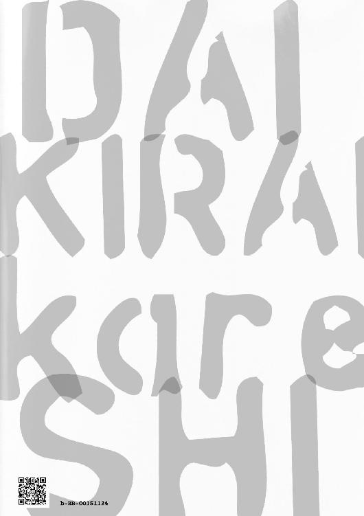

| 大嫌い彼氏（完全版） | |
| 新矢イチ | |
| 壱屋books (2017) | |
少女漫画と彼女とエッチが大好きな健全男子、佐藤蘭。１４歳。
ある日、事故に巻き込まれ目を覚ますと、大嫌いな元幼なじみの天敵（男）と付き合ってることになっていた。
どうやら頭を打った衝撃で、天敵に告られ、なぜか好きになり、付き合うまでの３年間の記憶をごっそり失ってしまったらしい。
しかし実は二人は、修復不可能な重大な問題を抱えていた。
記憶をなくす前の彼らは、恋人同士なんて呼べないほど荒んだ関係になっていた。
蘭は都合のいいセフレのような扱いを受け、身も心もボロボロだった。その事実を全くしらない蘭は――。
＊こちらの作品は、全３部構成となっております。
＊
佐藤蘭。健全な中学二年生。
好きな物は映画、彼女、少女漫画とエッチなこと。
嫌いな物（奴）は、元幼なじみの山内俳里。通称ハイジ。
顔は良いけど他は最低な性悪男。大っ嫌いな天敵だ。
「何言ってんのよ。アンタの恋人はハイジでしょ」
「嘘つけ！ 何で俺がこんなのと付き合って......ていうか待って、俺もアイツも男だから!!」
「いい加減にしなさいよ！ 恋愛に性別は関係ないってアンタが言いだしたんでしょ！」
「はぁぁぁ!?」
蘭は今......、猛烈に混乱している。
「ちーかー」
季節は猛暑。夏休み最後の八月三十一日の今日は、同級生の清家千夏と付き合って三カ月の記念日だった。
記念日。記念日と言えばエッチ。
都合のいいことに、蘭の両親は、商店街のくじ引きで当てた温泉旅行に出かけて、明日の夜まで帰ってこない。
そんなわけで（エッチ目的で）約束を取り付け、白昼〇時、胸をどっきんどっきんさせながら、家の前で待っていたわけだ。
「蘭くんおまたせー」
髪を頭のうえでお団子にした千夏が、ピョンピョン飛び跳ねながら出てきた。
足元は透明な厚底サンダルに、肩には大きめのクリアバッグ。膝上二十センチは軽く超えた超ミニのキャミソールワンピースが、これまたかわいい。
最近はやりの水色の小花柄だ。胸元は乙女チックに横フリルがついているが、うしろは腰のあたりまでガラリと空いていて、肩ヒモが背中でクロスしている。
うーん、なかなかエロい。
「あっちーな。早く俺ん家いこーぜ」
「おっけー」
よいしょと自転車の後ろにまたがる千夏に、「こけるなよ」と言って振り返る。
キュッと締まったウェストから、ワンピースの裾がふんわりと、マシュマロみたいに広がっている。カモシカのような細い脚は、格別に魅力的だ。
（おお）
ドキドキが止まらない。今日は、どうやって誘おう。ストレートに言っちゃっていいかな。千夏が欲しいって。
ヤリたい盛り。健康な中学生の欲望は底をつきない。
「......、ん、らんくん、蘭くん!!」
そんなことばかり考えていたせいで、気付かなかった。
「危ないよ!!」
勢いよく下った坂道の角から、宅配便のトラックが飛び出してきたことに。
見上げれば、真っ白い天井。古臭い白色灯が、煌々と照り付けている。
「あ、れ。俺......？」
激しい頭痛とめまいに襲われながら、蘭はようやく目を覚ました。
そのうちぼんやりと、記憶がよみがえる。
たしか千夏と一緒に家に向かっていて、飛び出したトラックに轢かれかけたのだ。
あれからどうなったんだろう。
（ここは......病院？ 千夏は？ どこにいんの？）
起き上がろうとするが、どういう訳か、体が鉛のように重たくて──。
「蘭!!」
「わっ!?」
突然にゅうっと、天井から顔が二つ現れた。部屋には自分一人だけだと思っていたので、蘭は飛び上がって驚いた。
そこにいるのは浅黒い男とスレンダーな女。
（だ、誰だコイツら）
この顔、どこかで見たことがある気もするが......。
考えこむこと数秒、ようやく思いだした。隣のクラスの双子、仁科兄妹だ。声をかけてきたのは妹のほう。
どういうわけか、二人の印象がガラリと変わっている。そろって黒髪のクルクル天然パーマだったはずなのに、仁科妹は腰までの真っすぐストレート、兄は奇抜な金髪ドレッドヘアになっている。
双子のチビで有名だった二人の体格はかなり大きくて、どう見ても中学生とは思えない。特に兄の方。ゆうに百八十センチはありそうだ。
「あれ、仁科さん......？ だよな......？」
自分の声があまりに低くひしゃげていて、蘭はさらに困惑する。
「ねえ、コイツあたしの事、仁科さんとか言ってるよ。なんかおかしくない？」
キモチワル。おげ、と仁科妹が舌をだして言った。
「うーん。でも、見た目はいつもの蘭だよ？」
続いて仁科兄も首をかしげる。蘭に負けず劣らず、こちらもかなりのダミ声だ。
「ほら、このボーっと口をあけた、いかにもアホっぽい感じ」
「うん。たしかにアホっぽい」
兄の言葉に妹も共感する。
「おい」
「それと、食欲と性欲しかありませんって顔」
「あー、してるしてる」
またまた兄の言葉に妹も共感する。
「ちょ......っ。なんだよお前ら、初対面なのに口悪すぎだろ」
初対面てなによ！ と仁科妹がバシンッと頭をはたく。
（この女、怖い......！）
それより自分の声の低さが本当に怖い。これはもしや、ケガの後遺症か。
「ヤリすぎて意識飛ばして病院に運ばれるぐらいだもんね。まあ、あれはハイジが悪いと思うけど」
「言うよな。アホな子ほどかわいいって。俺にはその魅力が全く分かんねえけどな」
「え？ え？」
その後も双子は言われも無い罵詈雑言 を浴びせ続ける。
蘭は混乱していた。
二人の会話についていけない。意味が分からない。
それと、どさくさに紛れて聞き捨てならない名前が耳に入り、困惑を極めるばかり。
今たしかに、ハイジと言った。
ハイジといえば、おなじみの童話の主人公と、腐れ縁で絶交中のあの男しか浮かばない。おそらく会話中の『ハイジ』とは、後者に違いないわけで......。
「ハイジが好きな気持ちも分かるけどさ、あんまり自分を傷つける恋愛ばっかすんなよ」
「──ん？」
蘭は何のことだと首をかしげる。
「だから、求められたからって、ホイホイセックスばっかすんなって言ってんの。じゃねーと今度こそヤリすぎで意識がぶっとぶよ、お前」
考えること数秒。さきほどの言葉が頭のなかで繰り返し流れ続ける。
（この人、いま何て言った？ ヤリすぎてどうとかって......）
現在の恋人は千夏だ。浮気なんてもってのほか、そんなこと絶対にしない。するわけがない。
「............」
（いやいやいや......その前にもっと、ほら、おかしいだろ、いろいろと！）
ハイジといえば、あのハイジ。山内俳里。
糞がつくほどヤリちんのクズ男だ。
「あ、うわさをすればハイジきた」
突如、ドアを蹴破る勢いで部屋に訪れたのは、たしかに山内俳里、本人である。
「げ」
相変わらず目つきは悪いが、憎たらしいほどの美形に変わりはない。現在は眉間に皺をよせ、蘭の方をじっと見ている。
「蘭......っ」
山内は、ベッドの上までズカズカと歩み寄ってくる。
（何なんだよいったい!?）
言っておくが、山内とは小学五年生の時、「一生俺の前に姿見せるな」とぶん殴って以来、一度も話していない。確かに、『ハイジくーん』なんて幼なじみやってた時代も、あるっちゃある。けれど、それは幼稚園から小学校低学年までの話。
今は大大大嫌いな天敵。嫌いになった理由すら思い出したくもない。
「何だよお前、誰が話かけていいって......ふぐっ」
動けないのをいいことに、躊躇もなく覆いかぶさってくる。
「この最低ゲス男！」と見切りをつけた相手に抱きしめられるという、最悪な状況。
「離せよテメエこら！」
そして蘭は見た。自らに降りかかった惨劇の一部始終を。
山内の顔面ドアップが急接近するまでの数秒間の出来事を、ぜんぶ。
「んっ──!! ん──っ!!」
かつてクラスの女子がうわさしていた『ハイジくんの格好いい唇』が、蘭の同じ部分をくまなく覆い尽くしている。
ふにゅんと柔らかいその感触は、紛れもなくやつのモノであって......。
「やっ、やめっやめろ......ちょ......っ」
顔から引き剥がそうとするが、力がはいらない。
そのうえ、動くたび下半身から（特に尻のあたりから）異常な鈍痛がおそってくる。
これまでに経験したことがない、ひどく熱をもった痛みだ。
（な、なんなんだよ、これ......、いってえ）
腰は痛いうえ、全身はゾワリと鳥肌が立っている。とにかく、上も下も、最悪だ。
「やめ......っ。俺には千夏が......」
「ねえ、蘭てばハイジのキス、すっごい嫌がってない？」
「ああ。やっぱちょっとおかしいかもな」
その隣では仁科兄妹が、まるで当たり前の風景を見るかのように、横一列に並んで二人を眺めていた。
「千夏ちゃん？ なーに言ってんの。あの子、蘭と別れて女子高に進学したじゃない」
もう二年も前の話でしょ。今更なに言ってんの、と仁科妹はつっけんどんに言った。
「......え？」
千夏と、別れただって？
その発言で、蘭の思考は再び停止した。
「ちょっと、アンタ本当に大丈夫？」
仁科妹は怪訝な目を向ける。
部屋の隅に目をやると、天敵の山内俳里がいる。腕組みをして壁にもたれかかるように立ち、同じく蘭の方をみている。蘭はあえて目を合わさないようにしていた。
「確かに、千夏ちゃんと付き合ってる時、トラック事故に巻き込まれそうになったって話は聞いたことあるわよ」
でもアンタ、あの時は自力で避けて電柱に激突したんだってヘラヘラ笑って言ってたじゃない、と仁科妹は言うのだ。
「待って。意味が分かんない。じゃあ俺、事故のせいで入院してるんじゃないの？ ていうか、千夏と別れたってどういう事？」
たずねると、どういう訳か、顔がみるみる険しくなり。
「ちょっと口を慎みな。ハイジもいるんだよ。今さら元カノの事を掘り返すのはよしなさいよ」
「あのさ......。何を勘違いしてるのか知んないけど、俺の彼女は千夏だけだから」
「このお馬鹿！」
仁科妹は、ますます苛立ちを募らせる。頭のなかは、クエスチョンマークでいっぱいだった。
「さっきから何言ってんの。アンタの恋人はハイジでしょ！」
「はああ？」
咄嗟に山内を見る。奴はニコリとも笑っていない。それどころか、じっと蘭を見ているだけ。眉間にシワを寄せた、とにかく神妙な顔つきだ。力強い視線には、蘭のような困惑も動揺も感じられない。
蘭はもう一度仁科兄妹を見た。たちの悪いドッキリじゃないかと訝しむが、目が合うなり「冗談もほどほどにしなさいよ」と逆に咎めるような視線を投げられるだけ。
「う......嘘つけ！ 何で俺がこんなのと付き合って......ていうか待って、俺もアイツも男だから!!」
「アンタいい加減にしなさいよ！」
仁科妹が、とうとう女ヤクザのような恐ろしい形相でつかみかかってきた。
「男同士？ だから何よ。それはあたし達が散々アンタに忠告してきたセリフよ！ だけど恋愛に性別は関係ないってアンタが言いだしたんでしょ！」
い、意味が分からん。どこの世界に、男と、しかも大分前に絶交した大っ嫌いなやつとにゃんにゃんする馬鹿がいるんだ。
「し、知らねーよ、そんなこと......っ」
「知らないって......アンタねえ!!」
「まあ落ち着けって。蘭も病み上がりで混乱してるのかも。とりあえずおばちゃん呼んで先生に診てもらおう」
蘭は今、猛烈に混乱している。
「脳震盪 が原因だと思いますが、佐藤さんに、中度の記憶障害が起きているようです」
五十代半ばの男性医師は、ボードに貼った脳のＭＲ画像と蘭とを交互に目をやり、「ふむ」と顎をしゃくって言った。
「先生、こういう事例はよくあるものなんでしょうか？」
隣に座る母親も、医師と同じくＭＲ画像と蘭を心配そうに見ている。
つい数時間前まで病室で蘭の容体を見守っていたという母は、長期の入院に備えた大量の荷物を両手にひっさげて駆け込んできた。
夫婦で温泉旅行中のはずの母が病院で待機していたこと、そして先ほどの医師の説明を聞いて、蘭もようやく一連の出来事を理解しはじめる。
「意識不明だった患者の方に、一時的に記憶障害が起きることはままあります。佐藤さんの場合は、記憶が三年分ほど途切れてしまっているようですね。今は意識もはっきりしていますし、ＭＲにも脳の障害は見受けられません。いまはとにかく、安静にして様子を伺いましょう」
佐藤蘭、十七歳、私立の共学校に通う、高校二年生。
それが現在の自分、だという。
十七歳。つまり、十四歳という記憶そのものが誤っている。千夏と自転車で二人乗りをしてトラックにぶつかりそうになったのは過去の話で、現実はそこから三年も経っているという。
(嘘だろ......。俺、高校生になってんの。なんだよそれ、ありえないって)
仁科兄弟の説明によると、十七歳の蘭は、直前まで山内の家にいたようだ。そこで何かしら(事故のようなものとか言っていた？)があって意識不明になり、今の今まで、ずっと眠りこけていたという。
倒れた時に頭の打ち所が悪かったせいで、記憶が混乱してしまってるのだろう。そう言った医師の言葉と合わせて推察すると。
現在の記憶は、千夏と遊ぶ予定だった中学二年の八月三十一日で停止していて。そこから三年間の思い出が、すっぽり抜けている、ということになる。
それだけならまだよかった。
それよりさらに衝撃的な事実。
空白の三年間のうちに、あろうことか蘭は、大嫌いなやつと恋人関係に発展している。
それがあの馬鹿、山内俳里。通称ハイジ。
昔は仲のいい幼なじみ。現在は大大大大大っ嫌いな天敵である。
（なぜ。なぜだ。俺よ、よりによって何で男を、しかも山内を恋人なんかに選んだ）
「まあ忘れちまったもんは仕方ねーよな。てことで、まずは千夏とよりを戻すとして......」
「は。ふざけんなよ」
退院許可があっさりと下りたので、その日のうちに帰りの身支度をしていた病室内。いまだしつこく居座る山内が、蘭の独り言に唐突な横やりを入れてくる。
「忘れたなら、もう一度俺に惚れさせてやる」
記憶ないからって浮気すんじゃねーぞコラ、猿。と聞き捨てならぬ暴言まで浴びせられ。
「誰が猿じゃ」
「テメーのことだろ」
「て......っ」
(こ、この野郎......っ。相変わらず口が悪すぎだろ)
本当に、一体何がよくて彼氏なんかに選んだんだと、蘭は心のなかで悪態ばかりついていた。
「お前、ついてくんな！ もう帰れよ」
しかも帰りの道なり、蘭をぴったりとガードするように、後ろから山内が追ってくる。母と一緒に夕飯の買い物をしたかったのに、山内のせいで別行動になってしまうしで最悪。ハンバーグ食べたかったのに。『母ちゃんのケチャップ味のハンバーグ』は、蘭にとってなによりの栄養補給源なのだ。
「お前邪魔なんだよ！ マジでどっか行けよ」
ダッシュして追いつこうかとも思ったけれど、悲しいかな、下半身の鈍痛がまたもやそれを阻止している。
「あのさあ、どこに帰るつもり？」
「どこって、家に決まってんじゃん」
「ははは。そう言うと思った。嫌がってるとこ悪いけど、実は俺ら同棲してんだわ」
悪いね。悪びれる風もなく、半ば棒読みで山内が言う。
「言っとくけど、蘭がどう思ってようが、俺はもう絶対、お前を手放すつもりないから」
逃げんなよ。逃げたら怒る。あと電話もすぐ出ろよ。出ねーと怒る。それと寝るときのおやすみのチューも......うんたらかんたら、長い独り言が背後で聞こえてくる。
「お前、絶対俺を脅して無理やり付き合ってたんだろ。なあ、そうなんだろ」
「ばーか。めちゃくちゃかわいがってたよ。お前も、俺といて幸せだって笑ってたよ。二日前の話だけど」
「う、嘘だ嘘だ嘘だ嘘だ嘘だ嘘だ......」
「嘘じゃないって猿。ホラ、おいで」
山内はさっと蘭の手前まで回りこむと、背中をむけてしゃがみこんだ。
「なんだよ」
「歩くのつらいんだろ、おぶっちゃる」
はよ乗れ。
細長い三白眼が、上目づかいに蘭をにらんでいる。そこから乗る乗らないの合戦を繰り広げたのち、腰の鈍痛に負け、結局おぶられていたりする。
「いいか、今日だけ特別だからな。今日だけは一応、仕方なくお前の家にいってやる！」
ぶらぶら脚を振り乱しながら蘭が言った。
「あーはいはい。んで、夕飯どうする。ハンバーグでいい？」
「あ、お、おう......」
「お前好きだもんな、ハンバーグ。ソースはケチャップだよね？」
「あ、うん。詳しいな、お前」
母親しか知らないと思っていた黄金パターンを言い当てられて、若干目が点になっていると。
「ふん。俺の献身的な愛をなめんなよ、猿」
とつぜん山内がバックキックをかましてきた。しかも見事、かかとが尻にクリーンヒットする。おかげでジンジンと痺れるような鈍痛が押し寄せ、ぎゃっと悲鳴がでる。
「イッ......!! 何すんじゃボケ!!」
二人の甘い（？）攻防戦は、まだ始まったばかり。
中学までは、普通に女が好きだった。初めての相手も二つ年上の女の先輩だった（と思う）。
山内俳里の恋愛遍歴を変えてしまったのは、元幼なじみのツンデレ男、佐藤蘭が原因だ。
蘭とは、幼稚園から幼なじみだったが、ある時期に友達の縁を一方的に切られた。
彼の大切な物ばかり片っ端から奪った結果なので、自分の行いが原因であることは認識している。
のちにそれが恋の始まりだったと気付いたが、そんな複雑な感情、幼い子供に理解できるはずがない。
同い年でどちらもＡ型。家も近所で幼稚園も一緒だったから、対抗意識と考えるほうが自然だった。
二人はなんでも張り合った。
毎日のように身長も競い合った。
蘭より大きくなりたくて、毎日一リットルの牛乳を飲み干した。そのかいあって山内はクラスの中でも成長が早く、八歳の頃はすでに四年生なみの体格だった。蘭とは雲泥の差。山内少年は優越感に酔いしれた。
その頃からだ、蘭が『ハイジ』と呼びだしたのは。
不覚にもその名は、クラス中に広まった。つぎは学年中に広がり、最終的に学校中に広まった。
小二と思えない外見から人気に火がつき、女子の人気も独り占めした。見知らぬ女子から「ハイジくーん」と呼ばれまくる。そんな環境。
蘭と距離ができ始めたのはそんな頃。
何をしても、前みたいに『ハイジって、すげーな』と言ってくれなくなった。
当然、山内はやっきになった。何としても蘭に『すごい』と言わせたかった。認めてもらいたかった。目標も『蘭を追い抜くこと』から『蘭にすごいと言われること』に変わった。
小学四年生のある日。蘭が教室で恋バナに夢中になっていた。山内はしばらく盗み聞きして、蘭が好きだという子を特定して、さっそく告白した。
人気絶頂だった山内ハイジの告白に、もちろん二つ返事で付き合う事に。
だけど困ったことに、数日たつと蘭はすぐにほかに好きな子を作ってしまった。だから山内も『他に好きな子ができた』と言い、すぐさま新たなターゲットの元へ走った。蘭に好きな子ができたと聞くたび、告白しては振るという行為を繰り返した。中には『ハイジくんと別れたくない』と泣きだす女子もいたが、構わず振っていた。
そして迎えた小学五年の冬。とうとう山内少年に天罰が下った。
『放課後、俺のクラスに来い』
この日、靴箱に入った無数のラブレターに、蘭からの手紙がまぎれていた。山内は『やった！』とガッツポーズをした。忘れもしないあの日は終業式の一日前、十二月二十三日の午後のこと。
（蘭のやろうめ。とうとう俺のすごさを認めたな！）
その頃、どこを見ても蘭に負けている所がないと自負していた山内は、自信に満ちた顔でクラスに乗り込んだ。『ハイジってやっぱすげーな』と言われるだろうと思って。
しかし待っていたのは、ビンタと暴言。
『お前、最低だな！ 理沙ちゃんと美幸ちゃんに謝れよ!!』
『......は？』
バシンッと頬に痛みがはしる。何が起こったのか分からなくて、しばらく口をぽかんとあけて立ち尽くしていた。さらに追い打ちをかけるように、『は、じゃねえんだよ、このゲス男!!』と暴言。
『なんだよゲスって』
ジンジンと熱を持つ頬を手で抑えながら、山内は久しく腹立たしい感情に襲われていた。称賛するどころか、ゲス呼ばわり。それが呼び出した理由だったこともショックだった。
だからつい、いらぬことを口走ったのだ。
『お前が、また別の女を好きになったのが悪いんだろ』
『......は？』
一拍おいて、今度は蘭が聞き返してきた。いままでにないとっても低い声だったことを、今でもよく覚えている。
『蘭が好きな女は、俺が先に奪わねえと。じゃねーとお前に負けるだろ』
仕方なかったんだと山内は言った。蘭が、隣のクラスの木村さんが良いと言いだしたせいだと。
『俺はどんなちっぽけなことでも、お前に負けたくねーんだよ。だから......』
だから、お前の好きになった女の子を片っ端から声かけまくってただけだもん。
それに蘭も悪いんだぜ。俺のことを『すごい』って言わなくなっただろ。だから、ここは一回ちゃんと俺の力を見せしめてやろうと思って──。
その後は、虚ろにしか覚えていない。
記憶にあるのは、お前なんか大嫌いだと怒鳴られた事。あと、さらに何発かひっぱたかれて『一生俺の前に顔を見せんな！』と教室を追いだされたこと。
そして『遊び人ハイジ』という呼び名が、一部の生徒の間ではやったことだ。
翌日から二人は絶交状態になった。もう二度と一緒に登校する事もなくなったし、廊下ですれ違っても完全に無視された。
蘭の姿をみるだけで胸がズキズキと痛み、前みたいに話せないと思うと、恋しさと悔しさで、涙が止まらない日々が続いた。
そんな地獄の小学校生活が一年と三カ月続いたのち、二人は仲たがいをしたまま卒業した。
蘭は地元の中学へ進んだが、山内は隣町の中学に編入希望を出した。
通学距離が大幅に伸びたせいで、通学時間も一時間以上早くなった。おかげで顔を合わすことはなくなり、二人の友情は、ここで一度完全に決裂したのだ。
──ここまでが、蘭の中に残っている記憶の全てのはずだ。
それから二年後の偶然の再会を、蘭は何にも覚えていない。
ましてや、山内が胸のモヤモヤの正体に気付くまでの葛藤や、一生分の勇気をだして蘭に告白したことも。まったく都合のいいことに、現状二人が付き合ってるという事実が、なにもかも無かったことにされている。
「はあ。さいっあく」
実はその張本人が現在、自宅のベッドで無防備に横たわり、スヤスヤと寝息を立てていたりする。キッチンで初めての手料理に四苦八苦しているうち、寝入ってしまった模様。
「おい猿」
右肩をゆすってみる。片方の足で。
「うーん」
顔がピクリと反応するが、起きる気配はなし。
「起きろ猿」
ちょっと口調を荒くする。すると蘭が難しい顔をして、勢いよく右足が蹴り出された。
ガスッ!!
見事な空中ローキックは、山内の右膝に命中した。
（この野郎......！）
昨日までの健気でしおらしい蘭からは、考えられない仕打ちである。
いつもいつも、ウザいくらいに「俳里～」と両を手を広げて抱きついてきたあの蘭が。
「俳里だいすき、ちゅっちゅしよ」が口癖だったあの蘭が。
まさか、この俺を足蹴にしている。
天と地がひっくりかえるほどの変貌ぶりである。
怒りがこみあげる一方で、山内はこれまでの自分の行いを反省していた。
これは、最近あまり蘭の事を大切にしなくなった罰かもしれない。
最初こそ、壊れ物を扱うかのように、とても大切にしていた。
生活はすべて蘭を優先にしたし、テスト期間に合わせて早退したり。毎日送り迎えもした。
同じ高校に進学してからは関係をぶっちゃけて、ところ構わずいちゃついた。
蘭はどんどん変わった。
日に日に依存が強くなり、べったりとくっつくようになった。
交際三年目には、『俺、俳里がいなきゃ生きてけない』と泣きだすほどには。
俺は蘭に愛されている。
その頃から、変な自信を持つようになった。
徐々に目を合わせる回数が減った。会話も、体に触れる数も減った。
蘭の方は逆に縋りついてでも傍にいるようになっていて、その想いの強さが段々と重荷になっていった。
突き放すようなことも散々した。寝床を別にしたり、一晩中友達と遊び呆けたり。わざと避けるようなそぶりを繰り返した。
それが結果的に二人の間に溝をつくってしまうなんて、考えもしないで。
『俺......もう、俳里に愛されてるって、実感できない』
久々に大ゲンカをした先日のこと。蘭は泣きじゃくりながら『俳里が信じられない』と叫んだ。
『俳里、もう別れよう。俺、これ以上俳里のことを好きになりたくない。だから......最後に俺のことめちゃくちゃに抱いて』
蘭の計画は周到だった。
すでに飲み物に媚薬を盛られ、自身もそれを大量に飲んだと言っていた。
突然のことに動揺がおさまらず、臨海超えした感情と視界が、グラグラと左右にゆれていた。
『はやく抱けよ！ 最後くらい......、お前に愛されてたって実感させてよ！』
言われるがまま、ひどく一方的に蘭を抱いた。
自分勝手だった。
別れを告げられて、久しく忘れていた独占欲が暴走した。
どこへも行かないとタカをくくっていた宝物が消えてしまいそうになって、ようやく、その存在の尊さに気付かされた。
しかし、時はすでに遅すぎた。
行為の後、蘭は意識を失った。目を覚ました彼は、記憶も失っていた。三年間の思い出の全てをだ。
『これ以上俳里のことを好きになりたくない』と発した宣言通りになってしまった。
今の蘭は、数日前までとはまるで別人のように山内を忌み嫌い、牙をむいてくる。無理もない。彼の記憶は、山内が大嫌いだった中学時代に戻っているのだから。
今さらだろうが、三年分の後悔をかみしめるしかない。
こうなる前に、もっと大切にしていればよかった。大事にしていればよかった。そうすれば、きっとこんな事にはならなかった。
『アホ。めちゃくちゃかわいがってたよ。お前、俺といて幸せだって笑ってたよ』
あんな嘘が口をついて出てしまったのは、自分の過去の行いを見透かされた気がして怖かったから。
そして、もう二度と大切な人を失いたくないという、後悔と懺悔の現れでもあった。
とっくんとっくんとっくんとっくん......。
どこかから、規則正しい鼓動が聞こえてくる。
「蘭」
うん、と布団を抱きしめ、蘭は身を反転させた。すぐさま硬いなにかにぶつかり、その動きがとまる。
体勢が落ち着かなくてゴソゴソと動いてるうちに、右手が何かに触れた。
何だろう。あったかくてゴツゴツしている。
「おい、猿」
「う、ん......」
とっくんとっくんとっくんとっくん......。
いつもの万年床にしては、今朝の寝心地は最高だ。敷布団がふわふわしてて気持ちいい。
定期的に音律をきざむその場所に顔をこすりつけてると、ぎゅうっと締め付けられた。
どこからともなく石鹸のいい匂いがする。
知らず知らず蘭はほほ笑んでいた。
くしゅっと鼻をすすり、いい匂いのする所に頭をゴシゴシこすりつける。
「朝から誘ってんじゃないよ。いい加減起きろ」
エロ猿。
するとバシンっと頭に衝撃が。
「いっ」
ふわふわした夢の世界から、蘭の意識が一気に目覚める。
「......ってえなあ」
せっかく気持ち良く寝てたのに、一体どこのどいつだ邪魔したのは。
瞼をこすり声の方に目をやる。やけに見覚えのある、横に長い三白眼がじっとこちらを見ている。
「げ」
「げ、じゃねーよ起きろ」
（くそハイジだ）
ハイジはハイジでも、かわいげのかけらもない、通称ゲス男の方のハイジ。
たしか昨日は、あまりの腰の痛さに耐えかねて渋々山内に付いてきた。二人の家だと言い張る場所に。
でも約束したはずだ。何があっても、お前となんか一緒に寝ないからって。そう宣言して、われ先にとベッドにダイブしたのに。
「おまえ約束破ってんじゃねえよっ！ 俺のベッドに上がってくんなや」
「誰がお前のベッドだよ猿」
開き直っているのか、その顔に反省のかけらもない。
「猿言うなや！」
「うるさいから耳元で叫ばないでくれる」
じゃあ離せと思うのだが、腕の中に蘭を閉じ込めたまま、一向に力を緩める気配はない。
（こ、この野郎！ これのどこが『彼氏』だよ）
もはや、男同士だとかそれ以前の問題だ。
人を猿よばわりした挙句、起きざまに頭をはたいて暴言を吐くような、こんな不親切な恋人がいるだろうか。いや、そんな奴はこの世にいるわけがない！ 蘭は鼻息を荒くする。
（こいつ、俺の記憶がないのを利用して、からかってるだけじゃないの、もしかして？）
つまり、山内の恋人発言は小学生の時分に受けていた、悪趣味な意地悪の延長じゃないかと思うわけで。
「バカ。蘭が泣いてたからだろ」
「......は？」
と思っていたら、今度はとたんに猫なで声。つんけんした表情までも、ビデオテープの四倍速並みの速さできゅるるると真顔に切り替わる。
「寝ながら泣いてたから、気になって近付いたんだろ。したらそっちが勝手に抱きついてきたんだよ」
「あっそ。じゃあ起きたからもう離れろよ」
布団にくるまり、ゴロンとベッドの脇まで一回転。
「ほらあっちいけよ！」
自身のテリトリーを確保した所でシッシと野犬を追い払うかのように手の甲を振った。
「......お前さ」
山内はそれを見て、喉に異物がつっかえたような奇妙な顔でなにやら言いよどむ。
「なんだよ？」
「お前、あれだよ、あれ」
「だからなんだよ」
「顔、ヨダレでべとべとになってるよ」
向かって右頬に手の甲を当て、ふき取るようなジェスチャーをする。
「え、うそ、まじで」
「まじで」
慌てて蘭も、自分の右頬を拭おうとするが。
「ちがう、反対」
「いやもうちょい右」
「ちがう、下」
「それは下すぎ」
「そっちじゃない、顎の少し上の」
蘭の手が前後左右に動くたび、山内からやけに細かな注文が入って。
「もうどこだよ分かんない」
「だから、ここ」
手首をつかまれたが、今度は大人しくされるがままになった。
ついで、もう片方の腕もつかまれる。
「あれ？」と思っているうちに山内が両脚を広げ、蘭を引き寄せるとそのなかにすっぽり収める。
また「あれ？」と思っていると、背中をぎゅっとされて、急接近した切れ長の三白眼がゆっくり閉じられて。
「え......!? ん、んっ──」
最後はもう、抗う時間さえないほど強引だった。蘭の唇が、山内の同じ場所に重ねられたのだ。
キスから逃れようと暴れるが、ビクともしない。
「や、めろ......っ、おま、嘘──」
声が続かない。口を開ければ、奥まで舌が入り込む。
じっくり味わうように、ため息も、叫び声も、全てを絡めとられた。
「んぁっ、ばかっ......」
そのうち太腿の辺りに妙な感触が。鋼のように熱くて硬いそれは、ガチガチに興奮した山内のアレである。
（え、うそ、勃起してる、こいつ、ガチで勃ってる）
男なら分かるその現象。千夏をベッドに押し倒すとき、蘭もいつもこうなる。しかし山内の『こうなる』対象が本当に自分であったことに、今更だがショックを隠せない。
「んっん──んん......っ！」
（や、やだやだやだっ。男相手にキスして勃起するとか。やだコイツマジできもい！）
男と男がにゃんにゃんする。蘭はようやくその意味を理解した。
キスをされて、欲情されて、やっと現実味を帯びたわけだ。
（マジか。マジで今まで、俺は山内と、こんなことしてたのか）
三年後の俺、道を踏み外しちゃってる感が満載すぎるだろ。
消えろ。なくなった俺の記憶とともに、こんな腐った未来なんか全部消えてしまえ！
両脚をバタつかせて抵抗を試みるが、やはり山内ハイジという鉄壁はびくともしない。
それどころか乱暴にシャツをたくし上げると中に手をしのばせ。
「やめ......っ」
素肌を直接まさぐられ、ゴツゴツした男の手の感触に、生理的な嫌悪感がぞわあっとたちのぼった。
山内の手は背骨をたどり、下から上に、虫が這うように移動する。
「ん......っ」
辿った所がざわざわする。キモチワルイ。
首のあたりは執拗に触られた。蘭の感度を知り尽くしているようで、そこを撫でられると自然と息が上がる。蘭の反応を見て、山内は同じ場所ばかり、執拗に愛撫を繰り返した。
鎖骨の窪んだところ。耳たぶの下の柔らかい部分。首の後ろは特に敏感になっていて、繰り返しなぞられるとゾクゾクした。
巧みな指遣いに、身体の熱も上がってくる。キスをされ、体をまさぐられ、腰をクネらせる自分に気が付き「やばい」と我に返る。
「や......っやだやだやだっ離れろバカ！ この変態野郎!!」
力づくで山内の顔を押し退けるが離れようとしない。
蘭はやけくそに下腹部をボコボコに蹴りあげた。
「ってえなあ猿......！」
山内も応戦する。蹴り上げる足首を掴み、上から捻じ伏せようとする。両者、しばらく取っ組み合いが続いた。
「俺の断りもなしに勝手に触ってきやがるテメーが悪いんだろーが！」
「スキンシップでいちいち断り入れる男がいるか」
「スキンシップなんか必要ねーし！」
蹴りを出す足はことごとくつかみ取られ、ズルズルと引き戻される。
それでも蘭は抵抗をやめなかったが、上から覆い被されると、あっけなくすべての動きが封じられる。
「やだっ、ばかやめろって」
「付き合ってるんだから普通でしょ」
「誰がお前なんか......！」
「だから付き合ってんだよ、現状」
「やだよ！ お前のこと大嫌いなんだから！」
「俺は好きなんだよ！」
わずかな隙をついて山内が蘭の上にのしかかった。目はつりあがり、食いしばった口元から僅かに八重歯がのぞいている。
「いい加減に観念しろよな」
そういい捨てると、目にも見えぬ早業で半袖シャツを脱いでいく。軽く腰を浮かせ、下のスウェットも腰まで引き下ろす。
そこから、ぬうっと股間のでっぱったボクサーパンツが姿を現した。
「ぎゃぁぁぁぁぁ!!」
早朝の清涼感ただよう、とある住宅街。その日、ひとりの少年の叫び声と何かをぶちのめすような爽快な音色が、近隣の住宅中にひびき渡った。
「それはハイジが悪い」
「同意」
早朝の校庭の中庭。巨大なモミの木に寄りかかって意見するのは仁科妹だ。兄もうむと首をたてに振る。
高校生の蘭は、どうやら双子と仲がいいらしい。
「だろ！ 最低セクハラくそ山内、寝込み襲いやがってキモいんだよ！」
「なんだコラ」
鼻息を荒くして語る蘭の頭が思い切りはたかれた。
「いっ......、触んじゃねーよ変態！」
左頬にべったり紅葉マークをつけた隣の男は「は？」と口の端をヒクつかせる。
「テメーがキスもエロも拒否んのが悪いんだろうが」
なんなら今ここで続きしてやろうか。ん？ とイジワルに挑発する始末。
「やめろよ。ていうか近寄んな！」
「そういや、さっき涙声だったよなぁ。かわいかったよ、俺に服剥がれて小鹿みたいに震えてたお前。俺のナニが超反応しちゃって......」
「お馬鹿!!」
山内の頭の上を、丸めた教科書がスパンと軽快に舞った。
「今の蘭にそんなこと言っても逆効果なだけでしょうが」
仁科妹だ。
教科書を握った手を伸ばして山内を叱りつけている。長い黒髪をポニーテールにしている今日は余計におっかない。
「チッ。だから女は冗談が通じねえ」
「何か言ったアンタ」
言い合う二人をよそに、蘭はそわそわと脚を組みなおした。
実は今、結構気分がよかったりする。
（なぜなら今朝、千夏と連絡をとったからだ！ 山内の馬鹿が朝風呂に入ってくれたおかげでな！）
「ふはははははははは！」
とつぜん笑いだしたので、三人がぎょっとした顔で振り向いた。その視線はあえて無視しておく。
千夏は突然の連絡に驚いてるようだった。
しかしこれまで起こった事を洗いざらい説明すると、戸惑いつつも納得してくれた。
そして今日の放課後、駅前のマックで会う約束を取り付けたのだ。
（へへへ。これで山内とは今日をもってお別れだ。残念だったな山内ハイジ！ 俺は千夏とよりを戻すぜ）
「蘭のやつ、朝からぶっとんでんな」
仁科兄が哀愁ただよう目で蘭を見ている。
「まあ、ハイジと付き合うあたり、前々から変わってるとは思ってたけど」
そこに遠い目をした妹も加わる。
「猿だからな、アイツ」
ふふんと鼻を鳴らし、山内も加勢する。
（ふん。なんとでも言え）
蘭は腹のなかでほくそ笑む。
それにしても、たった三年でも時代は大きく変わるものだ。昨日まで愛用してたはずのガラケーが、今朝から最新のスマホに化けている。
情報が全てアプリ化されている画面は、なんじゃこりゃ状態。ツイッターもlineもデビューしちゃってるし。
まあごちゃごちゃ触ってるうち、偶然千夏の連絡先を発見できたのだから結果良しとしよう。
でも納得のいかない変化もあった。例えば蘭の容姿がそう。今朝は鏡のまえに立ってがくぜんとした。
身長は、まあそこそこ伸びて百七十センチ位。にしてもやけに細っこい。
手足なんか筋肉がまるで無く、肌の色も女子なみに真っ白だ。
なんだこれ女みたいじゃんか。しかも手足なんかツルツルで、きちんとムダ毛が処理されている。まさかと思いパンツの中をのぞいたら、アンダーヘアは薄いものの普通にあった。
顔のパーツは少し凛々しくなってるものの、華奢なせいか男らしさがほとんどない。
なにより髪形が一番気にくわない。昨日まで自慢だった黒髪アシンメトリーが激変している。
髪は伸びて耳の下あたり。色はブリーチしたあとに黒色を入れた感じのアッシュブラック。ふわりとレースのリボンが垂れたような、柔らかいスパイラルパーマが全体にかかったマッシュヘアに、生え際から耳の下あたりはすっきり刈り上げられている。
ぱっと見、ベリーショートの女の子がそこにいるみたいだった。
ずっと細マッチョ系を目指してただけに、この容姿の変化はかなりショックだった。
確かに、こんな細っこい腕じゃあ押し倒されても勝ち目はない。ていうか、これ絶対俺の趣味じゃないし。
くそ山内め。俺をこんな姿にしやがって。
「俺の青春をかえせコノヤロウ！」
教室に向かう途中、感極まった蘭は、報復とばかりに隣の巨体を蹴りつけた。
「お前、いい加減にしろよ！」
すぐにメッセンジャーバッグの反撃が来て、思い切りケツをはたかれた。
「いっ、腰痛えって昨日から言ってんだろーがハゲ！」
「うるせー猿」
またもやバシンッ！ と尻に会心の一撃。
「猿言うなや！」負けじと蘭が蹴り返せば。「ガキ」と山内が尻をたたく。
「変態！」
「馬鹿」
「どスケベ！」
「お前もな」
「一緒にすんなや！」
「一緒だろ。男はみんなスケベだって」
「違うし！」
「何だよ。マジになっちゃって」
「ニヤついてんなよ、マジできもいわ」
「かーわいい」
「は」
「かわいい」
「や、やめろよ！」
「だって可愛いし」
「ばっ......」
「うん。やっぱお前のこと好き」
急に山内が目尻を細めて見つめて変なことを言いだした。
「な、なに言ってんだよ」
まただ。急にペースを崩され、蘭は怒りすら通り越して焦ってしまう。
喧嘩だったら断然慣れてる。だけど好きとかどうとか、そんな事を真っ向から言われると、正直どうしていいか分からない。
そんな蘭の心境を手に取る様に理解してるのか、昨日から事あるごとに、不意打ちの告白ばかりしてくるのだ。
喧嘩をふっかけても、いつのまにか足先であしらわれてる。
何もなかったかのように前を歩く背中は余裕に満ちていて、ますます気に入らない。
「この......っ」
「お前って意外と気が強いよな」
山内が急に振りかえった。
「まあ、そういう芯のしっかりしてる所も好きだけど」
と思いきや、廊下の壁に手をつき、行く手をさえぎられる。
「どけよ」
「やだね」
至近距離に熱を感じ、蘭はうざったそうに顔を背ける。
「らーん」
「な、なんだよ」
「早く俺に恋してたこと思いだせよ」
耳元で甘い吐息と声が漏れる。瞬間的に、すごく嫌な衝動が突き抜ける。
「な、な......に言ってんだよ。いい加減、どけよ」
「どうした、顔赤いよ？」
山内が言う。ニタリと腹黒さを漂わせるしたり顔で。
しかも必死に目線を反らそうとしてるのに、わざとらしく身をかがめて顔をのぞきこんでくるのだ。
「や、めろよ」
「家でも同じことしてやろっか？ したらお前喜んでくれる？」
「な......っ。ななななに言てりゃアホかっ......！」
テンパりすぎてかんだ。
「本気だから。もう一度蘭を振り向かせるためなら俺は......」
「うわーっ！ うわーっ！」
少女漫画に出てきそうな歯の浮くセリフが連発する。
もう我慢の限界。叫びながら思きしタックルをかます。山内には目もくれず、一目散に教室に駆け込んだ。
「ていうか、そこお前のクラスじゃないし」
蘭の背中を見つめながら、ふと真顔になった山内が呟いた。
その頃の仁科兄妹は、教室の窓から顔をだして二人の様子を観察していたりする。
「なんだかんだ言って前より仲良さげじゃない、あの二人」
窓枠に頬杖をつく妹はあれはあれで良いのかもね、とぼやいている。
まるで影武者のように、山内の後ろをトボトボ歩いていた姿を思い浮かべれば、真っ向から喧嘩している今のほうがよっぽど健全だと思うのだ。
兄もふむとうなずいている。
「もしかしたら、蘭はこうなることを望んでたのかもな」
「どういう事よ？」
「ほら、よく言うだろ『鳴く蝉よりも鳴かぬ蛍が身を焦がす』って」
「は？ そんなの誰も言わないわよ。なによそれ」
意味不明なこと言わないでよねと顔をしかめる妹の横で、兄が満足げにふっと笑った。
わが兄ながら、ナルシストぶりに興ざめする瞬間だ。
廊下に目を向ければ、山内と蘭が血まなこになって互いの尻を蹴り合っている。
（どいつもこいつも、男ってやつは......！）
「まあ、あれだ。相手を好きって気持ちも、度がすぎると逆効果になっちまうって事」
「あっそ」
妹は内心「なるほどね」と納得する。
山内の態度がまさにそれだ。昨日まではあれほどぞんざいに扱っていた蘭を、今日は目の色をかえて追いかけ回している。
「それも一理あるとは思う。でもあたしに言わせりゃどっちもどっちなのよ」
確かに今までの態度は恋人としてなかったと思う。だけどあの二人が破局寸前になった理由を、山内だけのせいだとは思わない。
「そうかな。俺はあまりにも蘭が不憫だと思うけど」
「アンタの見る目は表面的なのよ！」
「......」
山内の愛情がどんどん薄れていることを、蘭は大分まえから気付いていた。そして悩んでいた。
毎日のように相談にのっていた妹は、蘭の味わってきた寂しさも、いつか山内の心が離れてくんじゃないかという恐怖もよく分かってるつもりだ。
だけど別れ話を切り出した昨日まで、蘭は一度も本音をぶつけようとしなかった。何をされても我慢して、不満も全部飲みこんできた。
そして『良い恋人』を演じようと必死になって、自分を追いこみ過ぎて倒れてしまった。
「アイツら、ちゃんとお互いを想い合ってたよ。本人たちにその自覚がないだけでさ」
本当にどうでもいいなら、別れ話切り出したくらいで我を忘れたりしないだろうから。
妹は知っている。山内がふと目線を反らした先には、いつも蘭の姿があったことを。
（ハイジの本心までは分かんない。でもアイツはアイツなりにちゃんと蘭を好きだったと思う。じゃないと、まる一日病室でつきっきりで看病なんかできないもの）
「どっちもどっちで、恋愛にマヒしちゃってんだよね。今のままで十分幸せなのに、こうなるまで気付かないんだから」
蘭は蘭で、普通に愛されるだけじゃ満足できなくなってしまった。
マンネリ化した関係に不安を抱き、もっと愛されたいという欲求が暴走してしまったのだろう。
山内は逆で思われている安心感が勝ってしまい、突き放すような態度をとるようになった。
本当は、ふいにその姿を追ってしまうほど好きなくせに。
「そう考えるとアイツらって本質的に同類なのよね。元素記号で言うならエイチツーオーツーだわ。あの過酸化水素がお互いを自滅させてんのよ」
そこまで言うと、廊下に目を戻す。
今度は蘭が壁と山内にはさまれて顔を真っ赤にさせていた。
（出たよ、必殺壁ドン）
蘭があれに弱いのは今も昔も変わらないらしい。さすが少女漫画オタクだ。
すると、蘭が急に何か叫びながら隣のクラスへ逃げ込んでいく。
山内は、性懲りもなくまた何かやらかしたようだ。
「まったく......。男ってホントに馬鹿ばっかり」
その馬鹿の背中がクルリと方向転換する。と、野次馬気分で窓から顔を出した仁科兄妹に気付いたようで、バチっと視線がぶつかった。二人を見るや、山内はズカズカと大股で歩み寄る。すれ違う女子から黄色い声。
（あんな目つきの悪いやつのどこがいいんだか）
あくどい方のハイジは、ふたクラスと階段ひとつ分の距離をあっという間にすっ飛ばしてきた。
そして窓ガラスに両手をついて、妹の顔の前までつめ寄る。
途端に教室内が沸いた。窓越しに山内を見つけた女子たちの嬌声という嬌声。兄は耳をふさぎ、妹は眉をひきつらせた。
混乱のなか、山内は彼女の耳元でささやいた。女子なら腰からとろけてしまうだろう、極上に甘い美声で。
「早く蘭のチンコな」
妹の放った現国の教科書が、すばらしく華麗な空中宙返りをみせた。
知らなかった。この世に、こんなにまずいハンバーグが存在するなんて。
一口食べた瞬間、蘭の箸をもつ手がピタリと止まった。
ここは今朝と同じモミの木の下。昼休みに入り、昨日食べ損ねたハンバーグを弁当に入れてきたというので、（ハンバーグが食べたくて）しぶしぶついて来てやったのだ。
そうするとこれがおいしくない。ふだんは好き嫌いなく何でも平らげるほうなんだけど。
「うわ、まっず！」
味なし、焦げ目つきすぎ、おまけに玉ねぎと人参がでっかくて半生なのかゴロゴロしてて硬い。
隣の山内の弁当を見ると、ハンバーグが入ってない。ちくわにナゲット、ウインナーと冷食が少々。こっちは、でっかいハンバーグが二個とちくわとナゲットがぎゅうぎゅうに詰められているのに。
「卑怯だぞ！ お前、ハンバーグ入ってねーじゃんか！」
マズいからって俺だけに押し付けやがって。
「俺は昨日一人で寂しく食べたの」
「え」
「何だよ」
「山内、食ったの？ こんなちょーまずいハンバーグを？」
「猿......犯すぞコラ」
顔を引きつらせる山内の横で、仁科兄妹がなぜか笑いを堪えてる。
「いいじゃん食べたげなよ。ハイジが料理することなんて、金輪際ないかもしれないんだからさ」
そう笑って言うのは妹。
「は？」
蘭は山内を二度見した。
え、コイツ、もしかして料理初心者？
「お前、料理できないの？」
「だったら何だよ」
完全に開き直っている。
「は!?」
「悪い？」
悪いもなにも、昨日はまるで自分が毎日料理してたふうに言ってたじゃんか！
「お前、アホじゃねーの。作れないならそう言えばいいだろ」
「うるせーな。俺にもできると思ったんだよ」
弁当もなんか全体的に雑だなと思ってはいた。
フタをあけた瞬間は怒りが最高潮に達しかけたが、まさかこれが精いっぱいだったとは。
「まあいいじゃない。ハイジも蘭の有り難味がよく分かったわけだし？」
「うむ。食べ物に罪は無いぞ」
悔しいが、昨日から何も食べてないせいで、おなかはペコペコだった。
「うう......っ。くっそ」
仕方なく茶黒い固形物を、無理やり口に押しこむ。
「蘭、放課後は開けとけよ」
「......何で？」
蘭は口をもごもごさせながら聞き返す。山内はまだ箸をつけておらず、弁当を食べる蘭の顔ばかり見ていた。
「用事があるから」
「用事ってなに？」
さらに聞き返すが、黙り込んで話そうとしない。
「そんなん急に言われても困る。俺にも用事があるし」
「......用事？」
「何だよガンつけんなよ」
「いや。ただ、記憶喪失のお前に何の用事があるのかと思って」
「別にお前に言うことじゃないだろ」
訝しげに細めた目がじいっと蘭をねめつける。
「お前さ、俺に何か隠しごとしてない？」
蘭は分かりやすく、ぶっと噴きだした。
「え、い、いや、べっつに」
これぞ男の勘なのか。山内の目は、まさしく浮気を疑う新妻のそれである。そして黒目のなかの蘭は、『実はこのあと千夏と会うんだぜ、へっへー！』と笑ってさえ見える。
「まさか浮気じゃねーだろうな」
「ち、ちが、ばっかやろう、違うし！」
蘭はあわてて首を横に振った。
「それで？」
「え？」
「浮気相手は誰だ？」
「え......」
「らーん？」
山内は猫なで声でにっこりと笑った。
その日の放課後。ファーストフード店の一角で、そわそわと周囲を見回す蘭の姿があった。
「蘭くんお待たせー」
両手にドリンクを持って現れたのは、千夏だ。
「あ、ありがと」
元々色白で美人だが、見間違うほど奇麗になっている。
ナチュラルなメイクが現代の主流みたいだ。千夏もその顔で、ほわんとした並行眉にほんのりチーク。アイメイクもマスカラも控えめで、見た目年齢は今の方が若いかもしれない。
前よりも華奢になっていて、握りしめたらつぶれちゃいそうだ。
ツヤツヤした前髪はセンター分け。少しだけ肩にかかったくせ毛風の毛先が大人っぽい。
有名な女学院に通っているそうだが、制服はなんとセーラー服。紺色のチェックリボンと同柄のプリーツスカートがとにかくかわいい。
昨日までの子供みたいにきゃっきゃと笑っていた千夏じゃない。
顔も印象も雰囲気も、全てが別の女の子に変身したって感じだ。
「ねえ、勝手に私と会っちゃって、ハイジくんは怒ってないかな」
蘭は「あんな奴、どうでもいいよ」と言うと、早速受け取ったコーラを、ストローで吸いあげる。
ホームルーム中に仮病を使って、学校を抜け出してきた。実はさっきから、マナーモード状態のスマホに病的なほど着信が入ってたりする。おそらく山内なんだろうが、知ったこっちゃない。
「ねえ。本当にハイジくんと付き合ってること覚えてないの？」
「うん全然。ていうか、おれ本当に千夏を振ってまでアイツと付き合ったりした？」
こんなにかわいい子と別れまで山内を選んだ理由が、今となっては本当に分からない。
「うん......。もう、ハイジくん以外は好きになれないからって」
「蘭くん、あのね......」千夏は声を潜め、これまでの経緯を説明する。
どうやら過去の蘭は、男として一番やっちゃいけない「二股」をしていたようだ。
夏祭りのデート中にばったり再会したとかで、山内に言い寄られるようになって、なぜだか体の関係を持ってしまった。いわゆるセフレというやつ。関係を続けるうちに好きになってしまって、山内の事しか考えられなくなって。あとはズルズルと引きずられていったのだという。
「はあ......。ホント信じらんない。あんなアホの何が良かったんだか」
その時蘭は気付かなかった。千夏の顔がピクリと反応したことに。
「蘭くん、本当にハイジくんの事が好きじゃないの？」
「うん。もう大嫌いすぎるレベルだし。ていうかさ......」
緊張感を隠すために、蘭は一気に炭酸ジュースを飲みこんだ。
「千夏は？ 彼氏いる？」
ううん。返事の代わりに首を横に振って千夏が答える。
「本当に？」
いつしか、熱っぽい目で千夏を見つめていた。
知らないうちに三年もたってしまったけど、今でも好きな子は千夏で変わりない。
「ねえ、久しぶりに蘭くんのおうちに行ってもいい？」
お人形さんみたいに長いまつげを揺らし、上目遣いに千夏が言う。もちろん、断る理由なんて無かった。蘭も同じ気持ちなんだから。
「いいの？」
美少女は「うん」とはにかんだ。
リュックの中で震え続ける着信を無視し、早くも席を立つと手を繋いで店の外に出る。
千夏が指先をからめて手をぎゅっと握ってきた。その感触にさえドキドキする。
山内の存在は、もう頭の片隅にさえ存在していなかった。
（あれ......。俺、どうしたんだっけ）
目の前がぼやけてよく分からない。体を起こそうとするけれど、ビクともしない。
「千夏......？」
喋るとひどく喉がかわいた。一滴でもいいから水分が欲しい。蘭はヒュッと喉を鳴らして乾いた息を吸い込んだ。
真上には、見覚えのある天井。どうやら自分の部屋で間違いなさそうなんだけど......。
「千夏ぁ？」
一緒に家に帰ってからの記憶がまったく思い出せない。
確か家には誰もいなくて、それで千夏の腕を引いて......。
（あれ、千夏が俺の手を引いてたんだっけ......？）
「あーあ、ざぁんねん。起きちゃったんだ」
部屋の隅から、女の子の笑い声がした。
聴き覚えはあったが、いつもの明るいそれとは全然違う。悪意に満ちた、優しさのかけらもない刺々しい声色だ。
そこには携帯を片手に不気味に笑う千夏がいる。
「え、千夏......？」
蘭はなかば混乱気味に目を覚ました。
そこで、ようやく自分の体の異変に気付いた。
「え──？」
服を着ていない。
下着や靴下まで、全て剥かれた状態でベッドに寝そべっている。千夏の方は、かわいらしい制服姿のままだ。少し離れたところから携帯をかまえ、うっすら笑みを作って蘭を見ている。
カシャリ。
すごく嫌な音がした。
カメラを起動させた時の、撮影時に流れるシャッター音みたいなあれ。まさかと思ったが、千夏が手にする携帯が発した音で間違いない。
「何。何してんだよ......っ」
慌てて起き上がろうとした両腕が、グンと引っ張られた。
両手首にビニールヒモが何重にも巻き付き、ベッドの縁に括りつけられている。いや、腕だけじゃない。両足首にも同じものが巻かれ、それぞれ左右のベッドの脚に繋がれていた。
「千夏......、ちょっと、何これ？ 冗談すぎるんだけど」
「冗談？ あっはは、馬鹿ね。まだ気付かないの？ これ、ぜーんぶあたしの仕組んだワナだって」
「......え？」
「蘭くんもちょっとは警戒したらいいのに。あたしが渡したジュース、簡単に飲んじゃうんだから」
「待って。俺が千夏に警戒なんかするわけないじゃんか」
千夏はとがめるような目を向けた。
「本当に何にも覚えてないのね。あたし達、ライバル同士だったじゃない」
「はあ？」
なぜ千夏と争う必要がある。あんなに仲が良かったはずなのに。
「待って、本当に意味が分かんない。だって俺は千夏の事が......」
「うるさい！ あたしの大事な人を奪ったくせに！」
言ったじゃん、あたし本当はずっとハイジくんの事が好きだったって。蘭くんと付き合ったのは、ハイジくんと仲が良かった事を知ってたからだし。
突然の千夏の告白に、蘭は目を見開いてその場に固まった。
「え、どういう事？ 千夏、俺のこと好きじゃなかったの？」
何故こんな時にまでアイツの名前が出てくるのだろう。
いっぱいデートもした。夏休みだってほとんど毎日一緒に遊んでいた。それにエッチだって。大好きだって言い合って抱き合ったあの日々は、一体なんだったんだ。
「あはは、ふざけないでよね。アタシはずっとハイジくんの彼女になれる機会を待ってただけ」
腰に手をやり、高飛車に千夏が笑う。蘭の中で、しおらしかった千夏の印象がガラガラと音をたてて崩れてく。
（嘘だ。嘘だろ......。千夏ってこういう子だったの？ じゃあ俺は、千夏にとってただの当て馬だったってこと？）
「あたしね、あれからずーっと蘭くんのこと恨んでたの」
千夏は不快げに口の端を噛みしめる。愛情なんてこれっぽっちも見えない、冷ややかな視線を投げながら。
「蘭くんのせいで、あたしは『男に彼氏を寝取られた女』って影で笑われてたんだよ。この、あたしが。どれだけ屈辱だったかわかる？ しかも何で浮気相手がハイジくんなの？ 何であたしの好きな人をアンタなんかに奪われなきゃならないわけ!?」
話すうちに興奮してきたのか、口調が徐々にまくしたてるように早くなる。
その間、足先が何度も床を蹴り、彼女の気性の荒さを語っていた。
「そんなん、知んねーし......。だってアイツが勝手に俺を好きだって言ってるだけで......」
「うるさいうるさいうるさいうるさいっ」
ヒステリックに腕をふりまわし、千夏が怒鳴り声をあげた。はずみで携帯が飛んでいき、後ろのドアにぶつかる。
その暴力的な音に恐怖を感じ、蘭の全身がこわばった。
「うふふふ......。まあ、いいわ。蘭くんが記憶を失くしてくれたおかげで、私にチャンスが恵ってきたんだものね」
床に落ちた携帯には目もくれず、千夏はフラフラとスクールバッグの中を漁っている。
「さっき、ジュースの中に何を仕込んだと思う？ 蘭くんのだあいすきな催淫剤を入れたんだ」
蘭くん、気持ちいいこと大好きだもんね。楽しそうに鼻歌まじりに千夏がつぶやいた。
「いまさ、頭がぼーっとしてちょっと眠たいでしょ。でも大丈夫」
そのうち体中がすーっごく気持ち良くなるから。
取り出したのは未使用のコンドーム。外袋を破きながら、千夏はほほ笑んだ。
「待って千夏。それ......なにする気だよ」
「なにって、セックスしかないじゃん。蘭くんもそのつもりだったんでしょ？」
お人形さんみたいな女の子は、縛り付けられた蘭を見おろしニッコリと笑う。
もはや千夏という存在は、蘭の中で恐怖でしかなくなっていた。
「千夏、マジで何考えてんだよ......！ こんな状況でエッチなんか、できるわけないじゃん」
「馬鹿ね。だから無理やりするのよ。ううん、私は蘭くんに犯されるの」
薬を盛った理由がまだ分かんない？ 千夏はセーラー服のリボンを解くと、襟元を両手で無理やり引き裂きだした。
「あーあ、蘭くんが元カノを無理やり犯ってる画像が出回ったらどうなるかなあ。退学じゃ済まないかもね。あははかわいそう。思ってないけど」
ボタンが弾け、中から控えめな谷間がのぞく。ほんの昨日まではその姿に胸をキュンキュンさせていた。だけど今はひとつも魅力を感じない。
あれだけ千夏に会いたかった気持ちが嘘みたいだと思った。
もう未練もない。情もない。存在するのは、脅威でしかなかった。
「ばらまかれたくなかったらハイジくんと別れなさいよ。ついでにあたしとハイジくんの仲も取り持って。そうしたら黙っててあげる」
「最低だなお前」
突然だった。抑揚のない声が、千夏の言葉を遮った。だけど蘭の声じゃない。千夏も蘭をにらみつけるが違うと首を振った。
その声は、どうやら千夏の後ろ側、部屋の入口から聞こえていて。
「最低女」
「な、誰よ!?」
振り向いた瞬間、千夏の声が途切れる。
蘭も入り口に顔を向けて青ざめる。山内がいる。千夏の真後ろでヤンキー座りになり、右手にスマホを構えている。
「は、ハイジくん......！」
「は？ え？ な、なに......っ何で山内がここにいんの」
「さあね」
スマホの画面をじっと見ながら、ぶっきらぼうに答える。室内の雰囲気を見れば、明らかに異質な存在だ。
「さあねってお前、勝手に人の家に上がってくんなよ！」
「それさ、助けに来てやった正義の味方に言うセリフかな」
この浮気野郎。
スマホをいじりながらボソリとぼやく。自称ヒーローは、どうやらご立腹の様子。
「別に俺、助けろなんて頼んでねーし！」
「んだと犯すぞ猿コラ」
相変わらずの口調でまたもやボソリ。「コラ」の最後の方なんか完全に巻き舌だ。
「てか、もう視姦してるけどね」
「は」
「ていうか、半勃ちだし」
「え」
山内はスマホに目を落とし「蘭のチンコ、久々に見た気がするわ」とか、ぼそぼそ言っている。しかもスマホに内蔵されてるカメラレンズが、しっかりこっちに向いてる訳で......。
「え、ちょっお前、まさか今それで俺のこと撮ったりしてないよな？」
「撮ってる」
「は!? おま......っ！ アホじゃねーのまじで！ やめろよ、今それどころじゃないだろ」
「タイトルは浮気男の末路と」
「ちょ、やめてやめてやめて！ マジで山内──」
「いい加減にしなさいよぉぉぉぉ!!」
突然千夏が奇声を発しながら二人の会話を遮った。
「何よ、なんなのよ、二人ともあたしを無視してんじゃないわよ!!」
自ら破いた制服をふり乱し、頭をかきむしる。その様はさながら妖怪化け猫みたいだと思った。
「アンタって本当最低な男だわ！」
「え、俺？」
揚げ句、蘭に向かって発狂する始末。
薬を盛られ、縛られた自分が、なぜか千夏に指さしで攻められている。
（なんで俺が怒られてんの？ なんで？）
指先の方向をなんども確認するが、やはりそこには自分しかいない。
「ハイジくんと仲が悪いなんて嘘じゃない。二人の世界に浸っちゃってさ。あたしに見せつけられて満足？ 本当最低ね」
「ええ？ 違う、違うし！ 俺本当にコイツのことが」
「大好きなんだよな」
「そう！ だいす......きじゃねーよボケ!!」
「やめてやめてやめてやめてぇぇぇぇ!!」
とうとう千夏が狂ったように叫びだした。艶やかな髪が静電気でボサボサに散らばっている。嫉妬で引きつった目は血走り、もはや女子としての魅力さえ半減してしまっている。
蘭はこのとき、千夏の顔がぐにゃぐにゃとひん曲がって見えていた。まるでかの有名な絵画のワンシーンのようだ。部屋もその姿も、何もかもが右に左に揺れている。
「あ、あれ......？」
なんだろう。体もおかしい。異常に熱がこもって汗ばんでいる。
運動してもないのに動悸が速まり、だんだん目の前の光景が掠れてくる。
「蘭くんなんかこの世から消えちゃえばいいんだ！ そうしたらハイジくんはあたしの物になってたはずなのに──」
「いい加減にしろよお前！」
山内の怒声がする。さすがの千夏も青ざめているのだろうか。ぼやけてナスみたいになった顔は、泣いてるようにも見えるんだけど──。
「ふにゃ......っ？」
「出てけよ、これ以上俺の好きな......──許さないから。蘭は俺が初......──惚れ......男......──」
ぐにゃりと曲がった音声とともに、とうとう蘭の意識がそこでプツリと途絶えてしまった。
気が付くと、蘭はまだベッドの上にいた。
「う......っんんっ。え、なに......」
股間が妙に気持ちいい。頭を起こして下を見れば、大きくなったジュニアが、何者かの手にかわいがられている。
「やっ何......っあ......っ」
先端からは見た事もないほど、大量の愛液があふれている。体液でぐしゃぐしゃの手は、形状をたどり、上へ下へ動き回る。
「ああ、起きたんだ」
そこに山内がいる。涼しい顔でおはようと言いながら、右手はたしかに蘭のジュニアを上下にいたぶっている。
「やだ、やめ......っ」
何がどうなっているんだ。
ここは......まだ俺の部屋？ 千夏は？
なんで千夏じゃなくて山内がここにいるんだ？
脳裏にあるのは、途切れ途切れの記憶だけ。たしか、千夏に薬を盛られて、縛られて、それで──思考は途中から強烈な快感に呑まれてしまう。
「や......っめろよ......っ」
「お前が苦しいからどうにかしてって泣き付いてきたんだろ」
俺の優しさを足蹴にすんな。
そのまま憎たらしい顔が下りてきて、蘭の唇を塞いだ。すぐに舌が押し入り、呼吸そのものを妨げようと動きまわる。息苦しさに顔を振り被った。
が、体も声も、思いどおりに動かすことができなくて。
「ん......っんんっ」
たっぷりと堪能されてしばらく。山内は、満足そうに溜息をつくと、ようやく唇を解放させた。
「あ......っあ......っ」
銀糸を引いて出された舌は、すぐさま下腹部へ移動していき。
「ていうかマジで浮気しやがってこのタコ......！」
山内は、尖端からドロドロになった蘭の蜜液をペロリと舐める。
覚悟しろよ、と呟いて。
「あ、やだ......っやだ、山内......！」
肌と肌が、ぐちゃぐちゃに溶けあう。とろんと垂れ下がった目尻をさらに切なそうにゆがめ、蘭は終わらない愛撫の行方を見守っていた。
あれから幾時間が過ぎたろう。山内の唇が全身をはっただろう。入念に吸われた乳輪は真っ赤に膨れ、ピンと勃起している。足の先から指の先まで、いたる所すべてにキスをされた。
核心は口と手で執拗に舐められた。とめどなく押し寄せる快感に、意識は呑まれていく。
夢のような浮遊感と一緒に、幻覚では決してない体温が、快感が、蘭に襲いかかる。
これは、嘘をついて千夏と会おうとした罰。催淫剤でみだらに発情した体を、山内はそう言って徹底的にもてあそんだ。
「んぁ......っや、やめ......、も、舐めな...っ」
指一本触れるだけで、ビクビクっと背中が震えた。唾液とキスでとろとろにふやけたそこへ、なおも山内の舌がはいずる。
「や、めて......！ 山内──ッ」
「......」
行動に伴わず、やけに冷静な黒目が、もだえ苦しむ蘭の顔をじっと見ている。
嫌だと言う割には恍惚に頬を染め、うっとりとヨダレまで垂らしている。余りにみだらな自身の姿がその中に映っていた。
「ふん、気持ちいいかよ。俺は悔しくてたまんないのに」
八つ当たり半分、小さな突起を甘がみされる。歯と歯に挟まれ、ギチギチと左右に捻られた。
本来なら痛いだけの感覚は、薬のせいで明らかにマヒしていた。
快感に洗脳され、乳輪はみるみる赤く色づき。
「や......っそ、んなとこ......っ」
蘭は首と背中をのけ反らせ、苦しそうに息を吐く。腰がしびれて体のどこにも力が入らない。愛撫に混ざって空気を濁すのは、自分の裏返った嬌声。通常では考えられない快感が、胸元から伝染し、じわりじわりと広がる。
「うそ......っ」
（俺、なんでこんな声だして......）
「俺を嫉妬させて楽しいか。思うまま振り回して満足かよ、なあ」
聞いてるかよ猿。クソ猿。
誰に言うでもなくぼやいた山内の呟きが、蘭の肌の上で消えていく。
「独占欲ばっか刺激しやがって。どうしてくれんだよ。これじゃまるで、俺の片想いみたいだろ」
「はっ、あ......っ！ や、も、そこ舐めんな......っ！」
「いやだね」
必死になって手足を振り乱した。いつしか拘束していたヒモが解かれていたようだ。力ない拳はフラフラと伸びていき、山内の肌にパチンとあたる。
すぐにつかみ戻されてしまったが。
「や......っ」
それならば両乳首への愛撫をやめさせようと、顔と手を押し退けようとする。それもすぐ絡め取られた。
「おいおい。体が火照って苦しいから慰めろって言ったのはお前だろ」
山内の肉厚な舌先が、硬く勃起した乳頭を弾くように舐める。
刹那、背中から甘ったるい電流が奔りぬけた。催淫剤のせいなのか、毛細血管の隅々まで余韻が入りこんでくる。気持ちいいなんて言葉じゃたりない。頭をおかしくさせる甘美な味が、血液と一緒に全身を駆け巡っているようだ。
「んん......っ。ん、ぁ......っあっあぁっ、なこと言ってな......っ」
「そんな声出すんじゃねえよ。こっちは必死に我慢してんだから」
早よイけ。
思い切り乳首を吸われると、また核心を扱かれる。体液でドロドロになったソコは、擦られるだけで異常に感じた。
唐突にやってきた快感に全身はとび跳ね、頭のなかが真っ白に染まる。
「あっあ......ッアッイク、イクイク......ッ」
最後は足をつんのめらせて、せり上がる快感にもだえた。竿を締め付ける力を強くされると、蘭はあっという間に絶頂を迎えた。
何度目かの精液が、弾けたように飛び散っていく。薬の効力だろうか。男相手に抵抗はあったものの、凄まじい快感だった。
「気持ち良かったか」
思わず「うん」とうなずく。
「満足したか」
まぶたに手を充て、山内が問いかける。蘭はまた素直に「うん」と言った。
「そうか」
んじゃ、ヤルか。
「──ん？」
何を？
聞き返す間もなく、山内が服を脱ぎ捨てていく。ひととおりの快感を味わって満足げに横たわる蘭の横で、なぜか彼は一人戦々恐々と興奮しているのだ。
その理由は考える必要もなかった。
ボクサーパンツを引き下ろすと同時に飛び出してきた暴君を見れば、考えずとも察することができたからだ。
「え、え......っ！ いや、ちょっえ、やだやだやだ......！」
慌てて逃げようとするが、その巨体を押し退ける力なぞもう残っていなかった。
わずかな抵抗は、もはや蚊の鳴く程度にも満たない。目を血走らせた山内はかるがると両脚首を持ち、遠慮のかけらもなく、左右に割り開いたのだから。
「や──っ」
ま、まさか本当に挿れる気なのか？ 俺のケツにこ、こんな太いものを？
見れば開脚された蘭の股に、早くも狂犬のごとき逞しく隆起した山内のそれがあてがわれようとしている。
尖端は笠のように膨張し、直立した竿は血管まで浮き上がってる。
見事なまでに起立した雄がそこに。完璧な臨戦態勢。どうやら蘭を愛撫してる間、山内は粛々と股間のジュニアを育てていたらしい。
「や、やだ......！ マジ無理......無理だから」
「うるせー、もう我慢できねーんだよ。現に俺ら、昨日までセックスしてたし」
大丈夫、ちゃんと入るから。
言いながら、強引に腰を埋められたせいで、まったく無防備だった蘭の尻に、体温よりも数度熱をもったそれがめりこんできた。
「や......やだっヒクッ......いや......いやだぁぁ......うっぅぇ......ッ」
「ちょ、アホ、こんな時に泣くなよ、なえるだろが！」
「だ......だってお前、嫌い......だも......っ」
「もう、嫌いとか言うな！ 俺だって一応傷ついてんだから」
あと少し腰を進められれば、ジュニアの頭が中に入ってしまうだろう。まさに寸での所で二人の攻防戦は繰り広げられていた。
さすがに泣かれてまで強引に挿入はできないのだろう。蘭をなだめようと、珍しく山内が焦ってる。
「そんなんっ。お前が、いっつも意地悪ばっかしてくるから」
「それは昔の話」
「昔って言うな！ 俺にとっては常に現在進行形なんだよ」
千夏のことだってそうだ。いつもいつも、笑いながら俺の大切な物ばっか奪ってくお前なんか、大大大大っ嫌いだ。
「あの頃の事は、悪かったよ。俺だって、蘭に嫌われてからすっげー後悔したんだぜ」
「......う、嘘だ」
蘭はそれを否定する。けれど嘘じゃないと山内は言う。
「ばか、マジだから。お前の気を引きたくて嫌がることも散々してきたけどさ」
「は？」
「あの頃はそれが恋だって気付かなかっただけだし」
「え？」
「二度と顔見せんなって言われて、すっげー後悔したし、悩んだし。別の中学行ってからもずっとお前の事引きずってたんだよ」
「え？」
「まあ、蘭に惚れてるって自覚してからは、関係持つまで速かったけど」
いっとくけど、これ言うの二回目だからな。不服そうに山内が言う。
その話を聞きながら、蘭は半ば混乱していた。
「お、お前、本当に俺のこと好きだったの？」
「今さらそれ聞く？」
信じられない。山内が嫌がらせしてきた理由が、自分への好意の裏返しだったなんて。
それじゃあ、あの時もあの時も、あの時も......、コイツは俺の気を引きたくて嫌がらせばっかしてたって事？
小学生の時、ちょー嫌なやつだった山内ハイジの行動の記録が蘭の頭のなかで思い起こされる。
「好きだよ。ていうか、今だってすごい好きだし。こんな事になっちまったけど、俺は前よりもっと蘭が愛しいし欲情してる」
「えっ」
「ねえ、挿れていい？ 俺、この状態でお預けくらってんの、かなり限界なんだけど」
ふいに腰を前後に動かされる。反動で、ジュニアの先端がシワのひしめく秘孔をこじあけた。自分の尻が、あまりにすんなり山内を受け入れようとしたので、蘭は驚いて腰を引かせた。
「あっ......！ やっ、だめ......ッ」
黙れとでも言いたげに口元に手が充てがわれた。
「駄目とか言うな。もうマジで限界......。蘭とセックスしてえ」
額にびっしり汗をかき、もういい？ と懇願するように蘭を見ている。全然よくないが、苦しそうな顔は、なんだか優越感をあおる。
「今日一日で蘭の大切さも存在の大きさもすげー分かったし......今までの事だって、悪かったって思ってる」
「な、なんのことだよ」
「俺、お前のこと、今度こそ絶対大切にする」
昨日まで、山内は一体自分のことをどんな風にあつかっていたのだろうか。過去どころか最近の態度にさえ不信感を募らせる発言に、蘭は眉をひそめた。
「だからって浮気は許さないけど」
「お、お前は束縛激しすぎなんだよ、さっきもすげえ電話してきやがって！ あれすっげえ迷惑だったんだから」
「......は？ 電話なんかしてねーよ。それより尾行する方が速えじゃん」
「え？」
「なんだよ」
あの鬼電、山内じゃなかったの？
ていうかコイツ、いましれっと俺のこと尾行してたって言わなかった？
え、待って。つか、どこから尾行してたんだ？
もしかして俺がめっちゃ千夏にデレてる時からコイツどっかにいたの!?
ええ？
ああ？
はあ!?
ていうか鬼電してたやつ、山内じゃないなら誰だよ？
ああ、もうどっから考えればいいか分かんなくなってきた......。
ズヌッ!!
突然だった。心ここに非ずな不意をついて、山内のそれがとうとう蘭の中に押し入ったのだ。
「あ────ッ」
山内は尻を持ちあげ、一思いに腰を鎮める。蘭の中心部で、心細そうに勃起してる『それ』と同じものを。
「や......っだ、あ、やっ......！」
無防備な内壁が、鋼鉄の暴君によって押し広げられていく。
「あっな、中に......っ」
「入ってくな......、俺の──っ」
張りつめた熱と、腹部をせりあがる無情な圧迫感。蘭の戸惑う声に重ねながらも、行為をやめるつもりはないらしい。
出ては入り。ゆっくりとした前後運動を重ねながら、あっというまにすべてが飲み込まれていく。
初めての感覚のはずなのに、蘭の直腸はとろけるように収縮しながら山内のそれを受け入れてしまった。
「入ったね......、俺の全部──」
溜息とともに腰を引いた山内は、一片の躊躇もなく、それをすぐに根本までズブリと押し戻した。
「やめ......あっ」
最奥を突いた暴君の切っ先が、蘭の体内に思いもよらぬ熱を生み出していく。
「ああ......っやだ、なんか変......っ」
切ないような、気持ちいいような。
下腹部の内側からじわじわと競り上がる不思議な感覚。コツンコツンと先端で小突かれるたび、下半身に電流がはしる。
「それ、へ、ん......なる──っ。や......っ」
「何が嫌なんだよ。ん？」
ハア......。
溜息とともに、山内が腰を穿ちだす。
許してもないのに、次々と。
華奢で小さい割にはふっくらと肉付きのいい尻が、隆々とした下半身に打たれ音を上げた。
「あ、あっあ......っ」
肌と肌の接触音。体内で結合した、二人の体液。二つの肉体から滴る汗。
いろいろなものが混ぜこぜになったそれは、まさしくセックスが生み出す快感の象徴だった。
「あ、あっぁ......っ」
ヌルリと出ては、一気に奥へ戻される。強引な熱を奥で感じるたび、理性ではどうにもならない感情が、蘭の全身をむしばんでいる。気持ちと裏腹に口の中から唾液があふれ、ぐっしょり濡れそぼった蜜音と一緒に滴り落ちていく。
「も、動かすな......っ！」
喚いてる傍から、いっそう緩急つけて腰が穿たれた。「くう......っん」尻奥からこみあげる切なさに耐えきれず、顔をくしゃくしゃにして律動を受け止めていた。
「ホラ、奥じらされんの好きだろお前......っ。いっぱいしてやるから、機嫌なおせよ」
一方の山内は、その表情は忌々しいほど涼やかに整ったままだ。片眉さえピクリとも動かさず、好き勝手に中をかき回してる。
呼吸だけは荒いが、どちらかと言えば、蘭の反応を楽しんでるに近い。
だってほら、やめろと言わんうちから、深く突き上げてくる。
まるで悪魔のような鋼鉄の肉棒は、蘭を味わうかのように、右に左に内壁を捏ねまわし続けた。
「っう、んん......ッッ！」
全身がビリビリと痺れ、声さえ出せず、ひたすら背中を痙攣させる。飲みこんでもヨダレが込みあげ、快感と言う名の甘ったるい毒素が、わずかに残った理性さえむしばまれる。
「すっごい......かわいい」
必死に吸い込んだ呼吸さえむさぼられてる。息苦しさで口を開けたはずなのに、いつしか滑るように押し入った舌に、何もかも絡めとられてしまうのだ。
も、やだ......っ！
押し退けようとするが、すぐ阻止されてしまった。指を絡め恋人つなぎされた手が、あえなくベッドに堕ちていく。
「いい子で感じてろよ......、よくしてやるから」
「あっ......、い、やだ......！」
「嘘つけ。すっげえ俺に感じてるくせに。さっきからこの中超トロトロ。すっごい気持ちいーんだけど......」
目の前で、奇麗に六つに割れた腹筋が揺れている。腰を穿つたび、それがくっきり浮かび上がるのだ。
出ては入る熱棒に体の芯まで狂わされ、悲鳴ともつかない声が出る。
感じてる。そんなこと、言われなくても分かってる。
悔しい。女みたいに扱われて。その相手が山内俳里だということがなおさら悔しい。悔しい。だけど......。
気持ちを言葉に現すより先に、山内の手をぎゅっと握りしめる。むさぼりあった舌と舌。あえぎごえに絡みつくその部分から、よどみなく唾液がもれ出している。今までみたいに悪態ついて突き飛ばしたいけど、もうどうにもならない。
だって想像もつかない程、お尻の奥がぐちゃぐちゃに滑って気持ちがいいんだ。どこを突いても、擦り上げられても、肉壁が快感に犯され、頭のなかがドロドロに溶けていっちゃいそうになる。
「あ......ったま、白くな......っ」
とうとう言葉さえ無くし、蘭は突き上げられるまま快感へ上り詰めていた。
ペニスを舐められる時とぜんぜん違う愉悦。だけど確実なエクスタシーが、麻酔みたいに全身を甘心させる。
「あ、も、い......っく......！」
いっそう高みへ上り詰めたその瞬間、脳内と同じく白く粘ついた精液が勢いよく飛び散り、腹の上を汚していた。
「────っ」
直後、山内が息を呑んだ。ピストンはますます強さを増し、吐精したばかりの蘭の中をますます焦がす。
張りつめる肉棒の硬さと大きさに、内壁が再び熱を持ち始めて間もなく。小さなうなり声とともに、とうとう彼の放った白いスペルマが勢いよく流れ込んできた。
（......やっちまった）
薬のせいとはいえ、本当に山内と......男とセックスしてしまった。蘭はベッドの上で大の字に寝転がり、呆然と天井を見上げていた。
表情がさえない理由は他にもあった。
山内との関係が、なぜか周囲に知れ渡っている。実はこの少し前に母親が帰ってきて、山内と半裸で部屋にいる所を目撃されてしまった。が、母は訝しむどころか、当たり前の光景を見るかのようにお帰りと言い一階へ下りてしまった。
それどころか「ちゃんと栄養のあるものをハイジくんに作ってあげるのよ。将来ハイジ君のお嫁さんになるんでしょ」と、訳の分からない説教までされるという始末。
山内との関係が、まさかの家族公認だったなんて。正直、驚きを隠せない。
加えて、じわじわ腰に押し寄せる謎の鈍痛。尻の少し奥の方。昨日と同じ場所だ。
これには、さすがの蘭でも気づいた。山内とエッチしてから痛くなった。それはつまり、謎の鈍痛はセックスの後遺症のようなものだろうと。
と、いうことは。
昨日目覚めたときから痛みに襲われていたのは、まさしく蘭が気絶する直前まで、山内とにゃんにゃんしてたせいだ、との結論にたどりついてしまう。
そしてその蘭の予想は多分、いや間違いなく正しい。
『現に俺ら、昨日までセックスしてたし』と山内が言う通り、本当にあのバカとやりまくっていたらしい。
「くっそ......！」
信じられない。何をかるがる食われてるんだ。
（自分の尻の貞操くらい、大事に守っとけよ俺!!）
そう。どうにも納得のいかない現実に、蘭はずっと打ちひしがれていたのだ。
「帰るぞ猿」
いつからそこにいたのだろうか。突然山内がにゅうっと顔を出して起きろと急かす。しかもあれほど痛いって言っている尻をガツンと蹴られた。
「いっ......いってーんだよボケ！」
ひょろりと飛び出した脚蹴りは、やはり山内にかすりもしない。
「ただでさえ遅刻してんだから急げよ」
「遅刻って何だよ？」
「バイトだよバイト」
「は？」
は、じゃねーよ。
「だから放課後は開けとけって言ってただろ」
「は」
「あのね、未成年で学生の俺らが、現実どうやって二人で飯くってると思ってんだよ」
そんなん知るか。言ったとたんペチンと額をはたかれた。
「アホ。漫画の世界じゃないんだから、働かねーと食費も光熱費も払えないんだよ」
さっきまで二人して一階のリビングで夕飯をたいらげたくせに、山内は偉そうに言うと、なおもベッドから無理やり引き起こそうとする。
「え、やだ。俺すっげー腰痛いし、この歳でバイトとか無理！」
「無理じゃねー。行かねえと俺がアイツにどやされるんだよ」
アイツって誰だよ。あの怖いもの知らずな山内がビビり気味に言ったので、少し興味がわいた。
それより気になるのは、その口調。まるで二人が同じバイト先で働いてる話し方なのだ。
「ゲロ。もしかして俺ら、バイト先まで一緒とかいわないよな？」
「悪いかよ」
「マジで？ やだよ、俺らどこまで一緒なんだよ。もう勘弁してよ」
不満たらたら、すねたように突き出した蘭の口が、あっという間にふさがれた。抱き起こしたついでにまんまとかぶりつく山内のそれによって。
「ん、補給完了。いくか」
強引に奪い取ったキスにご満悦の自称恋人は、制服さえまともに着ていない蘭を引きずるようにして部屋を出ていく。
「あらもう帰るの？」
「ああ、はい。どうもお邪魔しました」
「え、待って！ 俺は帰らない！ やだ、俺ここに残る！」
「あほか。お義母さんにまで迷惑かけんじゃねーよ」
「お前、勝手にお義母さんとか言うなよ、俺の母ちゃんだし！」
「あらあら」
玄関で見送る母へのあいさつもそぞろに、二人は揉み合いながらも来た道を歩きだしていた。
「あら。佐藤さんの所の蘭くん、ますます奇麗になって」
「本当。将来いい奥さんになるわよ」
通りがけにすれ違った井戸端会議中の主婦たちまでも、一様に温かい目を二人に向けていたことなど、蘭はもちろん知る由もない。
了
佐藤蘭。健全な高校二年生。
好きな物は映画、彼女、少女漫画を読むこととエッチなこと。
嫌いな物（奴）は、元幼なじみの山内俳里。通称ハイジ。
顔は良いけど、他は最低な性悪男。大っ嫌いな天敵だ。
ある日事故に遭い目を覚ますと、その大嫌いな山内と恋人同士になっていた。
不慮の事故でエッチまでしちゃったけれど、蘭はまだまだ納得いかない。だってやっぱり嫌いなんだもん！ そんな二人の第二章。
＊
蘭は夢をみていた。思い出したくもない嫌な夢だ。泣きたいくらい山内に恋をしていた、過去の夢──。
八月の半ば。蒸し返すような熱帯夜で、その日も寝室は扇風機が一台のみ稼働していた。
（俳里、いつ起きるだろう）
穏やかな寝息の聞こえる真下で、蘭はずり下ろしたハーフパンツから、力ない男根を取り出した。
両手で包みこんだそれもじっとり汗ばんでいたが、気にせず愛おしそうに口づける。鈴口からぺろぺろと舐める。次第に硬度を増すと、喉を鳴らして奥まで誘導した。
『ん......っ。んむっ......、は、ん......んっ』
たっぷりと唾液を絡めて、舌を転がすように舐めずる。しゃぶる。穏やかな息づかいと相反して、それはジワリジワリとそそり立つ。
──初めての夜這い。
バイト中に届いたメッセージが原因だった。
『暑いからしばらく別々に寝よ』
付き合いだして、はや一年。最近になって、山内の態度が妙に冷たくなった。少し前から、些細な『違和感』は感じていたけれど......。
どんなに暑くても、去年は一緒に寝ていたのに。どうして急に？
久々のメッセージに胸を高鳴らせていたのに。読んですぐ絶望。もう営業スマイルも出来そうにない。
（俺、なんかした？）
自慢の恋人でいようと努力してきたつもりだ。
料理も毎日ルックパットを見て勉強しながら作っている。メニューだって、山内が『これ美味いじゃん』といったものを優先的に作っている。
エッチの時に不快にならないよう、ムダ毛のお手入れもきちんとやっているし、山内が『この子ボーイッシュで可愛いな』と言っていた雑誌のモデルと同じ髪形にしたりもした。
しかし頑張れば頑張るほど、態度が冷たくなっていく。
何か、怒らせるようなことをしただろうか。悩んでいた矢先に、追い打ちをかけるようにそのメッセージは届いた。
（このままじゃ俺、俳里に捨てられちゃう）
言いつくせない不安が蘭の胸に重くのしかかる。
（嫌だ、別れたくない。嫌だ......。だって俺、もう俳里なしじゃ生きていけない）
いつからこんなに好きになってしまったんだろう。最初はこんなんじゃなかった。むしろ蘭は追われていた方で、半ば強引な形で始まった関係だった。
男だし、もともと大嫌いな幼なじみだし。好きになるわけないと思っていたのに。
「う......っ」
グスリと鼻を鳴らし、今は懐かしい当時の記憶を思い出す。
最初はセフレのような関係だった。『こんなやつ好きになるわけない』と思っていたし、今までの仕返しに、適当に遊んで捨ててやろう、位の軽い気持ちだった。
しかし。一週間、二週間、一月と過ごすほど、居心地が良くなってしまった。
いつしか仲たがいしていた事も忘れ、山内と遊ぶことも多くなった。中学は別々だったから、近くのゲーセンで待ち合わせして遊んだ。
休日はカラオケに行って買い物をして、スタバから山内の家に直行。部屋で雑誌を読みながらゴロゴロ。
いつだれの新曲が出るだとか、このベースの着てる服が欲しいとか、ゲームの攻略方法とか、話してるうちに目が合って。言葉もなくキスをして。押し倒されて、服を脱がされて。リードされるままエッチして......。
ちょっと遊んでやるつもりだった。千夏がいたけれど、浮気だとも思っていなかった。ただの復讐のつもりだったから。
けれど、自身さえ気付かぬうちに山内に溺れてしまった。
いつしか会えない日は、青空がよどんでみえた。ほんのちょっとでいい。アイツの声が聞きたいと思った。
見つめられると、胸が熱くなってドキドキして、もうどうにでもなれって思った。
『お前さ、今でも先輩らとセフレ続けてんの？』
ある時、ずっと気になってた事を思いきって聞いてみた。
『何で。お前がいるのにするわけねえじゃん。まあ、隣は相変わらず寂しいけどな？』
『ふーん』
（そっか。今は俺としかエッチしてないんだ。......良かった）
『なに。俺のこと少しは興味持ってくれた？』
『......別に。そういうので聞いたんじゃないから』
本当はあのとき、蘭はもう自分の気持ちに気付いていた。
毎日会いたいと思う理由を。傍にいるだけで、胸が焦がれる衝動を。もう、自分以外のだれとも体を重ねて欲しくないと思う、その訳を。
居心地がいいと思っていた体温は、いつの間にか無くてはならないものになっていた。
独占したい。傍にいてほしい。
この気持ちを、いまさら取り消すことなんて無理だった。
それから二週間。登下校は相変わらず山内と一緒で、その日も橙色の通学路を肩を並べて歩いていた。何を話してたっけ。くだらないことばかりで、あまり覚えていない。
『......ねえ、あの時のお前の言葉、今でも信じていいの？』
『なに？』
『だから！ 俺のこと好きって......、あーもうやだっ。やっぱやめた』
『そこまで言って止めないでよ。ちょう気になるんだけど』
何やってんだ俺。
今さらどうにもならない状況に追い込んでおいて、そうなってしまったことにすら後悔。困り果てて頭をわしゃわしゃ掻くその姿を、山内は瞬きもせず隣で見つめていた。
『そんなん、全然、すげえ好きだし。最近は普通に友達っぽい態度とってるけど。お前の事、一度も諦めたことないから』
『......それ、本気？』
蘭は尚も問い詰める。本気で真剣に、山内の気持ちに変わりはないのかと。
『当たり前だろ』
『んなこと言って、遊びとか』
『なわけねえだろ！』
即座に捲し立てるような返答。しばらく二人の間に重苦しい沈黙が流れる。ほんの数秒程度だったが、ひどく長く感じた。
『......別れてきた』
『え？』
独り言みたく蘭はポツリと言った。
『昨日、千夏と別れてきた』
なんだって？ 山内が呆けた顔で言った。
（聞き返すな！）
緊張とこっぱずかしさで動悸はバクバク跳ね上がり、握りしめた拳はじっとり汗が滲んでいる。顔が熱い。くそ、恥ずい......。と思ったら、山内はもっとすごい顔。両目を見開き、時間が止まったかのように静止。足だけは変わらずアスファルトを踏みしめていて、なんとも滑稽だと思った。
『俺が女扱いされるのはまだ不服っつか慣れねーけど。ヤるときなんかこっぱずかしいし......っ。でも、そんなん差し引いても、山内じゃなきゃ、やなんだよ、色々......』
そっぽを向いたまま、唇を尖らせてそう一言。多分いま、耳が真っ赤だ。
『蘭』
とうとうその場に立ち止まる。
『な、んだよ』
声がうわずる。そして、絶対変な顔してる。
山内の横長い三白眼は、そこに蘭を閉じ込めたまま。
何で山内。何で男。なんでコイツだったんだ。
いろいろな言い訳を捜しながら、照れ隠しをせずに話を聞いてくれる所も、らしいなと思ったり。多分、馬が合うというか、お互いちょっとロマンチストなんだろう。そのちょっとの価値観の差が、山内はよく似ているから心地いいのだ。
自然と距離が近くなる。顔と顔が、次第に引き寄せられる。二人にだけ存在する引力があるかのように。
唇に柔らかさを感じた時、蘭は自ずと両手を首に絡ませた。
『ありがとう』
『......俺こそ』
『おう。そういう所もすごい好き』
『......」
『マジで好き』
『分かったから』
山内の気持ちは、もう痛いほど伝わっていた。
『なあ、俺達、きちんと付き合おう』
『......いいよ』
周囲の目を気にしつつ、たくさんキスをして。飽きるほど好きだと言われた。
お互いの肩に頭をもたげ抱きあい、この優しさも、安心感も、今日から俺のものだと、密やかに幸せをかみしめる。
想いが通じ合ったこの日は、もしかしたら、蘭が一番幸せだった日なのかもしれない。
『......っふ、ん......っぅんん......』
あれからもうすぐ二年。見違えるほど冷たくなってしまった彼氏の下腹部に顔をうずめ、ようやく勃起も様になったそれを慰める自分がいる。
（俺たち、どうしたらあの頃に戻れるんだろう。どうすれば、俳里はもう一度振り向いてくれるんだろう）
本当は、こんな自分がみじめで仕方ない。
楽しかったあの頃を懐かしむうち、ジワリジワリと熱いものが込み上げてくる。
『......っに、してんのお前』
『は、いり......っ』
目を覚ました山内は、いかにも迷惑そうに、寝込みを襲う蘭の姿を見下している。
『俺、疲れてるんだけど』
ついで放たれた冷たい言葉に、鼻の奥がツンと痛くなる。
押し黙っていると、今度はため息。
『そんなにヤリたいの？』
（違う......）
どうしたんだよ？ って聞いてほしかった。前みたいに、興味をもって欲しくて......。
『......いいよ。早く服脱げよ』
無造作に頭を持たれ、口からズルリと勃起が抜け出た。
『あ......っ』
『さっさとヤッて寝たいから、早くしてくれない？』
『は、いり......っ』
『セックスしたいんだろ』
サイドボードから取り出したコンドームを取り付けながら、目も合わせずにふてぶてしく言う。
『う......っ』
とうとう、蘭のつぶらな瞳から大粒の涙がこぼれ落ちた。
Ｔシャツ一枚に下半身だけ剥きだして、四つん這いになった蘭の体を、感情の知れない分身が貫く。
何度も、何度も。
『あっ......っう......グスッ......うっうう......』
生理的な快感はあった。抜けては挿さるたび繰りかえし。でも全然気持ち良くない。ただ体が前後に揺れるだけ。
『蘭......っ』
山内は、ときおり名前を呼びながら腰を穿った。今思えば、その言葉のなかに、彼なりの想いが隠されていたのかもしれない。
だけど、あの時あの瞬間、蘭の胸に駆け巡っていたものは、深い喪失感、ただそれだけだった。
＊
朝。天気のいい朝だ
秋分の日の今日は、まだまだ夏日の模様。やたら蒸し暑い。
「うーん」
蘭はもぞつきながら片目を開ける。
窮屈だと思ったら、また山内に抱きしめられている。
ベッドに来んなって言うのに、起きたらいつもこの状態。しかしなぜだろう。今日はやたらムカムカする。
「チッ」
よくわからないが、この顔を見るだけで、はらわたが煮えくり返るほど怒りを覚える。
ただでさえ、ここ数日は体の異変に悩まされて機嫌が悪いのに。
原因は一週間前。千夏に催淫剤を乱用された揚げ句、頭がおかしくなって山内とエッチしてしまった、あの悲劇のこと。
あの日から山内に触れられると......。
「おわっ！」
突然ほわんと山内の手が尻に触れた。おかげで『催淫剤の悲劇』は、いったん記憶からなりを潜めた。
にしても、眠ってるわりには、やけに動きが意図的である。
尻であると認識しているかのような指の動き。
きゅっと引き締まった双丘を揉みしだくように、指先がうごめく。
「くっそ、勝手に人のケツ触んなよ変態！」
今日はそこに原因不明の怒りも加わっている。発散先を探してガツガツとふとももを蹴りつけるうち、
「......ったいんだよ猿コラ」
まぶたをしっかり閉じた山内が唸った。
（こいつ、やっぱりタヌキ寝入りしてたんじゃねーか！）
「お前、卑怯だぞ！ 寝てるフリしやがって、このムッツリ野郎！」
「は？ 今起きたんだよ」
嘘つけ！ と蘭が吠える。
ようやく開いた三白眼は、寝起きにしてはらんらんと輝いている。
「お前って、寝てるときだけ素直だよな」
「けっ、今だって十分素直だろ。お前なんか嫌いだって面と向かって教えてやってんだから」
「はっ」
こっちはこっちで、蘭の毛嫌いに耐えうる免疫ができた様子。
「お前、夜泣きしてたんだよ。俺が来たら両手だしてすがってきてさ。まーかわいいかったなあ」
「嘘つけ！ 俺がお前にすがるわけねーし！」
「すがってた。てかキスもした」
「はあ!?」
「それに、お前もしっかり反応してたし。ああ、今もか」
確かにむっくり出っ張っているその尖端を、布越しにツイ、と撫でられる。
「やっ！ やめろ！ もういい起きる！」
「やだね。お前に拒否られまくって、こっちは爆発寸前なんだから」
奇妙な猫なで声を発すると、首の少し後ろを甘がみされる。
「あほ！ やめろ変態！」
さらにハーフパンツの隙間から、起っきしたナニを直に触られ。
「もしかして感じた？」
「ち、違う......っ」
正直なところ、あの日以降、山内に触られると妙な気分になってしまう。
それが嫌で、ここ一週間はずっと避け続けている。が、逃げるにも限界があって、大体は好き勝手に触られるのがオチだ。
そういえば入浴中、勝手に山内が押し入ってきたりもした（その後ぶっとばしたが）。
あの日から事あるごとに、奴の魔の手が迫っている。
不本意なのは、それに若干、体が反応している事。
（まあ、だからって、それをやすやすと受け入れる俺じゃないんだけど）
「あー、休日の朝からバイトとかうぜえ」
「お前が入れたんだろ。てかもう一時間もないじゃん」
「よし、サボるか」
実際すっぽかすとどうなるか、先週でよく分かったはずなのに。山内は「続きやるぞ」とハーフパンツに手をかける。
蘭はとっさに叫んでいた。
「あっ、万里兄ちゃんから着信きた！」
「──え」
目に見えて分かりやすく、山内は硬直する。
「なわけねーだろバーカ」
蘭はへへんっと笑い、思い切りベッドの下へ突き飛ばした。
＊
悪夢のような出来事から一週間。現在の状況が少しずつ見えてきた。
学校から徒歩十五分圏内にあるアパート『緑丘ハイツＡ』が、二人の住処。高校進学時から同居している愛の巣らしい。
ボロがつく小汚いアパートで、内装もシンプルな一ＬＤＫ。
簡素ながらも、一応の調理器具がそろったキッチンに、ソファと小さなテーブル、それにテレビ台の簡素なリビングルーム。一応十二畳はあるらしい。
玄関から入ってすぐの小部屋は寝室。育ちざかりの男二人が暮らすには、少々窮屈ではある。
本当はいますぐ家に帰りたいんだけど、母親がやたら協力的で帰れない。
『喧嘩した位で家に戻りたいなんて言わないのよ。ほら、ハイジくんが待ってるんだから早く自分の家に帰りなさい』
蘭の家族が二人の関係を受け入れたのには、ある理由があった。
それは、高校進学を機に二人で自立していきたいと、家族に打ち明けたときの話。
『俺は蘭と、一生をともにするつもりでいます。本気です。お願いします。蘭を、俺に守らせてください』
山内は一切ごまかしもなく、蘭の両親の前で二人の現状を悠然と告げ、頭を下げた。
『格好よかったわよ、あの時のハイジくん。俺には蘭しかいないって、私たちの目をみてはっきり言ってくれたんだから』
（ゲロ）
将来を見据えた（らしい）言葉に、両親も二人を応援することに決めたという。
事実を知るうち、疑問も沸いた。
自分の記憶が、あまりに都合のいい所でぶった切られてる気がする。
なんで最後の記憶が中学二年の八月三十一日なんだ？ 山内と再会したのが、その二週間後の夏祭り。つまり、再会してから付き合うまでの記憶だけが、奇麗さっぱり消えている状態。
どうして再会前のことしか覚えてないんだろう？
それとも、再会後の記憶を覚えていたくなかった？
山内と付き合っていた記憶を消し去りたかった？
じゃあその理由は？
「うーん......」
理由が見当たらない。
やはり考えすぎなのか。
記憶をなくす前は、山内にぞっこんだったらしいし。
母親の言うとおりなら、『記憶を消してまで嫌いになりたい』理由なんて、存在しないはず。
それに山内の証言もある。
（アイツいわく、俺のことをめちゃくちゃ溺愛してたらしいし）
「分っかんねーな......」
「何がそんなに分かんねえんだよ、クソガキ」
と、そのとき後頭部にバシンっと衝撃。
「てっ！」
「おまえ、さっさと働けよ、時給下げるぞコラ」
憎たらしい山内のそれとよく似た声。蘭もはっと我にかえり、辺りを見回した。
そこには五百六十八円と表示されたレジと、袋に入れかけのおにぎり。目の前に客とおぼしき男性が立っている。
「あ、あれ......？」
さらに右手に箸、左手にお手拭き。某大手コンビニチェーンの青と白のストライプ柄のユニフォーム姿でぼーっとしている蘭を、どうしたものかと見つめていた。
「どうもすいません。まだ不慣れな新人なもので」
きょとんとしてるうちに後頭部を押され、ほぼ強制的に頭を下げさせられた。
直後、背後からレンジの温め終了を知らせる軽やかなメロディが流れる。
すると蘭の頭を抑えつけていた手がぱっと離れ、手際よく商品を袋に詰め始める。
「飲み物は別にしておきますね。いつもありがとうございます」
目線は三十センチ上。キリリと引き締まった口角を印象よく持ち上げたソムリエスーツ姿の男性が、完膚なき営業スマイルで「ありがとうございました。またどうぞお越しくださいませ」と頭を下げる。
やはり声のトーンや言い回しが、山内とよく似ている。巻き舌口調は特にそうだ。
「お前、俺に頭下げさせやがってコノヤロウ......！」
無事接客が終わるや、ぎろりと睨みをきかせる男は、唐突にトーンダウンした悪魔のような低音でささやいた。
今まで以上にこき使ってやるからな。覚悟しとけよ、と最後に付け加えて。
（げっ）
ほぼ同時に現実へ戻ったが、時すでに遅し。
その男は某大手コンビニチェーン店のオーナーであり、山内の実の兄でもある。ちなみに件の千夏事件で、繰り返し着信履歴を残していたのも、この男。
山内万里。十四も年上の三十一歳。通称万里兄ちゃん。蘭が最悪だと豪語する山内の性格を、二重、三重にも複雑に捻じった暴君。
そういえば昔、万里の名前を『やーい、バンビ、バンビ！』とあざけったばかりに、よくよく虐められたものだ。
しかしながら、彼の経営するこの店こそ、二人のバイト先であって。つまり、最悪なことにかの暴君バンビ兄ちゃんが、蘭たちの直属の上司ということになる。
「ばーか。仕事中に妄想してんなよ」
「あてっ」
ヒュンと補充用のジャーナルが飛んできた。隣のレジで一部始終をみていた山内が、それを投げつけたのだ。
（コノヤロウ......！）
「お前、横にいたなら手伝えや！」
「こっちだってお前のせいで客さばくのに必死だったし」
「嘘つけ！ お前、そこで欠伸してたじゃねーか！」
それを拾い、至近距離でぶん投げる。山内はいとも容易く片手で受け止めた。
「お前と違って余裕だからな。てか、何考えてたんだよ猿」
再びジャーナルが宙を舞う。丸いレシートの塊は、ぽこんと肩にぶつかった
「てえなあ！ 何考えてようが俺の勝手だから！」
「ふん。どうせ俺の事考えてたんだろ」
ふたたび拾って投げ返した丸い塊は、山内の手の中に吸い込まれていった。
「違うわ！」
「分かりやすいんだよ」
「違うし！」
「俺のこと意識してるクセに」
「ばっかじゃねーの！ 意識なんかしてねーわ」
ひゅんひゅんと二人の間を飛び交うジャーナルは、蘭の頭や肩にぶつかっては山内の手に戻っていく。
大人二人が移動するだけでも難儀な狭い空間で、実に奇妙なキャッチボールが繰り広げられていた。
「てめえらいい加減にしろよド阿呆が」
もちろん、そんな高校生二人のお馬鹿なやりとりを、バイト仲間から『鬼軍曹』とまで定評される万里が黙って見過ごすはずが無い。
さっきと比べようがないほど、強烈な巻き舌で迫りくる。
「佐藤！ お前、十八時まで残業しろ」
「ええ？ 何で俺だけ!? やだよ、せっかくの休みがバイトでつぶれちゃうじゃんか」
「仕方ねえな。俺も残ってやるよ」
普段は五分たりともサービス残業を許さない山内が、今日にかぎって珍しい。
「いや、お前は定時で上がれ」
「残業代いらないから、俺も残るって」
「いや。お前は帰れ」
万里がピシャリと突き返すように言うと、山内は反抗的な目を向けた。
「あのさ、そこまであんたに指図される筋合いねえんだけど」
「ド阿呆が。お前がアレを甘やかしてるせいで、いつまでたっても仕事覚えやしねえ」
「別に甘やかしてないだろ」
「フン。これだからガキは困るんだよ」
「は？」
「いいから帰れ」
一気に場の空気が悪くなる。
事態をさらに悪化させたのは、万里の次の一言だ。
「そういうな、自分の事しか考えねー所が甘いってんだよガキ」
「あのさ、俺が残って迷惑かかんのかよ」
「だから俺が迷惑だつってんだろ」
売り言葉に買い言葉。お互い人差し指を突き立てて、図体のでかい男二人が罵り合う。
「はあ!? 意味わかんねーわ。頭イカれてるんじゃねーの」
「ガキが」
「オッサンのくせに」
ここまで来ると、ただの兄弟喧嘩だ。
「いいか、ここは俺の店だ。だれをどう教育するかは俺が決める」
嫌なら辞めろよ。俺は全然かまわないから。挑発と思える言葉がとぶ。
高校生の二人が、一日三～四時間の勤務で月にウン万円を稼げる仕事など、他にない。コンビニ経営としても破格の給料に違いないが、身内という事で、実は他のバイトより優遇されている。これでは辞めたくても辞められるはずがない。
「今日付けで二人そろって辞めるか？」
「俺は、佐藤の残業には賛成ですね。辞められるのは断固反対ですけど」
最悪な空気を一蹴する、さわやかな声が聞こえた。そこにバイト仲間の滝がいる。
今日は十四時から夕方までのシフト入りらしく、爽やかに「おはようございます」とあいさつ。さらに蘭に向けて、にっこりほほ笑んだ。
「あ、おはよ」
「おはよう佐藤。髪、寝癖ついてるよ」
「え、どこ？」
「ここかな」
後頭部に手をあて、髪を触る。
今日もシトラス系のさわやかな匂いが漂う。愛用するハンドクリームの香りらしい。
身長は百七十五センチくらい。細身でこげ茶のストレートヘアが特徴だ。
学年は一つ上の高校三年。自宅は隣町にあるが、店から近場の男子校に通っている。
世話好きなのか、何かと蘭の仕事を手伝ってくれる『良い奴』。
「蘭、こっち来い」
と思っていたら突然腕を引かれ、豪快に胸元にダイブ。
「なんだよ！」
「お前、本当最近フラフラしすぎ。自重しろよ」
「なにがだよ」
「いいから、こっち来とけ」
このとき蘭は知る由もなかった。山内と滝が、ひそかに互いを睨み合っていたことに。
時刻は十四時前。さっきまでそこにいたはずの万里は、なにやら携帯で話しこんでいて、次第に込み入る店の賑わいに気付いていない。シフト交代まであと一時間、蘭も山内もインしたばかりの滝も、食後のコーヒーを求めるサラリーマンの列をさばくのに必死だった。結局残業の話は、うやむやのうちに終了してしまった。
＊
昔から山内兄弟を知る蘭は、二人の仲の悪さを理解しているつもりだ。
歳こそひと回り離れているが、二人は非常に似かよった要素でできている。
身長はともに百八十センチ強。しし座のＡ型で誕生日も一週間違い。万里が八月八日で山内が八月十五日だ。
目つきの悪さも遺伝のようで、山内の横に長い三白眼を、もう少し切れ長にして黒目を小さくすれば、万里のそれになる。
しぐさやルックス、口癖までダブる二人は、本当によく似ている。
どちらもさして異性に興味がなく、短気で口が悪い。そのくせ、周囲に対する愛想だけは抜群。腹黒い野心家な所も同じだ。
それゆえ、対抗意識も強いのだろう。
そんな山内が、兄が経営するコンビニエンスストアでアルバイトをしているのは、結構な驚きだった。
『クソバンビ』『クソバンビ』『クソバンビ』『クソバンビ』......。
あの日、携帯に数分単位で残された着信履歴の羅列をみて、最初は何事かと青ざめた蘭である。
まさか自分たちが万里の店でアルバイトをしていて、しかもシフトをすっぽかして千夏に媚薬を盛られ、山内とにゃんにゃんしていたなんて。その時はまったく知る由もない事実だった。
結局、残業の話は本当だった。
悪夢のような時間はみっちり三時間半。
ついさっきまで真後ろに万里がつき、レジ打ちに接客に、言葉遣いから挨拶のひとつまで、口うるさく指導された。フランチャイズといえど、企業の定めたルールは存在する。『どこへ行っても変わらないブランドクオリティ』を提供できなければ、色々と問題になるのだとか。
バレなきゃいいんじゃない？ という訳にもいかず、この業界には『スーパーバイザー』なる企業のお目付け役が存在し、不定期に各店舗を見回って、違反はないかチェックしているという。
ああ出ればこう、という訳だ。
バイト終了まで残り十五分。
こんな安い時給でやってらんねえ、と一息ついていた所。隣で一部始終をみていた滝が「おつかれ」と声をかけてきた。
「佐藤、今日は大変だったね。よかったら、どうぞ」
こっそり手渡されたそれは、栄養ドリンクだ。
「あれ、これってすっげー高いやつじゃねえ？」
たしか、今月の推奨品。炎のイラストに『やる気漲る！』と黒文字がデカデカと印字された、いかにもサラリーマン受けを狙ったパッケージだ。ちなみに一本六百円。
これは本部が勝手に売り上げ目標を設定していて、在庫に関係なく週に一ケース納品される。
『コンビニはこういうのが一番やっかいなんだよな。うちじゃ売れる見込みもねーのに販促しなきゃなんねーし。キャンペーンで力抜いてると、ＳＶに目付けられるからな。そうなると後でもっと面倒なんだよなあ』
と、さっき万里がぼやいていたから、蘭もよく覚えていた。
陳列場所のおかげか数本売れていたが、こんなのよく買うなーと内心思いながらレジを打っていた。
「疲れに効くって書いてたから買ってみた」
滝はニコニコしながら、それを手渡してくる。
「まあ、最初はみんなあんなもんだよ。慣れるまで大変だろうけど、頑張れよ」
ポンポンとあやすように頭を撫でられると、張りつめていた糸がプツンと切れ、いろいろな感情があふれ出してくる。
「うう......、たきぃ」
思わず肩口に頭をもたげて甘えてしまった。
（こいつ、いいやつだな）
年上なのに（万里と違って）タメ口でも怒らないし、何より（万里と違って）優しい。
「俺も、佐藤がいるから頑張れるし。辞めないでよ、マジで寂しいから」
心身ともに衰弱しきっていた蘭にとって、まさに癒やしのオンパレードである。もっと言ってと蘭は内心、甘い言葉を催促する。
「滝はさあ、なんでこの店でバイトしてんの？」
「俺？ んー。何でだろう」
「お前くらい真面目で仕事できたら、ぶっちゃけもっといい所あるだろ」
なによりここは、悪徳バンビの巣窟である。『つべこべ言わず、俺の命令に従え』なんて、独裁主義も甚だしい。
それに、ポンコツ呼ばわりされる蘭と違って、何でもそつなくこなせる滝なら、きっとどこへ行っても即戦力になるはずだ。
「うーん......」
肩口にもたれかかる小生意気な後輩の頭をヨシヨシと撫でながら、何やら考え込んでいる様子。しばらくして、おもむろに口を開いた。
「強いて言うなら、好きな子が働いてるから、かな」
「好きな子？」
「そ」
蘭の目は途端に輝きを取り戻した。
「へー。なんか、意外だった」
「そう？」
「そういうのに興味なさそうだと思ったから」
「俺ってそんな風に見える？」
見える。あっけらかんと答えると、滝は肩を落とした仕草を見せる。
「そっか......」
「すげー偏差値の高い大学とか狙ってそうだし？ バイトの間に塾に通って、夜はずっと勉強してる感じ」
あと数カ月もすれば受験シーズンがやってくる。ただでさえ三年生は大変だろう。こんなにシフトを入れて大丈夫なのかと、逆に心配なくらいだ。
「佐藤は美化しすぎ。そんな事ないよ。俺、卒業したらこのまま就職しようと思ってるし」
「そうなの？」
「うん。実をいうと、万里さんに『卒業したらうちに来ないか』って誘われてるんだよね」
え、と固まること数秒。
「うち？ うちって、もしかしてこの店のこと？」
「そう、この店。まだ詳しくは言えないんだけど、しばらくは万里さんの補佐的な役割になるかな」
「やめとけよ絶対後悔するって」
幼い頃から万里の人間像をよく知っている蘭は、一片の躊躇もなく言い切った。
滝は、少し困った様子で笑う。しばらくして真顔に戻り、再び蘭をじっと見つめた。
「佐藤は、最近どう？ 山内とはうまくいってる？」
「は？ 山内？」
「万里さんから聞いたけど、アイツと付き合ってることも忘れちゃったんだって？」
「ああ......、うん、そう。ていうか、上手くいくわけないよね。俺、アイツのせいで毎日が最悪だから」
滝の口から山内の名前が出て動揺した。口ぶりからして、二人の関係を知っている様子。
滝と話すようになったのは、ここ数日のこと。一週間前は今と真逆で、目が合うどころか会話もなかった。「おはようございます」と「お疲れ様でした」の規則的な挨拶のみ。だからてっきり、プライベートな付き合いはなかったんだろうと思っていたのだけど。
「はは、最悪か。佐藤の口からそんな言葉を聞く日がくるとは思わなかった」
「なあ......。滝ってさ、もしかして記憶なくす前から俺と仲よかった？」
いくらバイトの同僚とはいえ、こんなこと、そうそう話せるもんじゃない。記憶をなくす前、滝とは親密な仲だったのだろうか。
でも最初のよそよそしい態度を考えると、そうでもないような......。
滝は俯いて表情を曇らせている。やるせないというか、感情を無理やり押し殺してる感じ。何か言いたそうだが、真一文字に締めた口は、それを頑なに拒否しているようにも見えた。
「......佐藤はさ、突然記憶をなくして、何も分からずここに居るわけでしょ」
「うん？」
「目が覚めたらさ、嫌いな男と付き合ってる事になってて。普通に考えてあり得ない現実をさ、どうして受け入れようと思えたの？」
「何でって......そんなの──」
そういえば何でだろう。
腰の痛みとか、仁科妹に話を聞かされたり、山内の告白だったり、親の証言だったり。
「分かんねえよ、そんなの。気付いたらこうなってたから、それで......」
滝は何が言いたいんだろう。もしかして、記憶喪失の原因に何か心当たりがあるのだろうか。
「じゃあさ、本当は佐藤は俺と付き合ってたんだって言ったら？ 信じてくれるの？」
「──え？」
思いもよらない言葉に眉をひそめる。滝はカウンターに隠れるようにして手を握ってくる。
「滝......？」
「佐藤の好きな人が、俺だったとしたら──」
「なわけねえだろ」
とつぜんカウンターの向こうから声がした。
「勝手に事実すり替えてんじゃねーよ腹黒」
振り向くより早く首根っこを掴まれ、ぐえっと変な声。
「ちょ、うえ、ぐえっ」
声の主はおかまいなしに、蘭をレジカウンターから引っ張り出そうとする。
こんなことをするあほったれがだれかなんて、考えなくてもわかる。
「や、まうぢ......っ」
見上げれば、やはりだ。横に長い三白眼は、ギロリと滝を睨んでいる。
「悪いけど、コイツは俺のモノだから。勝手に触んないでくれる。前も言ったと思うけど」
「おま......っ、なん、ぐ、ぐるじ......」
「てめえ猿コラ、ニヤついてんじゃねえぞ！ モノに釣られやがって、卑しい奴だな」
三時間も前に店を出た山内が、どうしてこの時間に店にいるんだ。しかも勝手に触るなとか、ニヤつくなとか、モノに釣られてとか、まるで千夏の時みたいに、どこかから覗いていたとしか思えない鮮明な発言だ。
「俺には寄るな触るなつっといて、滝にはこれかよ、なあ」
自称恋人は、どうやら滝との仲にご立腹の様子。たしかに、相手が山内なら即座に跳ねのけていた。
この一週間、蘭の刺々しい態度に辛酸を嘗めてきたからこそ、カウンターの下でまったりする二人が余計に頭にきた模様。
「な、なん......っごご......っ」
（お前こそ何でこんな時間に店にいんだよボケ！）
「ふん。ずっと待ってたからに決まってんだろうが」
山内は見事な読唇術で切り返す。この男、やはりどこかから蘭を見張っていたようだ。
「は......っぐあっ......ふげっ」
（勝手なことしてんじゃねーよタコ！）
離せとガツガツ脚を蹴っていると、たちまち鬼の形相に変化していく。
「お前、マジでいい加減にしろよ！」
「じゃあ、その手を離してあげればいいだろ」
そう二人の間に割り込んだのは滝だ。
「佐藤が苦しそうにしてるの、見て分からない？」
「あんたには関係ないだろ」
「ていうか、マジですごい毛嫌いされてるんだね。そこまで拒否されたら、俺なら立ち直れないかも」
カウンターを挟んで滝と山内が、なぜか火花を散らし合っている。数時間前と同じ状況。そこに、今回は蘭も加勢した。そうだそうだ、離せとばかりに、山内の脚に蹴りを入れる。
「ってえなあ猿！」
山内がチッと舌を鳴らして腕を引いた。蘭の華奢な体は人形のように反転し、されるがまま、背中からレジカウンターにぶつかる。
──静寂。
──静寂。
──長い長い静寂。
滝も、蘭も、山内も、だれの声も聴こえない。耳に流れるのは、軽快なジェイポップのＢＧＭだけ。
声が出せない。やめろ、とか。馬鹿野郎、とか。叫ぼうにも出せないのだ。
「う......っんんっ──」
一瞬、何が起こったのか分からなかった。
至近距離に、ギラギラ光る三白眼。その奥には、円柱の蛍光灯がこうこうと光る天井があって......。
（何だこれ。なんなんだよ）
どうにか頭を整理しようとするが、思考回路は滅茶苦茶のパニック状態。
しばらくして唇に触れる感触がジンジン熱くなる。ようやく、キスされているせいだと実感する。
「お、ま......やっ......」
カウンターに押し倒された状態。上から体重をかけられ、強引に自由を奪い取る。
「やだっ......やめ、」
まさか滝にのっかって挑発したくらいで、ここまで暴走するなんて。
（客、いま客きたらどうすんだよ）
コンビニで店員が、客とおぼしき若い男に襲われている。これは間違いなく通報される。もしくは万里の耳に入って想像を絶する怒りを買うか。悪ノリがすぎた奴なら、写真も撮られてＳＮＳで見世物にされるかもしれない。
いや、それよりも、もっと深刻な事がひとつある。
「......っなせよ......！」
（やだ......、滝が、滝がいるのに......！）
そう、ここにはすでに第三者、滝という名の目撃者がいるのだ。
ようやく打ち解けて来たバイト仲間。差し入れをくれ、労いの言葉をかけてくれ、「一緒にがんばろうね」なんて熱い友情を膨らませていた所。あろうことかその滝に、この有様を見られている。
「やだ......、はな、せ......っ」
無我夢中で暴れるが、ビクともしない。
強引に押し入った吐息が、蘭の嬌声に執拗に絡まる。やめろと声を上げれば、喉の奥まで舌が入り込んできた。
「ん──っ、ん、ン......」
同じ男なら、理解できるはずだ。
無様に組み敷かれる姿を男友達に見られて、蘭がどんなにか屈辱を味わっているかって事くらい。
「......っかやろう......っ」
と振りかぶった視界に、とうとう滝の顔が映り込んだ。
蘭を見ていた。目を泳がせながら、複雑な表情で。
形のいい唇を真一文字に結び、片時も視線をそらすことなく、山内にいいように扱われる蘭を見ている。
「う......っ」
ほんの数十秒の出来事。だけど実際は、その何倍も長く感じた。
（ああ、終わった）
力がぬける。あまりのショックで闘争心すら失ってしまった。抵抗をやめた途端、唇も開放される。
涙目で睨んだ先に、性悪男の勝ち誇った顔。
「お前、マジで最っ低......っ」
もう、屈辱でしかない。
「最低？ おまえが全部悪いんだろが」
こっち向けと顎をしゃくられる。嫌が応にも視線を合わされ。
「お前、俺の恋人だろ」
「だれがお前なんかと」
「俺のモノだろ」
「違うわ!!」
思い切り突き飛ばすと、手あたり次第に備品を投げつける。
「てめ、蘭!!」
もう、どうだっていい。滝に見られようが、人が来ようが、知ったこっちゃない。ただ、この男だけは許せない。何があっても、絶対絶対絶対に許せない。
「お前なんか、山内なんか、大っ嫌いだ馬鹿野郎!!」
接客が不可能なほど、カウンター内を滅茶苦茶に荒らし、一目散に店を飛び出した。
（蘭のやつ、タイムカードも押さず出て行きやがった）
モヤモヤと煮え切らない気持ちを噛み潰しながら、山内はついさっき蘭が出て行った自動ドアの前で舌打ちする。すぐに追いかけるべきだったろうか。しかし、出る杭はさっさと打っておかねば。滝のように図々しい相手であれば、なおさらだ。
まあ、蘭に手を出すなと釘をさした所で、予想通りの返答しか得られなかった訳だが。
『佐藤にかかわるな？ そんな事、山内に言われる筋合いないね。だれを選ぶかなんて、佐藤が決める事だろ。悪いけど少しでも望みがあるなら、俺は絶対諦めたりしないから』
真っ向から喧嘩をふっかけてくるあたり、また蘭に手を伸ばす可能性は否めない。しばらくはバイトの度に気が抜けそうもないと唇をかんだ。
「クソ、蘭のアホが......！」
滝はかつて蘭に横恋慕していた。
バイトを始めた動機も、レジにいた蘭に一目ぼれしたからだとか。ちなみにすべて、当時の蘭から又聞きした情報だ。
『俺、ちゃんと断ったから。俺の好きな人は俳里くんだけだって、滝くんにはっきり言ったからね？』
あの時、蘭の話にもっと耳を傾けていればよかった。滝のことは驚いたが、内心は自惚れていたし。
どんな恋敵が現れようと、蘭は絶対に心変わりしないという、根拠のない自信もあった。実際そうだったし。
まさかその数カ月後、蘭が三年間の記憶を全て失い、これまでと打って変わって山内を毛嫌いし、あげく滝とよろしくやってるなんて。そんな未来、だれが想定できるだろう。
「はあ......くそっ」
この一週間、山内なりに素行を改めてきたつもりだ。
蘭の目をみて会話するようになった。乱雑だが、一応の家事もこなすようになった。
暴言も吐かなくなったし、自分なりに大切にしている。
しかし蘭のほうは、「好きだ」と言えば「俺は嫌いなんだよバーカ！」とつっけんどんな態度のまま。
飯は一応平らげるが、相変わらず「くそまずい」と駄目出しの連発。それに、蘭と同じベッドで寝てようものなら、「どっか行けや！」と牙をむかれる毎日。
みじんも変化のない、最悪な日々が現状維持で続いているのだ。
いくら山内の精神力が強靭といえど、さすがに堪える。
蘭はほんとうに本気で、山内を嫌がっている。それを滝にまで見透かされたのが癪で、つい暴走してしまった。
その結果、見るも無残な惨敗。蘭には半切れで嫌がられ、あげく「お前なんか大っ嫌いだ」とまで言われた。
なによりあの顔。本気でキスを嫌がる蘭の顔。思い出すだけでヘコむ。
「......はあ、もう」
（このままだと、マジで滝に奪われる）
不安はますます膨らむばかり。
『俳里、待って......！』と後を追ってきた、あの頃の蘭とは違う。心の隅っこに残っていた、『慢心』や『奢り』を排除しなければ、本当に心を入れ替えて蘭に尽くしていかねば、本気で滝に負ける。蘭を獲られてしまう。
（あのアホ......、ヘラヘラ笑いながら滝に手を握られやがって）
どうすれば良かったんだろうか。どうすれば、気持ちを引きとめられるんだろうか。拒絶されるたび、ただ愛おしさだけが募っていく。
「なんでだよ。蘭のことすっげえ好きなのに、全然気持ちが通じねえ......」
まさに八方ふさがりな状況に、山内は完全に追い詰められていた。
山内が悶々と頭を抱えていたそのころ。一足先に帰宅した蘭も同じく、ある現象に頭を悩ませていた。
体の火照りが治まらない。唇もジンジンと熱く、山内の感触が、そこから離れようとしない。
（どうしよう。俺、すっげえムラムラしてるんですけど！）
「山内のタコ！ ボケナス！ くそ、くっそ！」
何度唇をぬぐえど、さきほどの記憶が脳裏でリピートを繰り返す。
ちょっとカサついた山内の唇。高圧的で執拗に自由を奪った、あの唇。
憎たらしいはずなのに、心臓がやたらドキドキしている。気が付けば、山内のことばかり......。
「あー、もうやだ......！」
ブツブツそしりながら、一目散に服を脱ぎ捨て風呂場へ直行する。蘭の核心部分は、隆々と直立していた。
「マジかよ......もうヤベえじゃん」
亀頭から、はやくも体液がぷっくりと滲んでいる。
山内のやつが、変なことするから。
山内のせいで......こんな目に。
「う......っ」
前回は媚薬を盛られたせいで、男でもいけたと言い訳ができた。
だけど今日は、しらふでキスをされ、この反応なのだから。大嫌いな天敵に。大嫌いな幼馴染に。
この屈辱を、山内にだけは知られたくない。だからプライドを捨てて、自慰で処理しようとしている起立したそれを握りこむ。、竿から頭へ、ゆっくりとした動きでマスターベーションを始めた。
裸の女の子......じゃなく、強引に唇を重ねる山内の映像が浮かぶ。
「おえ......っ」
早く忘れろと頭を振るが、記憶に刻まれた映像はなかなか消えない。
唇が滴に濡れるたび、感触が戻ってくる。ゾクゾクする。
「やだ違う！」
（これじゃまるで、山内に欲情してるみたいじゃんか......！）
蘭は心の中で吠える。
「くっそ、消えろ......！」
目眩すら感じる程の激しい葛藤が、理性をぐちゃぐちゃにしていく。
絶対に認めたくない。男のプライドにかけて認める訳にはいかない。
（俺、女の子が好きだもん。千夏のことはもうあきらめたけど、でも、山内なんかより女の子の方が断然ッ......！）
言い訳するように、必死で女体を想像する。友達の家で観たアダルト動画。エッチなお姉さんたちの、みだらな姿。
（そ、そうだ。あの頃は必死にチンコ擦ってたじゃんか俺！ 思い出せ、あの下半身猿だった時代を思い出すんだ！）
山内と入れ替わり、おっぱいや秘部をあらわにさせた裸体がぽんぽん浮かぶ。
蘭の股間は、とたんにしゅんと力をなくして項垂れた。
「えっ、うそ......？ やだやだやだ、すっげえムラムラしてんのに......っ」
当人までが青ざめるほど、みるまに萎える哀れな息子。
一刻もはやく抜きたくて、頭がおかしくなるほど苦しいのに、うまくいかない。どんなエッチな妄想を思い描いても興奮できない。
ボディソープを塗りたくった手で、懸命に手を動かしてみる。
──そのとき、玄関の方から音がした。
ついで数秒とまたず、浴室のドアが勢いよく開く。
「へえ。こんな時間から風呂かよ。さっさと一人で帰りやがって、いい気なもんだな」
突如侵入したのは、言うまでもなく山内である。
蘭はあおざめ、硬直する。幸いドアに背を向けて立っているため、奴が変な気を起こさない限りは、
「おい」
山内がずいと足を踏み込んできた。蘭は思いきり湯船のなかへダイブした。湯船が高潮のようにはね、向こうの壁までばしゃんと飛び散る。
「うわ！ てめ......っ何すんだよ！」
「テメーが勝手に入ってくるから悪いんだろ！ 出てけよ！」
ばちゃばちゃお湯を飛ばして威嚇する。「猿コラ......！」山内はすごく怖い顔をしてにらんできたが、関係ない。
こっちは必死なのだ。とにかく股間の惨状だけは気付かれてたまるかと。
「うわ、湯釜が泡だらけじゃねーか！ お前、一回出ろ」
袖をまくった山内が、とうとう服を着たまま風呂場に侵入した。
「な、なななんで......っや、やだし！ 俺が上がってからにしろよ」
これぞ野生の勘というのか。思いもしなかった行動の連発で頭はパニック状態。
「は？ アホか。こんな汚い風呂入ってたら雑菌にやられて死ぬぞお前」
「そんなんで死ぬか！」ばしゃんと湯を散らせば。「死ななくても病気になる」飛び跳ねる水滴を右腕でガードしながらチッと山内が舌打ち。
靴下をぬぎ、ボディータオルを拾い上げ。下半身の火種となった男は、どんどん近付いてくる。
「ほら、お前顔も真っ赤じゃねーか」
「早よ出ろ」風呂釜ににゅっと顔を覗かせ、脇に手をやると、軽々と湯船から抱き上げた。
ザバーッと持ち上がる蘭の裸体。
山内の視線は股間の位置で見事にとまった。
アンダーヘアが手入れされ、茂みすらないそこから、元気を取り戻した桃色の棒がにょきっと伸びている。
「蘭......風呂場でなにしてたんだよ」
バンザイの体制では、隠すことさえできない。自分の体をこんなにした諸悪の根源に、その一切を見られてしまった。言うに堪えない屈辱とはまさにこの事。
「俺の事は拒絶するくせに......、マジむかつくわお前」
湯船に浮いたボディソープと股間の膨らみを見て、山内は勝手に想像を膨らませた様子。視線も口調も冷ややかだ。
「俺だってやりたくてやってんじゃねーよ！ 大体お前が」
「は？ また俺のせい？ そうやって何でも俺にあてつけんのな」
「うるせーわ！ 俺が今どんな気持ちで」
「はっ。気持ちってなんだよ」
股間を一瞥。罵るような口調で吐き捨てる。
「山内、マジでこれ以上喋んな」
「何それ。滝とはよろしくやっといて。マジ自己中すぎんだよお前」
「──は？」
「今のお前ってマジ最低。いい加減にしろよ、下半身サル」
（こいつ......、俺の気持ちも知らないで）
「お前、マジで嫌い。大嫌い!! さっさと離せよバカ野郎！」
もう喚くしかなかった。言える訳ない。お前にキスされたせいでこうなってるんだなんて。
「この変態野郎！」「お前のせいで俺の人生はめちゃくちゃなんだよ！」「離せよ！ お前なんか大っ嫌いだ!!」
もうどうでもなれと、言いたい放題に叫びまくる。山内は蘭を抱えたまま、黙々と脱衣所に連れ出した。
「......そんなに俺が嫌いかよ」
「だからそう言ってんだろ！」
蘭がそう怒鳴ると同時に、頭にバスタオルが降ってきた。
「......あっそ」
他にはなにも言わず、ガチャンと風呂場のドアが閉まった。
あれから時刻は二十三時をすぎたころ。
ひとり寂しく食事をすませ、山内はだれもいないリビングのソファにゴロンと横になった。蘭はというと、寝室に閉じこもって一向に出てこない。ドアの前に置いていた食事は空になっている。今夜はメニューを変更してハンバーグ。前よりは上達していると思うし、少しは喜んでくれただろうか。一向に部屋から出てこないあたり、その望みも薄そうだが。
「......はあ」
いつもは窮屈にさえ感じる十二畳のリビングは、今日はやけにだだ広くて。
つけたままのバラエティ番組をボーっと見ていると、今となっては懐かしいあの頃を思い出してしまう。
そういえば、あの頃は何もしなくても暖かい夕食がテーブルに並んでたな。当たり前に蘭が食器を片づけて、山内はいつもソファで寛ぐだけだった。
洗濯物も、いつだって奇麗にシワをのばして畳まれたものが仕舞われていた。最近フローリングが埃っぽいけど、あれも蘭のおかげで、いつもピカピカだったんだな......。
知らなかった。
「家事って、こんな大変なんだ」
二年も同棲して、今頃こんなセリフが出るあたり、とことん駄目な男だと思う。
精神年齢が十四歳の蘭には、家事をする概念そのものがないから、全てを山内が引き受けざるを得なかった。
だが、その期間にしてまだ一週間。
時間にして一六八時間。過ぎさった日々と比べると、瞬く間にすぎない。
バイトに行って、帰ったら夕飯を作り、空き時間に掃除をして洗濯して、風呂の後は勉強。気付いたら爆睡。そして翌朝六時には起床し弁当を作り、合間に蘭を起こして身支度をしなければ......。
かつてないほど、毎日が壮絶に過ぎていく。反して一日は妙に長く感じた。しかし充足感はなく、二十四時間ではぜんぜん足りない。こんなハードスケジュールを、蘭は笑顔で毎日こなしていたのだ。テストも課題もたくさんあっただろうに、彼は愚痴をひとつも言わず、すべてを完璧にこなしていた。
今さらながら、頭が下がる。
「あー、あの頃が懐かしい」
いつもなら、この時間になると蘭の方から「俳里くーん」と寄ってきたものだ。
あの頃はその応対すら面倒臭くて、眠いだの、テレビを観終ってからにしろだの、いつも難癖をつけて避けていた。今思えば、蘭に対して申し訳なく、とても貴重な時間だったとすら思う。それも全て、『後悔先に立たず』であるが。
「あー、つらい」
ソファーに寝そべると目元に手をやり、風呂場の出来事を思い出す。
口喧嘩の末に先に帰宅した蘭は、あろうことか、隠れるようにして性処理を行っていた。
（あんなに溜まってるくせに、俺はとことん拒絶すんだな、アイツ）
それとも、自分が相手だと勃たないとでもいうのか。
（そういや、また『お前なんか大嫌いだ』って言われた。なんか、時間がたつほど嫌われていってる気がするんだけど）
──最悪だ。
＊
「今日は厄日だわ」
まだ午前の授業が終わったばかりなのに、妹はすでに疲れ切っていた。
元凶はあの二人。蘭と山内。
まずは山内が、朝一番にクラスに乗り込んできた。何やらヘコんでいる様子で、一限目が始まってもクラスへ戻ろうとしない。
「あー、辛い。また蘭に浮気された。信じらんねえアイツ。彼氏の前で男に手握らせるか、フツー」
隣の席を陣取って、口にするのはそればっかり。
「ちょっとハイジ、さっさと自分のクラスに戻りなさいよ！ 田中くんが困ってるじゃないの！」
「あ、別に大丈夫っすよ」
坊主頭の田中は教科書をもって別の席に移動していく。
「田中くん、ごめん、マジでごめんね！ もうハイジ！ アンタ本当に邪魔！」
「愚痴くらい吐かせてよ。他に言えるやついないんだから」
（この自己中、自滅しろ!!）
なんでも昨日、バイト先で蘭といざこざがあったらしい。蘭を狙ってる男がいるとかどうとか。そういえば、前に一度だけ蘭から聞いたことがあった。バイト先で、同僚のナントカくんに告られたとかどうとか......。
「はあ。俺昨日からすっげえ欲求不満。マジでなんなのアイツ。人の心をもてあそびやがって」
「蘭に直接いえばいいでしょ」
「言って逆ギレされたからここでぼやいてんだろ」
蘭のアホ。猿。本当なに考えてんだあの馬鹿。はあ、もう死にそう。アイツ見てるだけで頭おかしくなる。
余りにうるさかったので、途中で強制的に追いだしてやった。
ようやく周囲が静かになったと思いきや、二時限目の空き時間に、今度は蘭が教室にやってきた。
「なあ、山内しらねー？」
どうも山内を捜している様子。
「知らないわよ」
「ふーん」
蘭もまた、田中の席に座った。
ほんの小一時間前までハイジがそこに座っていたことは、話すと面倒だったのであえて伏せておいた。
蘭の方は終始落ち着きがない様子で、窓から廊下側を見渡している。
「どこ行ったんだよアイツ」
「何？」
「うん、なんでもない」
「何か用事だったの？」
とりあえず要件を聞いてみることにする。
蘭は面白くなさそうに、くしゅんと顔をしかめて「何でもない」と言った。
「じゃあ何で探してんのよ？」
「探してるわけじゃないけど......、昨日ちょっと」
「何よ？」
「別に......」
「あーっもう、はっきりしなさいよ！ ハイジに会いたいの、どうなの!?」
気になることはズバリ、ストレートに尋ねる性分の妹である。
「だ、だから会いたいとかじゃなくて！」
蘭は目に見えて動揺し、言い訳ばかり繰り返す。
「アイツなんか、居ても居なくてもどっちでもいいって思ってるし。ただ、昨日のこと、ちょっと言い過ぎたかなって思っただけで......、その」
（はっきり言えや！）
そこまで出かかった怒りの声は、蘭の携帯の着信音で掻き消されることとなった。
「ふぁい......。うん？ ああ、滝？」
（タキ？）
その名前に瞬時に耳が反応した。
確か蘭の言っていた『ナントカくん』も、そんな名字だった気がする。
「んーん。俺こそ昨日は変なとこ見せちゃってごめんな。本当気にしないで、ていうか忘れて。......え？ あ、うん。俺も来週の土日はシフト入ってる」
隣で蘭の話を聞きながら、もしやビンゴかもしれないと妹は思う。
「滝は？ ......あー、それじゃ俺らと入れ替わりなんだ」
その憶測が正解なら、タキは山内にとって恋敵となる相手。
その男と蘭が仲良く携帯で話をしている。
「え、土曜日？ いいけど......遊ぶの、俺と？」
（......タキが蘭を遊びに誘ったわ）
何食わぬ顔で頬づえをつきながら、内心耳をダンボにさせて話に聞き入る。
かつて蘭に告白したやつ。しかもバイト先で揉め事があったとかいう昨日の今日でのお誘い。
これは......、いまだに蘭を狙ってきてるとしか思えない行動だ。
「え、泊まりで？」
「......」
（ちょっと、まさかのお泊まり!? タキってもしかしてかなりの肉食なんじゃ......）
当の蘭はアホみたいにヘラヘラ笑って会話しているが、返事次第では、本当の浮気になりかねない。
「......あー、いいよ」
「え!?」
妹はようやく山内が悩む意味を少し理解した。
「ちょっと蘭、アンタ少しは自分の立場を考えなさい」
「何が」
「何がじゃないわよ！ アンタ、ハイジの彼氏でしょ。彼氏を放って他の男と外泊するってどうなの？」
「なんで？ 滝は友達だよ？ それにアイツ、すっげえいいやつだよ」
蘭は一生懸命にタキのいい人アピールをはじめる。
「仕事だっていろいろ手伝ってくれるし。俺が失敗するたび励ましてくれるし、俺なんかいつもバイトの悩み聞いてもらっててさ」
（それはアンタの事が好きだからよ！）
今度こそ心の声を叫びたい衝動にかられた。しかし、悔しいかな妹はまたもや我慢した。
滝と蘭の過去を話となれば、おのずと山内と蘭の過去にも触れてしまう。
実は山内が、蘭の気持ちも顧みない最低な彼氏だったと知れば、逆効果になりかねない。
（私が余計なことを口走って二人の関係をかき回すより、そっと見守っておいた方が無難だわ）
それに、あの山内が絶対に承諾するはずがない。何としても食い止めるはずだ。
結論、むやみに動かず、二人を見守ることで決着する。
（それにしても、面倒くさいことになったわね）
教室を出ていく蘭の背中を見送りながら、ため息は尽きることがない。
蘭はまだ周囲を見回している。と、階段のおどり場付近で動きが止まった。
「あ」
のっそり階段を下りるあの巨体、山内だ。
蘭に気付くや、表情を変えて近寄っていく。チラチラ目くばせなんかして。あの山内が珍しい、蘭の機嫌を伺っている様子。
二人は何やら話をしている。と思いきや、蘭が急にそっぽを向いて走り去ってしまった。
（やだもう、あいつらを見てると苛々する）
「もう、何でもいいから、さっさとくっつきなさいよ！」
妹の声は、またも始業チャイムの音色に掻き消されてしまった。
別に泊まる位いいよな、友達なんだし。五時限めの休み時間、蘭は着信履歴を眺め考える。
滝と遊ぶことになった。来週の土曜に。その日は朝から正午までバイトだ。
その日滝は早朝に割り当てられていて、終わったら迎えにいくから、そのままご飯でも食べに行こうよと誘われた。
そう言われると、まあ、こっちには特に断る理由もないわけで。
『いいよ』
『じゃあ決まりだね。土曜はそのまま泊まって帰りなよ。その方が時間も気にせず遊べるし』
『え、泊まり？』
そこまで帰りが遅くなると想定してなかっただけに、少し驚いた。
『駄目かな？』
『うーん』
『やっぱ山内に聞いてみないと無理かな』
一応付き合ってるんだよね？
その一言で、山内の顔が脳裏にポンと浮かんだ。
『は？ 泊まり？ ふざけんなよ猿！』
えらそうに彼氏面したアイツはきっと憤慨するに違いない。
『あー、いいよ』
ムカついてつい、軽くその場のノリで、土曜日は滝の家に泊まることになってしまった。
「別に、悪いことしてるわけじゃないし」
そう。ただ友達の家にお泊まりするだけのことだ。何も後ろめたいことなんてない。
何も......。
『アンタさ、もっと彼氏としての自覚を持ちなさいよ！ 相手が男だから大丈夫なんて油断しすぎよ。友情だってタガが外れることあるんだから』
「うーん」
妹の忠告は、考え過ぎだと思うわけで。
『だってアンタとハイジだって、もともとは幼馴染だったんでしょう？』
山内を例に出すから、交友関係までシビアに考えてしまうだけだ。あれが特殊な事例なだけ。普通に考えて、男友達と恋愛に発展する自体、ありえない。
（そもそもあの滝だぜ。いかにも女子にモテそうな、爽やか系代表の）
いつもいい匂いがするし、だれかさんみたいにすぐ怒ったりしないし、穏やかで優しい。あんな男子がクラスにいたら、女子が放っとくわけがない。
『お馬鹿！ もし本当にタキくんに狙われてたらどうすんの！ 部屋に上がったら逃げ場が無くなるよ？』
（だって......）
仕事も完璧で、彼目当ての客が来店するほど好感度も抜群の滝。まさに絵に描いたような王子様。どう考えても悪い人には見えない。
それに、自分はどうだ。仕事は失敗してばっかり。万里には『お前は進歩がなさすぎる』と毎回怒られ、あげくお客さんにまで気を遣わせてしまう始末。
「......」
（ふっ。無いな）
完璧な店のエースが、へなちょこバイトに好意を抱いている可能性は、限りなくゼロに近い。
「うん。ないない」
こうして仁科妹の『タキくんホモ疑惑』は、あっけなく抹消されたのであった。
今日も授業のあとにバイト。十六時から十八時までの三時間、山内とふたりっきりでレジに並ぶ。
昨日喧嘩してからほとんど口をきいておらず、究極に気まずい。しかも今日に限って万里は外出中。競合店舗の見回りとかで、終日店を開けているのだ。
客の入り具合も穏やかで、普段ほどピークタイムがやってこない。フライ商品のストック準備には、まだ早すぎるし。忙しいと売り場の手直しや商品出しに店内を動き回れるんだけど。数分おきにパラパラ来店はあるが、煙草とかコーヒーの注文ばっかり。
「なあ、今日の夕飯どうする？」
とうとう立ち読み客すらいなくなり、無言でレジに並び数分が経過したころ。山内が話しかけてきた。
「別に、なんでもいいけど」
気まずいので、正面向いたまま素っ気ない返事。
「......じゃ、鍋で」
「は、鍋？ それ以外にしろよ」
「なんでもいいってお前が言ったんだろ」
「九月に鍋はおかしいだろ」
ぽつりぽつりと話はじめると、いつもの言い合いが勃発。ああいえばこういうノリで、気付けば何もなかったように会話していた。
「じゃ最初から言えや」
ぽこんと頭をはたかれる。
「んだよ！」
と久方ぶりにケツにめがけてローキック。 なんかちょっと安心する。
「ってえな」
「俺、お前のおもちゃじゃないから」
「分かってるよ」
「ぜんっぜん分かってないんだよ！」
自動ドアが開いて、サラリーマン風の男性が店に入ってくる。罵り合う二人を見てか、男性客はすぐさま出て行った。
「分かってたら普通人がいる前であんなことしないだろ！」
「あれは......、お前が」
昨日のキス事件を出した途端、山内はうつむき加減に言葉を濁した。
「ほら出た、また開き直り。そうやって子供の頃から俺の足引っ張ってきたもんな、ハイジくんは」
「......なんだよ、その言い方」
「事実じゃんか。お前のせいでこっちは人生最悪なんだよ。昔っから俺の大事なものばっか奪ってきたくせに。好きとかどうとか言って、結局やってることは昔と変わんねーんだよ」
言えば言うほど、山内の額に皺が寄る。
「あんな所見せられたら......、好きなんだから仕方ねーだろ」
「仕方ないってなんなの？ お前には学習しようって考えが無いんだね。すっげー迷惑」
「そういう言い方ないだろ！」
つかみかかる勢いで山内が詰め寄ってくる。応戦して胸ぐらを掴もうとするが、勢いに押され、逆に追いやられる。
「待てよ、だから職場だってここ」
「そういう蘭は、何も感じねえのかよ!?」
「何が」
「今までの事を忘れてても、俺と一週間も同棲して、こんだけ一緒にいて、何とも思わねえのかよ？」
「思うわけないじゃん。何度言わせんの、俺、お前のこと大嫌いだから！」
山内は呆然とした顔で離れていった。やっぱり仲直り......なんて、出来そうにない。
「......だよな、ねえよな。好かれてるとか、マジでねえわ」
それから双方黙ったきり。店内は再び居心地の悪い静寂に支配された。
「佐藤、おはよ。今日はごきげん斜め？」
交替時間になって、シフトインした滝がレジに入ってきた。
「あ......、滝。おはよ」
滝は二人の微妙な空気に気付いているようで、隣でレジの担当者登録をしながら「大丈夫？」と目くばせする。「あ、おう」慌ててあやふやな返事。
「佐藤、そういえば明日も出勤だよね」
「おう」
急な欠員が出て、丁度いいからと万里に無理やりシフトを入れられたのだ。
「俺も出勤。よろしくね」
「こちらこそ」
滝はにっこりほほ笑み、顔を寄せると耳元でささやいた。
「来週のことも、明日話そうね」
「え......」
「おい、こいつ今何つった」
隣で一部始終を見ていた山内は、昨日以上に戦々恐々とした様子。
「別に、何もねえわ」
実は俺、来週滝と遊ぶんだ。しかも泊まりでね！
頭のなかで繰り返し流れていた文言が、言うべき時に出てこない。
「あるだろ。さっき耳元で何かささやかれてただろお前」
しかし山内はしつこく食い下がる。さっき蘭が、プレミアムアイスコーヒーの注文をホットコーヒーと取り違え、客の対応に追われていたときは、知らぬ存ぜぬの済ました顔で隣にいたくせに。
「何もないよ」
「嘘つけ。お前、俺に隠し事があるだろ、ぜったい」
「だから何もないって」
「佐藤、もしかして山内にまだ......」
蘭はなぜかわっと大声をだし、強引に山内の腕を引っ張ってカウンターを抜け出した。
帰り道、微妙な空気のまま、スーパーで食材を買って帰る。
ガサガサ揺れる袋の中には、牛乳と玉ねぎと人参、鶏肉。そういえばコンソメも買っていた。
今晩のメニューは鍋からシチューに変更か。山内の左手にぶらさがる買い物袋を見ながら考える。
「蘭」
山内がふいに手を握ってきた。蘭は反射的にそれを振り払う。
「いいだろ、人少ねえし」
と、またすぐに握られる。さっきよりもぎゅっと強く。
「やめろって」
今度はバシンッと手の甲をはたいて跳ねのける。
「......ほんっと可愛くねえ」
「てめーは自分の立場をもっと考えろよ」
「は？ 猿」
「ハゲ！」
「ああ!?」
二人は道端で互いを睨み合う。
「ほんっとコイツ」
「マジでお前」
ムカつくんだよ!!
ほぼ同時、絶妙な具合で二人の声が共鳴した。
夕飯は予想どおりホワイトシチュー。
ホワイトソースは焦げ付いていて、味がない。野菜はぶつ切りを優に超えた大きさで、その形も芸術性に富んでいる。その上煮込み不足で超硬い。スープはビックリするほどザラザラ、なのに水のようだ。
（うん。まずい）
この安定の低クオリティ。
キッチンで背中を丸めて悪戦苦闘していた姿は見ているが、あれだけ時間をかけて、なぜと言いたくなる出来栄えだ。
「残すなよ」
そういう山内も、引きつり顔で食べている。
「ねえ、なんで『シチューの素』使わなかったんだよ」
「それはお前のこだわりだろ」
「は？ 別にシチューにそこまでこだわってないし。普通に食べられりゃなんでも」
「なんでもない。悪かったな、大体こんな感じで作れるかなって思ったけど、俺には無理だったわ」
山内はそう言って、黙々と飲み込み続ける。
白いローテーブルが真ん中に一台だけの簡素なリビングルームで、バラエティ番組の賑やかな笑い声が響く。
（空気わる......）
「ねえ、俺って料理上手だったの？」
「すげー美味かった」
「シチューも？」
山内は少し黙って「滅茶苦茶おいしかった」と言った。
「ふーん。人って変わるもんだね。今の俺じゃ全然想像つかねーや。飯も掃除も洗濯も、全部母ちゃんまかせだったから」
「......ごめん」
俯いたまま、山内がポツリと声を漏らす。
「責めてるわけじゃないんだけど。俺も家事できないし」
「分かってる。そうじゃなくて、ごめん」
「何がだよ？」
尋ねど、山内は答えようとしない。
「......俺にはもったいないくらい、最高の恋人だったよ、お前」
「悪かったな、今の俺は最悪で」
スープを皿ごと一気に掻きこむ。
「ま、これはこれでいいんじゃない。自然の味で」
「ごめん、本当に」
「いいって言ってるだろ、もう......」
食べ終える頃には、怒りも大分納まっていた。
一週間前まで、二人はこの部屋でどんな風に暮らしていたのだろう。この歳で働きづめて、少ないお金で苦労して。それでも日々をともに歩んでいけることに、幸せを感じていたのだろうか。
「ふうー。ごっそさん。まず......と、まあまあだった、かな」
山内俳里という男を好きになって、幸せだったのだろうか。もしそうなら、未来の自分に申し訳ないなと思う。
その気持ちのかけらでも残っていたら、今日のシチューだって満面の笑顔で食べれたはずだから。
（そういや、ちっちゃい頃も何かと喧嘩してたよな、俺達）
食事が終わり、ソファにもたれてぼーっとしながら、過去に想いを馳せる。山内は食器の後かたずけが終わって、さっき隣に座った所だ。懲りずに髪の毛を触ってくる。いつもはやめろと跳ねのけるけど、今夜は面倒くさくて。そのまま触らせておいた。
「蘭、寝てるの？」
そういう事にしておこうかと、蘭はそっと目を伏せる。
前髪がサラサラと揺れて、男の手でも、思ったより気持ちがいい。
（悪い所だけってわけでも、ないんだよな）
大昔、山内が同じ幼稚園のタカシくんと大喧嘩したことがあった。最終的に山内がタカシくんを叩いて、先生に怒られていた。『蘭くん、蘭くんは、ぼくが悪くないって思うよね？』と聞かれて、『ぼくも俳里くんが悪いと思う』と答えたら、泣きながら叩いてきて。蘭も訳が分からなくって泣きじゃくって帰宅した。
そうしたら翌日、山内が母親に付き添われ、家に謝りに来た。山内の手にはポケモンのカード。蘭が一番大事にしていたレアカードで、先日幼稚園で失くしてしまったものだった。
『タカシくん、このカードがどうしても欲しいって言うから......。でも、ぼく、それ蘭くんのでしょって言ったら怒ってね......』
話を聞くと、タカシくんはレアカードが欲しくて、こっそり盗んでしまったという。それに気づいた山内は、口論の末、頭にきて叩いてしまったらしい。
『タカシくんが、これ、ぼくに返しにきてくれたの。蘭くん、ごめんね。ぼくのこと、嫌いにならないでね。ぼく、蘭くんが大好きだかりゃ......っ』
あの頃の泣き顔を思い出すと、今でも吹き出しそうだ。でも、自分のためにタカシくんと喧嘩をして、泣いてまで大好きだと言われたことが無償に嬉しくて。それからは前よりももっと仲良しになった。
泣いて、笑って、喧嘩して。思えば二人の関係って、昔っから変わってないのかもしれない。
コツン、と頭に重み。みれば、山内がこくりこくりと頭を揺らして居眠りしている。
「もう、しょうがねえな」
寝室からタオルケットを取り出してくる。蘭はまた山内の隣に戻り、お互いに掛け合うと、今度こそゆっくりと目を閉じた。
一日すぎてまたバイトの時間。夕方のピークがようやく去った店内は、数分前とくらべてガランとしている。デザートコーナーにＯＬ風の女性が一人と、立ち読み客が数人。
「佐藤」
ぼーっとしていると、滝に呼ばれた。
「ん、なに？」
「なんかボーっとしてるなと思って」
一八時の売り上げ報告レシートを出しながらニコリと笑う。
「あー、ちょっと考え事」
今日は覚悟していた割には万里の指導時間も少なく、のんびりと時間が過ぎている。深夜アルバイトの面接中で、業務のほとんどを滝に丸投げして事務所に籠っているのだ。
「今日はおもったより平和だとおもって」
「そうだね。レジも上手になってきてるし、余裕が出たんじゃないかな。そういや煙草の銘柄、番号で把握できてたね。偉い偉い」
「へへ。滝が教えてくれたからさ」
「それは佐藤の努力のたまものだよ」
注文を受けるたび『この番号はこれ。こっちはロングタイプもあるから、ちゃんとお客さんに聞いてね』とさりげないフォローがなければ、覚えるまでもっと時間がかかったに違いない。
「いろいろとありがとね。俺、本当滝のおかげでなんとかなってる」
「ううん。それは佐藤が毎日頑張ってるからだよ。オーナーもきっと認めてくれてるよ」
（そうかなあ）
蘭はこれまでの日々を思いだす。本気で鬱陶しそうに「いい加減仕事覚えろやポンコツ」と暴言を吐く万里の残像が浮かんだ。
「......いや、それは無いよ。俺すっげーウザがられてるはず」
「そうかな。俺にはそうは見えないけど。佐藤の考えすぎじゃないかな」
いや、間違いなく邪見にされてるよな、俺。
入れ替わりでシフトに入る事が多いから、滝には分からないのかも。
万里は確実に、他のバイトに比べて蘭にだけ厳しい。知り合いだから、贔屓のないように心がけてるのかもしれないが、目立った失敗じゃなくても怒られるし、言葉遣いや礼儀作法にまでケチを付けられる始末。正直、ウザいレベルを超えている。
「あーあ。滝が先生になってくれたらいいのに」
「お望みなら、他にも教えてあげるよ」
ふふ、と含み笑いで滝が言う。
「マジで？ ありがと。本当このまま頼っちゃおうかな」
滝はさらに笑顔になった。
「そう？ じゃあ今日なら時間外の補習も受け付けてるけど、どうする？」
「うん？」
補習ってなんだ。
「この後、良かったら俺の家に来ない？」
「今日？ うーん」
（どうしよ。バイト終わったら連絡しろってアイツに言われてるんだよな）
積もる話も確かにあるが、少し気が引ける。
「どうしよっかなぁ」
「何ブツブツ言ってんだお前」
サボってんじゃねーぞ。突然後ろから怖い声が聞こえて、頭をバシンとはたかれた。振り向けば万里がいる。
「いっ......！ な、なんだよ！」
「あのな、研修だと思って気を抜いてんじゃねーぞ」
お前だけ時給さげてやろうか、ええ。
万里はふたたび蘭の頭だけバシンとたたくと、指さしてそう言った。もはやオーナーとは思えない横暴ぶりだ。
「ほら、な。見ただろ滝！ いつもこうして俺だけ差別するんだぜ。本当扱いが雑なんだよ！」
「あ？」万里の右眉がピクリと動いた。
「お前な、いちいち卑屈に捕らえてんなよ。サボってるやつのケツあおって何が悪いんだよ。 少しは滝を見習え。店が暇でもちゃんと働いてるだろうが」
横を向くと、ちゃっかりお手拭きの補充をしている滝がいる。
「さっきまで滝も俺と一緒に話してたもん！」
「あはは」
滝が笑う。
「うわ。同僚を売るか普通。最低だなお前は」
万里はさめざめとした顔で、来月から時給マイナス五十円だな言った。
「それで、この後どうする？」
「えー......っと」
無事にアルバイトも終わり、時刻は十九時をすぎた頃。
寄り道をすると、帰りの電車は少なくとも二本は遅れるだろう。
帰宅が二十一時を回ってみろ。アイツのことだ、どこで何をしてたんだと、帰宅までの一部始終を問いただすに違いない。
「山内のことが気がかり？」
「あー、うん、まあ......」
ちなみにさっき携帯を確認したら、もう四件もメッセージが届いていた。今日はきつく言ったから、さすがにどこかから見ている事はないと思うのだけど。
『着いたら連絡しろよ』
『着いたのか？』
『ちゃんと連絡しろよバカ』
『とりあえず連絡いいからこれ読んどいて。滝に無駄に近付くなよ。分かった？』
『終わったら連絡して』
最後のメッセージが送られたのは三十分前だ。
「ごめん、やっぱ今日はやめとく」
「ん、分かった。じゃあ駅まで送ってく」
「いいよ別に」
歩いてちょっとのとこだし大丈夫と首を振るが。
「俺の家も駅の近くだから、それくらいはさせて」
ほら、佐藤みたいな男の子が、一人で夜道は危ないでしょ。ブルーのトートバッグを肩に掛けなおし、滝は冗談めかしに言った。
電車の到着時刻に合わせ、二人でのろのろと夜道を歩く。
取り留めのない会話もそろそろ尽きた頃。思い出したように、滝が呟いた。
「記憶がなくても二人の関係性ってあんまり変わってないんだね」
「え？」
「なんか、佐藤って昔から山内に振り回されてばかりだと思って」
「振り回されてた？ 俺が？」
なんのこと？ と尋ねるが、滝は横顔を向けたまま。かみしめた口元は、感情を抑えているようにも見える。
「やっぱり、佐藤にはなんにも話してないんだね。まあ、無理もないか──」
滝はさっきから何を言ってるんだろう。
滝の顔がようやくこちらを向いた。
細くて女性的だと思っていた両眉は、皺が寄って怒っているみたい。
なぜだか不安な気持ちがつのる。滝の目が不穏に光っているせいだろうか。
「滝は俺らの事、どこまで知ってんの？」
「やっぱり、この話はやめよう。急にごめん」
まだ言うべき時じゃないと、意味深な言葉をつぶやく。
「ところで佐藤、学校はどう？」
何事もなかったように話題が変わる。
「う、ん。もう全部ちんぷんかんぷんでさあ、困っちゃうよ。現国と理科くらいは付いてけるんだけど」
「ああ、そうだよねえ」
「あのさ、滝」
そのとき、胸ポケットの携帯が震えた。
「着信、山内から？」
「あ、うん」
「電話、出た方がいいよ」
先日の事もあってか、滝は通話に出るよう促してくる。
「いや、いいよ、放っとけば」
「心配するから出なよ」
「でも......」
「俺の家、この近くだからもう帰るね。今日は急にごめん。それじゃあね」
滝はそれだけ言うと、さっさときびすをかえしてしまった。
蘭はしばらく画面を見つめる。通話ボタンに、なぜか指が向かおうとしない。滝の言葉が引っかかっている。もしかして、自分の知らない過去があるのではないか、と。
滝はどうして、あんなことを言ったんだろう。
そのうち着信が切れる。 一拍おいて、今度はメッセージを受信する。
『蘭』
『何かあった？』
『大丈夫か』
焦っているのか、単調なメッセージが数回にわけて送られる。
『残業で遅くなりそう』
しばらく迷ったのち、嘘のメッセージを送信する。
後ろめたさもあったけれど、知りたい欲求には勝てなかった。
携帯を再び胸ポケットに戻すと、すぐさまきびすをかえす。
街灯の明かりが目に射しこんだ。薄暗い歩道の数十メートル先に、見覚えのある後ろ姿がうっすらと浮かんでいる。
「滝、待って！」
走りながら背中に向かって声を張る。
制服の上に紺色のカーディガンを羽織り、ブルーのトートバッグを肩にかけた男子は、静かに振り向く。
街灯の薄明かりでは分からなかった。その時、滝がニッコリほほ笑んでいたことに。
「あ、おじゃましまーす」
「何か軽く作るから。佐藤は好きにくつろいでて」
部屋の入り口にあるポールハンガーにバッグをかけ、滝は隣のキッチンへ向かった。
「あー、うん。ありがと」
蘭はリュックを手前に持ち直し、言われるままソファに腰をかける。
（うわ、座り心地が全然違う）
白と黒で統一されたリビングは、整然として落ち着いた雰囲気が漂っている。
目の前には大型テレビとスピーカーセットが、壁面のキャビネットに等間隔でディスプレイされている。
なんとも大人びた部屋だ。キッチンと対角の方向にもドアが付いている。あっちは寝室だろうか。
高校生の一人暮らしにしてはかなり裕福な二ＤＫ。
外見も奇麗なマンションだった。
クラシカルなレンガ調の外観もさることながら、エントランスからオートロックの万全セキュリティ。その五階建ての五階が滝の部屋。
生活費はどうなっているんだろう。
週五日ペースでシフトに入っているから、他にかけもちも無理そうだし。
しかしコンビニエンスストアの安月給では、間違いなく生活が破たんしてしまうレベルだ。
二人分の給料をもってしても生活費はギリギリだと山内が嘆いているほどなのに。
「滝って一人暮らしはじめて何年？」
「二年半くらいかな」
はい、とテーブルに置かれたのは、市販のカップスープだ。
「二年半？ げろ。よく耐えられるね。家に帰りたくならない？」
「うん。全然」
テーブルを挟んで正面から、滝が一片の曇りもない笑顔で頷いた。
「佐藤は家に帰りたい？」
チュルチュルと春雨をすすりながら滝が尋ねてくる。
「うん。俺家大好きだもん」
蘭も春雨をズルズル吸い上げながら答えた。
「家族の人と仲いいんだね」
「うーん。滝は家族と仲悪いの？」
ズバッと聞くと、一瞬、へんな間ができた。
「そうだね。あまり好きじゃないかな」
滝はカップを両手で持つとゆっくりテーブルに置いた。つくづく動作に品がある。
「俺の場合、家族なんて建前だから。自分の事しか考えないあの人たちを見てると、無性にむなしくなる」
「ふうん......」
滝の目は少しも笑っていない。
「佐藤は、家族の嫌な所が見えてうんざりすることってない？」
「うん。ないかな。だって俺、おやじも母ちゃんのことも大好きだし」
父親とは小さい頃から単身赴任でほとんど会えないけれど。
お父さんは家族のために一生懸命働いてくれている。そう聞いていたから、会えない分だけ感謝するようになった。
「子供の頃はそれなりに苦労もしてきたけどさ。俺は何不自由なく育ててもらったから。寂しかったこともいっぱいあったけど、それより親として尊敬してる気持ちのが強いな」
母ひとり子ひとり。まるで母子家庭のような環境で育ったせいか、母親との信頼関係は人一倍強いと自負している。
「母ちゃんの飯はちょー美味いんだよ。特にハンバーグ。もうふわっふわで最高なんだって」
「......佐藤」
「うん、何......」
その顔が間近に迫ったと思いきや、その腕のなかに抱きしめられていた。
部屋の匂いがふわりと揺れる。背中に腕を回され、包みこみようにぎゅっとされる。
「佐藤って、本当にいい子だね」
俺、マジで佐藤のこと好きになって良かった。
けど──。
洋服の擦れる音にまざって、滝が何かいった。でも、よく聞こえない。
「な、何」
圧し掛かられた重みで、体がだんだん後ろに傾いていく。
危ないと思ったときは、もう手遅れで。抱き付かれたままフローリングに倒れ込んでいた。
「た、滝」
「ごめん、急に。なんか、世の中って不公平だと思っちゃって」
肩口に顔を埋めたまま、滝が言う。
「俺、やっぱり佐藤は山内と付き合うべきじゃないと思う」
ずっと疑問だったんだ。どうしてこんないい子が、あんなに振り回されて傷つく必要があるんだろうって。
「え？」
「俺がこんな事言える立場じゃないんだろうけど、佐藤は今の方が、断然いい顔してる。やっぱり、笑ってる方がいいよ」
「滝。言ってる意味が分かんない。山内と俺が、何？」
いつしかその目をじっと見つめ、問いかけていた。
「ねえ、知ってるなら教えてよ。俺とアイツは、普通の恋人じゃなかったの？」
「──あのね」
しずかに開いた滝の口元を、蘭は瞬きひとつせず、じっと見つめた。
映写機から流れ出た画面のように、左から右に、日常風景がゆっくりと移動する。蘭は、それをぼんやりと電車のなかから眺めていた。
「佐藤」と隣で声がする。
滝だ。帰り道が心配だからと、一緒に電車まで乗り合わせてくれた。
大丈夫だって断ったんだけど。滝も用事があるっていうから、つい好意に甘えてしまった。
「良かったら、家まで送るよ？」
「ん、だいじょぶ、ここからチャリで帰るから」
「そう？」
時刻は二十一時をすぎるころ。あれから三時間も残業していたなんて、あいつが信じるだろうか。
「......」
信じなくても、もう構わない。喧嘩上等。こっちはムカつきがおさまらないのだ。
滝の話を聞いてから、気分は最悪。聞くんじゃなかった、山内との過去なんて。
『佐藤は、ずっと山内との関係に悩んでたよ。記憶をなくす前にさ、一度だけメールがあったんだ。もう苦しい。俳里と別れたいって──』
恋人なんて名ばかりで、実際蘭は、パシリとして利用されていた、らしい。
しかも、ぞんざいな扱いを受け続けて、恋人関係を絶ちたいとまで思い詰めていた。
『あ......はは。嘘じゃん』
『嘘、だったら良かったよね。そうしたら、佐藤はきっと記憶喪失になってないと思う。俺の勝手な憶測だけど』
ニコリともしない強張った顔。とうとう蘭からも笑顔が消えた。
『佐藤さ、携帯にメールの記録とか残ってないの？』
『ああ......、うん。なんかラインとか Twitterやってたぽい跡はあるんだけどさ、山内とやりとりした奴はほぼ消去されちゃってんだよね』
『山内の方は？』
『え──』
山内の携帯なんか、一度も気にしたことがなかった。
どうして今まで気付かなかったんだろう。
答えは簡単だった。
今までは、二人の過去なんか見る必要もなかった。興味すらなかったから。
嫌いなままでいれば、少しも心を開いていなければ、過去を知りたいと思うこともなかったし、これからもどうでもよかったはずだ。
何とも思っていなければ。
蘭は奥歯を噛みしめる。
脳裏に浮かぶのは、懸命に家事をこなそうとする後ろ姿。目の下に隈を作ってまで弁当を作る、猫背な横顔。あれが全て偽りの姿だと、どうしても信じられなかった。
ドアノブをひねり、そっと部屋の中へ入る。
明かりは点いているが、人の気配がしない。キッチンもリビングも、ガランとしている。
二人掛けのソファには、脱ぎ散らかした制服がそのまま放られていた。
すぐ下のフローリングに、山内がいつも肩にひっかけてるメッセンジャーバッグが転がっていた。
ファスナーが開いていて、中の持ち物が散乱している。テーブルの上には、まだ手を付けていないお茶碗や食器が重ねて置かれたままだ。
何気なくバッグを拾い上げる。
（あるわけないよな......）
ごそごそ漁っていると、コツンと当たる感触。
（あった......）
手のひらサイズのスマートフォンを取り出す。
普段は片時も手放そうとしないくせに。よほど焦っていたのか、バッグの中に放置されていた。
「......」
見たい。
だけど人の携帯を勝手に見るなんて。人としてやっちゃいけない事。
わずかにのこった理性が引き留めようとする。
「......」
でも見たい。
いや駄目だ、駄目っ。他人の携帯見るとか、そんなん人としてやっちゃいけない事だってば。
「......」
でも、見たい。すごく見たい。
真っ黒い画面の向こう側が、気になって気になって仕方ない。
知りたいんだ。
滝の口からじゃなく、ちゃんと自分の目で確かめたい。
本当の関係を──。
自分の目で確かめて、安心したい。
あと一度だけ、彼を信じてもいいと納得したいから。
ホワイトメタリックの精密機械は、蘭の手中で静かに青色の光を灯した。
メッセージは、やはり残されていた。
たどることができたのは、数カ月前の記録から。一日数件の蘭からのメッセージに対し、返信は日に一度か二度だけ。
それをしばらく目で追う。蘭はすぐさま絶望する。滝が言った通り、文面をみただけで、恋人らしくない二人の奇妙な距離感が見て取れたから。
一月某日。蘭よりメッセージ数件。
『俳里くん、あけましておめでとう。これからもずっとずっと大好きだよ！ 今年も楽しい思い出をいっぱい作ろうね』
『俳里、もう寝てるかな。今年も一緒に初詣に行くよね？』
『ねえ、会いたい』
『やっぱり今から家に帰ってもいい？』
『俳里......』
数十分後、山内より返信一件。
『今何時だと思ってんの。てか帰ってきたら実家戻ってる意味ねーじゃん』
直後、蘭より返信数件。
『ごめんなさい。俺、わがままばっか言ってるね。ごめん』
『俳里、本当にごめん。もう二度と自分勝手なこと考えたりしないから』
『連絡待ってるね。おやすみ。大好きだよ』
以降、山内からの返信は無し。二人のやりとりから察するに、今年の初詣は一緒に行ってないようだ。
二月某日。
『大好きな俳里くんへ。俺と付き合ってくれてありがとう。これからも、ずっとずっと大好きだよ』
『俳里くん大好き』
『大好きだよ！』
愛らしい顔文字をいっぱいつけた蘭のメッセージがズラリと並ぶ。
山内の返信はたった一回。
『チョコ飽きたからいい』
「──は」
なんだよこのクソみたいな返信は......！
はらわたが煮えくり返るような怒りを押し殺しながら、なおも読み進める。
三月。ホワイトデーになぜか蘭が手作りのクッキーをプレゼントしていた模様。山内からは特にお礼の言葉もなし。
四月。二年に進級する。一年と同様、クラスが一緒だったことに蘭は喜びを抑え切れなかったようで。それはそれはファンシーな文字の羅列が続く。
珍しく送信した直後、山内から返信あり。
『あそ』
「......」
なんて辛酸な返答だ。
そして過去の自分のけなげな頑張りようが、あまりに痛々しい。
それでも、メッセージを食らいつくように読んでしまう。
こんな扱いを受けていたことが悔しくて、腹だたしくて。何より、こんな最低男をもう一度信じようと思っていた、自分の単純さに呆れた。
山内に裏切られた。
嘘をつかれていた。
大事にしていたなんて、仲が良かったなんて、まったくのデタラメだった。
「山内......最低じゃん」
だんだん口元がつり上がってくる。憑りつかれたように、奇妙な笑いがこみあげる。
おかしくてたまらない。いいように振り回され続けた最低な下衆野郎に、俺はまた騙される所だった。
六月。山内の冷めた態度は、ますますひどくなっていく。この頃から二人は寝床さえ離ればなれになっていたようだ。
『暑いからしばらく別々に寝よ』
この日の返信は珍しく数時間後。
『どうして？ 俺、邪魔だった？』
『暑いつってるだけだし』
『じゃあ服もっと薄着にするから』
『そういうのやめて』
『俳里』
『いいよ。俺ソファいくから』
「ふ......。ふふふふ......!!」
（あいつ......。最初人が寝てるときにさんざん勝手に布団に潜りやがったくせに。自分から一緒に寝たくないつったんじゃねーか）
内心悪いという気持ちもあったが、余計な気遣いだったようだ。
山内は、もともと自分から一緒に寝たくないと突き放していたのだ。
七月。二人の関係は、ますます冷え切っていく。
『俳里くん、アルバイトお疲れ様。美味しいご飯を作って待ってます』
『ねえ見て！ 今日すっごく綺麗に厚焼き玉子が焼けたんだよ』
『俳里くん......好きだよ』
『本当に、大好きだよ』
この頃からほとんど蘭が一方的にメッセージを送ったきり。返信はほとんど無くなっていた。
八月。どんどん蘭がセフレ化していく。
『明日バイト休みだろ。予定ある？』
その日、実に久々となる山内からのメッセージが送られていた。
蘭もとても嬉しかったようだ。
『そうだよ！ 嬉しい、俺のシフト見てくれてたんだ！ 予定は俳里に合わせるよ』
『じゃ溜まってるから抜いて。あとＤＶＤも借りてきて』
『え...』
『なに』
『あ、ううん。分かった』
（分かってんじゃねーよ俺!!）
今すぐ携帯をぶち壊したい衝動に駆られたが、なんとか押し留まる。
九月。蘭からのメッセージは二十日を最後に途絶えていた。
『俳里、話がしたいんだ』
『忙しいんだけど』
蘭の返信は、それから数十分後。たった一行だけ。
ほんの一言程度の文章だった。けれど、今までどれだけつらい気持を耐え忍んできたか。
この二年間、山内と付き合ったことで味わった苦しみ、孤独、悔しさ、やるせなさ、心のつぶれるような深い絶望感。全てが詰まっていた。
『ごめん。俺もう、耐えられない。別れよう』
──言葉が出ない。
感情もめちゃくちゃだ。
真実を知って募るのは、山内への強い不信感。
今まで聞いていたことと現実がまるで違う。違いすぎる。
今となっては全く共感できないが、昔の蘭は、あのアホにめっぽう惚れこんでしまったみたいで。
寂しいとも嫌とも言えず、言われるまま振り回され、まるで性奴隷のような日々を送っていた。
それでも腐ることなく、まさに献身的な愛を、あんな男に必死になって捧げてきた。
そして身も心もボロボロに疲れ果て、ようやく関係を絶つ道を選んだ。
本来なら、そのまま別れてサヨウナラだったはずだ。
過去の過ちを消し去ることはできない。だが、まだ一七歳。人生をやり直すことはできたはずだ。
まさか、別れ話の直後に記憶喪失になって、ふたたび山内と同棲を始め、あまつさえ絆されかけていただなんて。
（ていうか俺、完全に遊ばれてんじゃんか。なんで？ なんであんなのと付き合ったの）
分からない。何もかもが理解できない。
現在進行形で胸に芽生えている感情だって、もう全てが信じられない。
その時、玄関から物音が聞こえた。
フローリングにしゃがみこむ人影が見えたのか、血相を変えて山内がリビングに駆け込んできた。
焦燥感に満ち、怒鳴りつけんばかりの勢い。しかし手元のスマートフォンを見て、ハッと口をつぐんだ。
睨み合ってどれくらいだろう。室内は殺伐と、嫌な空気が流れ続ける。
「お前、今まで何してたんだよ」
最初に端を発したのは山内だ。
「てめーに関係ないだろ」
蘭は吐き捨てるように言った。
返事の代わりに舌打ち。面白くなさそうにメンチをきる、憎々しい表情で。
（ムカつく......！）
その横柄な態度が、余計に蘭の怒りをあおった。
ついさっきまで見ていた携帯のなかの山内と、目の前の男とが、脳裏で一つに交わる。
感情はすでに抑えきれなくなっていた。
「てかさ、お前に睨まれる筋合いないから」
「は？」
「は、じゃねーよゲス野郎！」
蘭が投げた携帯がリビングのドアにぶつかり、騒音と共に転がった。
ドアのガラスがガタガタと揺れる。
怒りたかぶった感情と真逆に、耳鳴りすら響く無音のなか。二人はただじっと睨みあっていた。
「......何だよゲス野郎って」
その前にさ、人の持ち物に何してくれてんのお前。他に言葉ねーのかよ。
その顔は暗く固まったまま。頑なに見開かれた三白眼だけが、ギラギラと怒りを宿している。
「他に？ ハハ。無いだろ、お前にかける言葉なんか」
蘭は笑った。ケラケラと声を上げながら。そして、「やっぱ最低だわ」と続ける。
「あーあ、本当俺が馬鹿だった。マジで今日で完全に目が覚めた」
「何だよそれ......。平気で嘘ついて人を裏切っといて。帰ってきたと思えばこれかよ」
ゲス野郎？ 目が覚めた？
ふざけんじゃねえ。俺がどんだけ心配したと思ってんだよ！
「嘘ついてたのはお前の方だろ！」
蘭が言い返した直後、山内が掴みかかってきた。
「いい加減にしろよ!! またかんしゃくか!? 散々振り回しといて、本当、訳分かんねえよお前」
「全部お前が悪いんだろ!! 過去も未来も、お前に出会ったせいで人生滅茶苦茶なんだよ」
叫びながら、両腕を振り被ってその手をはたき落とした。
チッとまた山内が舌打ちした。
「何だよ、また過去のハナシ？ そうやって固執されんの、いい加減しんどいんだけど」
「しんどい？ ハハッ。あーそう。じゃーお前もちょうど良かったんじゃね」
吐き捨てるように言うと、山内は「は？」と眉間をしかめる。
「だから、これで終わらせてやるつってんだろ」
「──何だよ終わりって、なあ」
「別れてやるつってんだよ！」
これでも一応付き合ってたんだろ。
まあ、俺は最初からお前を恋人だと認めてもなかったけど。
蘭はあざけたように笑って言った。
直後、横目に何かがヒュッと飛んでくる。何が起こったのか。意識が追いつくより先に、押し倒されていた。
ガツンッ!!
骨と骨のぶつかる、嫌な音。ひっくり返るように捻じ伏せられ、山内が圧し掛かる。
「──っにすんだよ！」
「てめえマジでいい加減にしろよ......っ」
山内の声は震えていた。どうしようもない感情を、持て余すかのように。
「別れるってなんだよ。勝手に怒って喚いて、俺の気持ちは無視か」
「っなせや！」
振りかぶった腕は、あっけなく捕らえられた。力の差は歴然。暴れた所で勝ち目はなく、蘭の腕はことごとくフローリングにたたき落された。
「俺がどんだけ心配したか分かんねえの？ 嘘ついたのはお前の方だろ。こっちはお前に何かあったんじゃないかって......、人を裏切ってどん底に突き落として、よくこんな悪趣味な真似できるよな。マジ理解できねーわ」
「一人で被害妄想ひたってんじゃねーよクズ」
「今日、残業じゃなかったんだろ」
俺が知らないとでも思ったか。抑揚のない声が、震えながら蘭に届く。
「兄貴に聞いたら『佐藤は定時でさっさと帰ってる』だってよ」
ギリギリ......ギリギリ......。
右手首を握りこむ力がどんどん増していく。指先が皮膚にくいこみ、思わずうっと顔をしかめた。
「だったら何だよ......っ！」
「今までだれと何をしてた。どこに居た」
言えよ。
これまでになく、山内の目は殺気を帯びていた。
「俺がどこに居ようが勝手だろ。てめーに話す必要なんかねーよ」
「......んだと」
「てかさ、お前の携帯を開けてブチ切れてる時点で、何か気付かねえ？ てか気付いてんの？」
またもやケラケラと笑いながら蘭が言う。
返答はなかった。しかし、何も言わず押し黙った態度こそ、先の発言を認めている何よりの証拠だった。
今まで蘭をどのように扱ってきたか。その事実を、山内は隠していた。今の今まで、ずっと。
「分かってて、そんなちっぽけな事で俺にキレてんだ」
感情がどんどん形を変える。モヤモヤとしたわだかまりが、怒りを帯びて鋭利な刃物のように変化する。この刃で、山内をズタズタしたくなる。どんな酷い言葉でも、今なら笑って言える気がした。
過去を忘れてしまった自分に、罪悪感を抱いていた。
もう一度、この男を信頼しようとも思った。
ほんの少しだとしても、山内に対する特別な情は、確かに芽生えつつあった。
どこにいても、何をしていても山内が付いてきて。段々、それが当たり前になっていて。
知らず知らずのうち、日常に山内が溶けこんでいると感じた。
少しずつ、触れられても嫌だと思わなくなった。
一緒にスーパーに夕飯の買い出しに行く事も増えていって。山内が必死に料理してる姿を親と重ねて、不思議な気持ちにもなった。
二人のごく自然体な関係に、家族みたいな心と心のつながりを感じていた。
それが、二人が築き上げてきた絆なのだと思った。
想像もつかない過去の自分に思いをはせたりもした。
考えもしなかった。あの日の「ごめん」の意味が、こんな結果に辿り着く事など。
（......好きになりかけてたのに）
何でそんな酷いことをしたんだよ。なんでずっと黙ってたんだよ。
俺のこと、すっげー大切にしてたって言ってたじゃんか。
お前が今まで言ってたこと、全部嘘だったんじゃねーか。結局、昔の大嫌いな山内俳里と、何も変わってねえじゃん。
どろどろ濁れる負の感情がうずまくほど、笑いがとまらない。
「マジでどん引きだわ。滝に話きいてよかった。聞いてなけりゃ」
「......今なんつった」
滝の名前をだした途端、山内の顔つきが強張った。
目を見開いて、信じられないといった表情で蘭を凝視している。
「お前まさか......滝といたのか。滝と......こんな時間まで会ってたのか」
「悪いかよ。俺がだれと会ってようがてめーに関係ねーだろ！」
胸倉をつかまれる。仰向けで倒れ込んだ体は、頭だけが勢いよくもたげられた。
「やめ......っ」
反射的に咳込む。苦しさで伸ばした右手が、山内の左頬を引っかいた。
ガリっと嫌な感触。赤い筋が横切る。
「お前──自分が何してるのか分かってんのか！ 滝はお前の」
「っるせ......!!」
ドンっと体を突き飛ばして、その手を跳ねのける。
「滝がいなけりゃ、俺はずっとお前に騙されてたんだ！ 関係ねえ事ごちゃごちゃ言ってんじゃねーよ！」
「蘭！」
「そんなんどうでもいいよな、今日で終わりなんだから。何もかも」
息苦しさと苛立ちで、鼻の奥がツンと痛い。声も震えていた。
「金輪際、俺とお前は無関係だ。赤の他人だよ」
さまざまな出来事が、走馬燈のように頭をよぎった。
子供の頃、毎日のように遊んでいたこと。ハイジくんはすごいなって、純粋に憧れていたこと。何をしても敵わなくて、心の中で嫉妬していた事。だけど段々イジワルをされるようになって、大嫌いになって、絶交したはずなのに。ある日突然、高校生になった山内俳里と再会をした。
病院からの帰り道、山内の背中におぶられながら、こんな奴、絶対に好きにならないって。あの時ちゃんと、硬く心に誓ったはずなのに──。
「あー......、くそ、馬鹿らし。やってらんねーわ」
そのときポツリと山内が呟いた。心底疲れ果てたように。
「赤の他人ね......。あっそ。勝手にすれば」
顔も上げず、ダランと腕を垂らし、猫背気味にうつむいて。
「もう、無理だわ。我慢すんのも疲れた。はあ。......まあ、しょうがねえか。今更いい彼氏目指したって無理だったんだよな、俺の場合──」
なあ、蘭。
ようやく顔をあげた山内の両目は、兎みたいに真っ赤になっていた。
「いいよ、蘭がそのつもりなら......、俺は俺のやり方で、お前と関わってやるから」
勢いよく掴みあげられ、、頭から壁にぶつかる。直後、制服のシャツのボタンが嫌な音をだしてはじけ飛んだ。
真っ白な胸元が曝けだされる。
「言えよ。滝に何された」
心臓を抉られるような痛みと恐怖がどっと押し寄せる。
キスでもしたか。
強引に唇が振ってきた。逃げようとしたがかなわず、抑え込まれるようにして山内のそれが押し付けられた。
もうキスとは呼べない。これまでと全然ちがう。石のように固く冷たい『物体』が、ただそこに貼りつくだけ。
「い......っやだ！」
蘭は強く唇をかんだ。前歯にガリッと肉を引き裂く感覚、山内がくぐもった声を上げ、唇が離れる。
左頬の傷と同じ紅色が、口の端から流れている。蘭を見つめ、それを静かにねぶった山内の舌も真っ赤に染まっていた。
目が据わっているのに黒目はらんらんと光り、理性すら崩壊しかけた危険な視線を、ひたすら蘭だけに注いでいる。
「や、めろよ......！」
「やめられるか」
喋ると、吐息にまざり鉄の匂いがした。獣じみた独特の臭いだ。怖くなって全身がガタガタと震えだした。
こんなの、キスじゃない。抱擁でもない。愛なんて少しもかんじない。
はだけた胸元を執拗に追う目線を見て思う。
こんなの、ただの強姦だ。
「やだ......やめろよ......っ」
他に言葉がでない。山内を、こんな形で脅威に思う日が来るなんて、考えたこともなかった。
声もうまく出せず、いやいやと必死に首を振る。だけどうわごとのように「好きだ」と言うだけで、抑えつける力を緩めようともしない。
「お前は俺の──、俺だけのものなんだよ。滝に奪われる位なら──」
言葉の続きは、聞く必要もなかった。
無理やりシャツを剥がされ、首筋に山内が被りついてきたからだ。
じくじくと歯型が肌にめりこむ痛みに耐えながら、これから自分に何をしようとしてるのか、考えずとも容に察しがついた。
暴れてももがいてもビクともしない。体のいたる場所に、赤い刻印が付けられていく。それをただ、見ているだけ。猛獣に食べられるような錯覚。いや、食べられるんだ。その言葉どおり。山内は無理やり抱こうとしている。
「......っ」
さらに強い痛み。ジクジクと突き刺さる感覚は、最初は右胸に。ついで鎖骨やわき腹へ広がっていく。そこにうずめた顔を懸命に引きはがそうとするけど、怖くて力が入らない。
「......っや......っ」
怖かった。すごく怖かった。
望まぬ強制的な行為は、男のプライドをズタズタにさせ、屈辱と恐怖を植え付けるだけだった。
全身が鳥肌だってくる。今すぐ自分の肌を紙やすりで擦って、皮膚をめくりとりたくなる。
ベルトに手が触れる。すぐに金具がはずされ、力任せに引き抜かれた。
蘭はプライドすらかなぐり捨て、大声で叫んでいた。
だれに届くでもなく、助けてと叫んだ。目の前がぼやけて、何も見えない。
その声に反応するように、山内の動きが鈍くなる。
考えるより先に体が動いて、目の前の巨体を思い切り突き飛ばしていた。
「お前......っ、マジで最低だよ！ 最低男!!」
喚きながら、転げるように玄関まで走る。ボタンの取れたシャツを手繰りよせ、柱によりかかりながらリュックを掴む。
「違う......蘭、俺は」
「何が違うんだよ!! お前、俺に何しようとしてたか自覚あんのか。こんなの──レイプだろ。強姦だろ。ただの暴力だろ......!!」
息を吸っても吐いても苦しさが消えなくて、ただ馬鹿野郎と叫び続けた。
「は......はは。すげぇよな、最後の最後に、ここまで嫌いにさせてくれるお前って、本当サイコーにすげぇやつだよ」
こんな最低な男を、本気で好きになりかけていた。男のかざかみにもおけない、こんなゲス野郎を。
「何でお前なんか......っ」
蘭は笑っていた。両目を見開いて。喉の奥はずっとぐにゃぐにゃしていて、うまく喋れない。
まるで独り言みたいに絞り出す声は、自分でもうまく聞き取れないほど震えている。それでも声を絞り出す。自らに言い聞かせるために。
「何で......お前なんか、好きになりかけてたんだろ。本当、意味わかんねーわ」
何も知んねーでほだされかけてた俺って、本当単純でバカだよな。
最後にポツリと呟いた直後。さっきまで生気をなくしていた黒目が蘭を見た。心底驚いたように、腫れ上がった目を見開いて。
「──え......？」
「やっぱ......てかもう、お前なんか好きじゃねーわ。大嫌いだ」
ばいばい。
声もなく立ちつくす山内を置いて、部屋を出る。
ドアを閉めると、全身の力がズルリと抜けた。しばらく動けなくて、ただ茫然とそこから見える外の景色を眺めていた。
「............」
あっけなかった。山内との十日間に及ぶ攻防戦は、たった一言。「ばいばい」で終わってしまった。
あー良かった。これでようやく、最低なゲス野郎と縁がきれた。これからはあんなマズイ飯も無理やり食べなくていいんだ。好きでもない男と一つ屋根の下、同棲する必要もない。バイトだって辞めてやる。家に帰って母ちゃんの美味い飯食って。もう何にも、我慢する必要はない。
俺は──、自由だ。
一人ぼっちの部屋のなか。山内は声もなくその場に立ちつくしていた。
「......」
無音の世界で、最後に蘭の放った言葉だけがグルグルと回っている。それ以前の記憶は途切れ途切れで。擦り切れたフィルムをつなぎ合わせたような、ジグザグと汚い映像だけが浮かんでいた。
「......」
俺は、蘭に何をしようとしていた。蘭になにを求めていた。
ぼんやりと手元を見下ろす。力なく指を折り曲げたふたつの手は、天井を向いて震えている。
右手は指先のほとんどが真っ赤な血の色に染まっていた。だけど、どこにも痛みがない。ジクジクと傷口を攻める感覚が、体のどこにも感じない。
記憶の片隅に、蘭に唇をかまれた映像が浮かぶ。無言でそこをぬぐい、ふたたび手元を見る。さっきまで蒼白だった手の甲に、べったり濡れた赤が付着していた。
「......」
蘭。
大切な大切な恋人の名前を呼ぶ。
返事のかわりに聞こえたのは幻聴。『お前って本当に最低なやつだよ』やけに生々しい涙まじりの蘭の叫び声だった。
蘭......。
真綿に水がしみこむように少しずつ、記憶がよみがえる。
そう。俺は、怒っていた。蘭に嘘をつかれたことを。裏切られたことを。
いつまで待っても帰ってこなくて、もしか、アイツの身になにかあったんじゃないかと必死で夜道を奔走し、なけなしに帰宅した所だったから。
部屋で蘭の姿を見たとき、安堵もあったが、かつてない憎らしさもこみあげた。
同時に混乱もした。アイツが、俺の携帯を開いていたから。
蘭との会話は、最初から噛み合わなかった。アイツは俺のことを『裏切り者』と罵った。自分も嘘をついたことを棚に上げて。その時から、頭のどこかで嫌な予感はあった。蘭の態度をみれば。『裏切者』という言葉をぶつけた意味を、簡単に推測できたからだ。
そして、今すぐアイツのなかに芽生えた不信を払拭しなければ、どういう結果を招いてしまうのか、なんとなく分かっていた。頭のなかで危険信号が鳴っていたにも拘らず、俺はそれをあえて無視したんだ。
──怖かった。
何ひとつ思いどおりに進まない現実が、とてつもなく怖かった。
つかんでも引き留めようとしても、アイツは毎回それを全てすり抜けていく。自分なりに大切にしていたつもりでも、尽くしたつもりでも、蘭の心には何一つ響いてないようだった。だから、今度こそ蘭が遠い所へ行ってしまう気がした。
蘭があの男の名前を出したその瞬間、とうとう俺のなかの全てが壊れてしまった。
「──......」
唇が、ふいに言葉をきざむ。声のかわりに震えた吐息が『蘭』と呼ぶ。
──蘭。
大切な、なによりも大切な恋人が、泣き叫ぶ映像が浮かぶ。
──蘭。
『やめろよ......っやめろよ......』その顔は恐怖で引きつっていた。制服のシャツは破られ、白雪のような素肌が見え隠れしている。
──蘭。
そこに傷をつけたのは俺だ。
首、肩、抗おうとした二の腕。いたる所にむしゃぶりついた。抑えようのない嫉妬と独占欲に駆られ、無理やり抱こうとした。
そしてあの時、強引に押し付けた俺の唇を、蘭が噛み切ったんだ。
つぎはぎの記憶がひとつにつながる。
仕方なかった。
もう、苦しかったんだ。つらかったんだ。
ひたすらアイツを追い続ける片想いみたいな関係は、あまりにも先が見えなくて。強引にでも、自分の物にしたかった。
気付かなかったんだ。
暗く長い、明かりの見えないトンネルが長すぎて。
本当はその奥に、小さな希望の光があったことを。俺の気持ちが、ちゃんと蘭に伝わっていたことを。気付く事ができなかった。
『何でお前なんか好きになりかけてたんだろ。本当、意味わかんねーわ』
山内の頬を、暖かいなにかが伝っている。それを、手の甲で拭う。無色透明の液体が、肌をじわりと滲ませている。
ようやく気がついた。
俺、泣いてんだ。
「──、だよこれ......っ」
たかが失恋くらいで泣くか普通。
あーやだ、自分がキショイ。
涙を止めようと、虚勢を張ってみる。
だけど、どうしても止まらない。泣くな、泣くなってどれだけ心で叫んでも、目の前の景色はずっと揺れていた。
違うんだ。
俺は悲しくて泣いてるんじゃない。
結局、何も変えられなかった。いい彼氏になんてなれなかった。
それどころか、また蘭に『ゲス野郎』と言われた。六年前だって、自分の行いをずっと後悔してきたはずなのに。
この涙は、何ひとつ進歩していない、自身への失望の証。
どうしたら大切な人を守れる男になれるんだ。どうしたら、愛してもらえるんだ。どうしたら俺の想いは伝わるんだ。どうすれば、蘭の心が戻ってくるんだ。
変わりたい。なのに、変われない。
いつでも感情に惑わされてばかりで、とうとう最後のチャンスさえ棒に振ってしまった。
ついさっき、蘭は出て行ってしまった。
ここにはもう、何もない。どれだけ後悔しても、もう取り戻すことはできない。もう、何もかも終わってしまった。
「────......っ」
嫌だ。そんなの認めたくない。嫌だ......。
裸足のまま、外に飛び出す。蘭の姿はない。渡り廊下から階段を駆け下り、アパートの近辺、声を張り上げ探して回った。アスファルトを踏みつけあちこち探すが、やはり蘭は見つからなかった。
蘭はもう、どこにもいない。
本当に、もういない。
ようやく現実を噛みしめる。途端に手足がズシンと重くなり、夜道を前に進むことすら出来なくなった。全身を襲う無力感が、山内の心中までも蝕んだ。
「らん......っ」
お前の言うとおりだ。俺は......最低で最悪の、性悪でとことん救いようのない、ゴミクズ以下の奴だ。
それでもお前を諦めきれない馬鹿野郎だ。
しばらく途方もなく歩いた。途中、通りがかりのサラリーマンが、蘭の姿をみて何度か振りかえった。
（見せもんじゃねーんだよ）
心中で悪態をつく。抱きしめたリュックで破れたシャツを隠して、グスグス鼻を鳴らし、あてもなく歩いた。
月の奇麗な夜だった。
少し欠けているけれど、奇麗なお月様だ。オレンジ色の優しい光が、蘭をそっと照らしている。
どこか懐かしい。似ていると思った。子供のころから、見返りのない無償の愛を与えてくれる、大好きなあの人と──。
ほどなく、無人の公園にたどりついた。
砂場をざくざく歩きながらまた夜空を見上げる。右手には携帯電話。真っ暗闇に煌々と光る画面には、すでに『呼び出し中』の文字が浮かんでいた。
―蘭？―
無意識にすがってしまったその人は、蘭の気持ちを察するかのように、すぐ電話にでてくれた。
「母ちゃん......」
―あらあら、こんな時間にどうしたの―
耳元に、いつもと変わらない母の声。
「かあちゃぁん......っ」
蘭は涙をポロポロこぼして、声を押し殺して泣いた。
心配させたくない。分かっているけど、どうしても頼らずにいられなかった。つらくて悲しくて、情けなくてしょうがなくて。
山内のせいでボロボロになってしまった弱っちい心まるごと、抱きしめて欲しかった。
―最近連絡ないね、元気にしてる？―
「うん......」
げんきだよ。ちょーげんき。
合間にぐしぐし涙をぬぐい答える。
―あらあら。本当に元気なのかしら？―
「うん......。めっちゃ元気だよ」
蘭は夜空に向かってにいっと笑顔を作った。ポロポロ涙がこぼれ落ちる。ほっぺたが引きつって少し痛かった。
そういえば嫌な事があった時、いつも話をきいてもらってたっけ。
反抗期が無かったせいか、中学に上がっても母子関係は相変わらずで。学校の事、千夏の事、ムカつく数学教師の事。何でも聞いてもらった。
同級生はそうじゃなかったみたい。「オカア」とか「ババア」とか呼んで、会話もろくにしないって奴もいた。
でも蘭は、それが格好いいと思えなかった。
周りの奴らと、少し違うのかもしれない。だから弱っちいのかもしれない。けど、大切な人を大切だって素直に思える所、俺は結構好きなんだ。
―分かったよ。ちゃんとご飯は食べてる？―
「......今日はまだ食べてない」
―あらあら、それじゃおなかすいたでしょう―
「うん......」
―お夜食、作っておいてあげようか？ 帰っておいでよ―
やっぱり母だけは、全部分かってくれる。
「う......っ」
また手料理がたべたい。甘えたい。明るくて楽しくてあったかいあの家に、戻りたい。
今まで虚勢を張ってきたけれど、ほんの少し前まで当たり前にあった日常が、本当は恋しくてたまらなかった。
「......ううん。だいじょぶ。実はバイト残業しちゃってさ。ちょー忙しくて大変だったんだ。夕飯は、そろそろ食べるとこ」
精いっぱいの強がりで、鼻をグシグシすすりながら答える。
電話のむこうで、安心したような笑い声。
「ちょっと仕事の愚痴きいて欲しかっただけ。ありがとね」
―分かったよ。じゃあ、いつでも戻っておいでね？―
「うん......」
それじゃあね。ありがとね。
名残惜しさを残して、通話が切れた。蘭はしばらく通話記録を眺めていた。
そのうち、気持ちがあふれて止まらなくなる。どうしても感情を抑えきれず、いつしか声を出して泣いた。 我慢していた分、喉がカラカラになるくらいしゃくりあげて、思い切り泣いた。
（良かった......）
泣き疲れてぐしぐし顔を拭う。
（俺、独りぼっちじゃなかった）
心の中にはまだちゃんと、あったかい気持ちが残ってる。一番大切なものは、まだ奪われてなんかいない。大丈夫。
一七歳の佐藤蘭は、なにかと我慢することが多くて。頑張らなきゃならないことばかりで。すこし疲れてしまっただけ。
千夏と付き合っていた時は、毎日が楽しいことだらけだった。彼氏彼女といっても、友達の延長線上みたいな感じで。クラスの仲間と一緒にバカやって大笑いして。帰りにカラオケにいったり買い物したり。
千夏と一緒に少女漫画を読みながら、「こんなカップルになれたらいいね」って笑いあったりして。
「このままこの関係が続けばいいのに」とか、「この人といつまで一緒にいられるんだろう」とか、そんなこと一度も考えたことなかった。
目の前にある日常が楽しくて仕方なかった。
山内とは、どうしてそうじゃなかったのだろう。高校生が二人で自立していくために、必死で働いて勉強して。我慢ばかりで、大人に頭ばっか下げて。
好かれているか、好かれてないか。そんなことで悩んで悔やんで、毎日神経すり減らして自滅したくせに。
どうしてそんな苦しい思いをしてまで一緒にいたかったのか、分からない。
千夏に振られたときは、ほんの一滴も涙なんか出なかった。
たしかにショックだったけど。傷ついたけど。まあ仕方ないなって思えた。自分でも驚くくらい、すぐに諦めることができた。
けど、どうして山内のときは違ってしまうのだろう。なんでこんなに胸を痛めつけられるんだ。忘れられないんだ。どうして涙が止まらないんだ。
ずっと騙していた最低な男なのに、どうして『どうでもいい』って思えないんだろう。腹がたつんだろう。
グスグス鼻をすすり考えるけれど、やはり答えは出てこない。
恋に恋をしていた一四歳の少年には、本気で人を好きになったときの、心臓をかきむしられるような激しい感情がどういうものかなんて、知らなくて当然。
泣きはらした目を夜空に向ければ。やっぱり奇麗なお月様。
しばらく眺めるうち、馬鹿らしく思えてきた。いっぱい泣いてスッキリしたのかもしれない。山内の事を考えると、やっぱり涙がこみあげてきそうになるけど。もうやめよう。十一歳の自分がそうしたように。
今度こそ、もう二度とアイツとは関わらない。すっぱりきっぱり縁を切ってやる。蘭は心で誓う。
で、ちょーかわいい彼女つくって、あわよくば結婚して見返してやるんだ。そんでもってさんざん嘘ついて裏ぎったことを後悔させてやるんだ！
蘭は立ち止まると、すうっと大きく息を吸いこんだ。
「くっそぉぉぉぉぉ!! 山内みてろよばかやろぉぉぉぉ!!」
ひとしきり叫んで、ふうっと深呼吸。
月夜に浮かぶその顔に、ようやく笑みが浮かんだ。
駅前で蘭と別れて小一時間。ぼうっと夜空を見上げていた所。ふいに滝の携帯が鳴った。
表示された名前に、胸がざわめく。
「佐藤、どうしたの？」
―滝ぃ......っ―
電波ごしのその声は、とても弱々しく掠れきっていた。もしかして泣いてるかもしれない。
「ねえ、なにかあった？」
―うん......。なあ、もう家かえった？―
「ううん、まだ」
―え、本当？―
気のせいかな。一瞬、声が明るくなった。
「うん。月が奇麗でさ。このまま帰るのが勿体なくて、まださっきの駅前」
ていうのは、半分建前。この街のどこかに佐藤がいるんだって思ったら、すぐに引き返すのが惜しかっただけ。
好きな子となにかを共有したくて、夜風にあたりながらボーっと君のことを想い浮かべてた。
言うに言えない本音を胸にとじこめ、滝はクスクスと笑う。
でも、本当に佐藤の声が聞けると思わなかった。今日が終わるまえに、また君と話ができた。それだけで体中が幸せな気持ちで満たされていく。人間って単純な生き物だ。
―そっか。なあ、これから予定ある？―
「え？」
―あーと......。今から会えないかなって―
どうしよう。月の魔力だろうか。今夜は望みがことごとく叶えられる日のようだ。
―あ、そっか。滝これから予定あるんだよな。ごめん俺忘れてて―
「ううん。用事はもう終わったんだ」
滝はそれをあわてて否定する。
予定なんてなかった。それもこれも、蘭と少しでも一緒にいるための口実だった。
―本当？―
「うん、本当」
―じゃあ俺、滝に会いにいってもいい？ さっきの駅だよな？―
「じゃあ俺がそっちにいく。いまどこにいるの？」
グスッ。電話の向こうで蘭が鼻をすすった。
「佐藤？」
―滝って本当やさしいな。俺もう、滝のこと大好き―
「あはは」
どうしよう。泣きたくなるくらい嬉しい。
あまりに感情が高ぶりすぎて、途中から顔があげられなくなってしまった。
そこにあったベンチに腰かけると目元をおおい、しずかに蘭の言葉をかみしめる。
―あのさ、いっこだけお願いがあるんだ―
「──うん？」
―俺、ひどい格好してるかもしんないけどさ......、びっくりしないで―
数分後。教えてもらった空き地に、蘭が一人でぽつんとたたずんでいた。
声を掛けようとして、滝の顔が険しくなる。
様子がいつもと違う。一向に顔を上げないどころか。唇をぎゅっと閉じ、まるで何かを隠すように、胸の前でリュックを抱きしめている。
「佐藤？」
静かに歩み寄った月明かりの下。滝は思わず目を見開き、その場で足を止めた。
リュックの奥で、ボロボロになった制服のシャツが寂しそうに風になびいている。前が開けたままなのは、ボタンがほとんど弾け飛んでいるからだと、しばらく見て気付く。何者かが故意に引き裂いたことは明らかだった。
「佐藤......、何が、あったの」
「......」
蘭は話そうとしない。かたくなに顔を伏せ、悔しそうに眉根を寄せるだけ。
瞬間。すごく嫌な予感が脳裏をよぎった。
まさか......。
「襲われたの？」
どうしよう。あの時、俺がきちんと佐藤を家まで送っていれば良かった。取り返しのつかない後悔が、寒気と同時に滝の全身をむしばんだ。
蘭は少し戸惑ったのち、「違うんだ」と首を振った。
「あ、アイツが......っ」
「......」
「アイツが──」
そう声を絞り出したきり、唇をぎゅっとかんで、しばらく何も喋ろうとしなかった。否、話せなかったのかもしれない。今にも泣きそうな顔でずっと下を向いていたから。
ようやく滝は全てを察した。
山内だ。
山内がやったんだ。俺の大切な人に、こんなにひどい事を。
仮にも恋人である男にこんな事をされ、蘭は一体どんな思いで滝をすがったのだろう。
煮えたぎる怒りが血中から湧き上がる反面、滝は言葉にできないやるせなさも感じていた。
「佐藤......」
目の下の涙袋が、真っ赤に火照ってぱんぱんに腫れてる。きっと俺に電話するまでにいっぱい泣いたんだね。しゃくりあげるのを必死に我慢して涙を堪えようとする姿は、あまりに痛々しく見えた。
理性も立場もなにもかもかなぐり捨て、今すぐ抱きしめてあげたい。強すぎる衝動が滝のなかを嵐のようにかきたてた。
「佐藤、つらかったね」
そっと滝の手が触れる。ブラックアッシュの柔らかい髪を、優しく撫でるように。
蘭は一瞬ビクリと身をこわばらせた。そしてすぐに困った顔をする。どうしたらいいか分からないみたいに。
「もう大丈夫だからね」
「......」
こんな時にぶしつけかもしれないけど、嬉しかった。蘭が自分を頼ってくれたことが。蘭のなかに、ちゃんと自分の存在があることが。
友達という壁をこえられないもどかしさを感じながらも、それでも純粋に嬉しかった。
「俺......っ、自分が情けない。アイツになにされても抵抗できなかった。やり返せなかった。言いたいことも......っもっといっぱ......っあ、たのに。俺、弱くて......っ」
ごめん──。もう泣かないって決めたのに。滝の顔みたら我慢できなくて......。
「ううん。我慢なんてしなくていいよ。泣きたい時はめいっぱい泣けばいいんだ」
佐藤がかわいい。
いじらしくてけなげで。
かわいくてかわいくて、こっちまで泣きそうになる。
その場にしゃがんで、零れる涙のしずくを指先でぬぐった。蘭と目が合う。潤んだ瞳は、しっかりと滝のほうを見ている。
「滝......。俺、山内と別れた」
「うん」
胸の中で炎がはじける音がした。
「アイツ、やっぱ嘘ついてた。俺の事、ずっと騙してた......っ」
「うん」
佐藤が山内と別れた。
良かった。
良かった......。
「でも、家出てからもずっとアイツのことばっか考えちゃって......、悔しくて、忘れらんなくて......」
そう絞り出すように言ったきり、蘭の言葉は途切れてしまった。泣き顔を見上げ、滝もただ静かにうなずいていた。
「滝、もう、苦しいよ」
山内のことなんか、もう忘れてしまえばいい。あんなやつのために佐藤が涙をながす必要なんてないんだ。
俺が君を守るから。そばにいるから。
涙を拭い、滝は声に出せない想いを喉元の近くで飲みこんだ。
「佐藤......」
君が好きだ。
打算も計算もない。まっすぐ純粋に笑って泣いて。一生懸命生きている君が大好きだ。
「佐藤、これからどうするの？」
「どうって」
さっと蘭の顔が曇る。
「どっか行くあてはあるの？」
「......」
蘭は無言で首をよこにふる。
「じゃあ、しばらく俺の家に来る？」
「......え」
そう言うと、驚いたように目を見開いた。
「学校まで少し遠くなっちゃうけど、それでも良かったら。落ち着くまで家においでよ」
「──いいの？」
もちろんさ。
「佐藤さえ良かったらだけど」
ほら、もともと今週末に遊ぶ約束してたでしょ。お泊まりの延長って感じで、どうかな。
「あ、ありがとう......。俺、あんま迷惑かけないようにするから」
「気にしなくていいよ」
「滝......。本当にありがとう」
（違うよ。俺がもっと佐藤と一緒にいたいだけ）
「ちょっと元気でた？」
「うん。でた」
「本当？」
「うん」
グスっと鼻をすすりようやく蘭が笑った。滝もにっこり笑んで、よしよしと頭を撫でる。
やがて街灯に照らされたアスファルトに、手をつないだ二つのシルエットが浮かんだ。少し背の高い影に引かれるようにして、もう一つの影が寄り添って歩く。
最初に駅をおりた時とは、明らかにちがう距離間だった。
片方は信頼。片方は渇望。それぞれの想いを交差させながら、影はたびたび一つに重なり合っていた。
佐藤蘭 。健全な中学二年生。
好きな物は映画、彼女、少女漫画とエッチなこと。
嫌いな物（奴）は、元幼なじみの山内俳里。通称ハイジ。
顔は良いけど他は最低な性悪男。大っ嫌いな天敵だ。
記憶をなくしてひと月弱。なんだかんだで山内のいる毎日が当たり前になっていて。気付いたときには心のなかに山内の存在が入りこんでいた。
しかし、山内は重大な嘘をついていた。記憶をなくす前の二人は、恋人同士なんて呼べないほど荒んだ関係になっていた。
蘭は、都合のいいセフレのような扱いを受けていた。そして身も心もボロボロにされた揚げ句、「もう俳里と付き合っていけない」と別れ話を切り出したのだ。
けれど、肝心の別れ話の最中に気を失って記憶喪失になり今に至るという、信じたくもない新事実が明らかになってしまった。
当然蘭はブチ切れ。なぜか山内もブチ切れ。
血で血を洗う激闘（？）の末、今度こそきっぱりお別れした。......はずなんだけど。
いつまでも心の中に居座り続ける存在に、絶賛悩まされているナウだったりするわけで。
「クソ山内のボケアホ。今に見てろ。すっげー美女と付き合って、てめーのことなんか見返してやるんだから！」
好き。好きじゃない。心に大きなわだかまりを抱えたまま、二人の恋愛はとうとう最終章を迎えた。
＊
通いなれたコンビニエンスストアのレジカウンターに、ある日からとある男の子の姿をみかけるようになった。最近採用された新人のようだ。
第一印象は、なんか中性的な子だなという感じ。それといかにも人に好かれそうな愛嬌ある雰囲気が、小型犬みたいで愛らしかった。身長はそこそこ。滝よりちょっと低いくらい。
細身だけど、華奢すぎなくて。格好いいけど可愛い男の子。
よく友達と楽しそうにおしゃべりしてたっけ。会話に夢中になりすぎて、よく万里に怒られていたけれど。
最初は、歩くたびふわふわ揺れる茶色の髪が子供っぽいなと思って、印象に残っていた。それからだんだんと目が行くようになって。あの子会いたさに通いつめるようになっていた。 何気なく姿を目で追っていたあの頃から、すでに惹かれていたんだろうなと思う。
四人姉弟の末っ子。上に姉が三人いる女所帯で育った滝は、男と女の不平等さを、嫌という程体験してきた。
「女は怖い」
これが最初に覚えた言葉らしい。物心ついた時には父の膝の上が居場所だった。部屋の隅っこで姉たちのくだらない乱闘を見ながら、ある日ポツリと漏らしたのだとか。
正直、実家を出て男子校に進学するまでの十六年間、滝の人生は地獄だった。
滝綾人は追憶のかなたの日々を振りかえり思う。佐藤蘭に惹かれたのは、必然的な運命じゃないかと。
店に通いつめるうち、彼についてもっと知りたくなった。
いくつなんだろう。時々店に来ている友達は、みんな隣町の学園の生徒だから、多分彼もそうなんだろう。だとしたら、バイト先まで距離あるよな。どうして近場を選ばなかったんだろう？
知りたい。『佐藤』という名前以外のことを。どこに住んでるんだろう。何年生なんだろう。付き合ってる子はいるのかな。
一般論で考えれば、この感情は異常なのかもしれない。しかしこれまで性根の腐った女性としか縁のなかった滝にとっては、性別など障害のひとつにも当てはまらなかったのだ。
好きと自覚してから行動まではさらに急速だった。
その日のうちに務め先の店長に退職申請を出し、その足で彼の店の採用面接を受けた。
昨年まで大型スーパーのチームリーダーをしていたおかげで、即日採用された。
翌々日の初出勤日。アルバイトの『佐藤くん』は、滝を見るや首を捻りこう言った。
『あれ、滝さんてうちでよく水買ってた人じゃない？』
『ああそだね。よくレジ打ってもらってたよね。これからよろしくね』
正直、毎日通うには予算がなくて、単価の安いミネラルウォーターばかり購入していたが、もう少しいいものを買っとけばよかったと本気で後悔した。
『うえー。よくうちで働く気になったよね。言っとくけどここのオーナー最悪だぜ？ 人使い荒いし短気で怒りっぽいし、土日なんか平気で残業させられるんだよ？』
『あはは、どこも似たようなもんだね』
あの佐藤くんと会話してる。それだけで夢見ごこちだった。
いろいろ話すうち、少しずつ彼の事を知った。名前は佐藤蘭。予想どおり、隣町の学園の一年生。
（蘭くん、か）
なんて奇麗な名前だろう。
時間を見つけては懸命に話しかけた甲斐あって、バイトが終了するころにはすっかり滝に懐いていた。実際に話して感じた佐藤蘭は、滝が描いてきた理想と現実、それぞれの断面を、奇麗にすり合わせているみたいだった。
彼を知るほど好きになる。一緒にいるだけで気分が高揚した。もっと側にいたい。この人の隣を独占したい。 バイト中はそればかり考えていた。
しかし数日後。彼の純愛は、見事に玉砕されることとなる。
蘭には現在交際中の恋人がいたのだ。
しかも同じ学園の同級生。そのうえ恋人も、店のバイト生。それどころじゃない。もっと壊滅的な事実が滝を待ち受けていた。
恋人は男だった。
滝と同じく男。同性だったのだ。
彼氏の名前を聞いて、なお驚いた。
あのときの衝撃は、今でも忘れまい。
山内俳里。
その名前はとにかく有名だった。滝も中学のころ、女子づてにうわさを聞いたことがある。近隣の中学に、その有名人が入学してきたんだとか。当時は右から左に聞き流していた情報だが、毎日のように女子が騒ぎ立てるせいで、嫌でも名前を覚えてしまった。
『はあ。ハイジくん今日も格好よかったぁ』
山内俳里は通称ハイジと呼ばれてるらしい。中学生離れした容姿でとにかく格好いいんだと、クラス中の女子が騒ぎ立てていた。
（こいつが、山内俳里......）
一九〇センチ近い長身で、いじった形跡のない芯の硬そうな黒髪。一見すると無造作な感じだが、自然体だからこそ余計に素材の凛々しさが際立って見えるのは確か。特に横に長い切れ長の目には、人を惹きつける何かがあると思った。
『誰、こいつ』
開口一番に言った台詞がこれ。しかもめっちゃ嫌そうな顔で。
『俳里くんあのね、おとといから入った新人さん。滝さんていうの』
『ふーん』
『どうも、よろしく』
『......』
返事もなし。しかも一応の礼儀として差し出した右手さえ、握り返されることはなかった。
男の勘なのか、それとも本質的に失礼なやつなのか。とにかく山内とは、初対面から最悪だった。
あれからもう一年。その間いろいろあった。
自分の気持ちを押し込め、蘭の恋愛相談役になりきっていた時期もあった。でも、最終的に感情を抑えきれず、思い余って蘭に告白してしまった。
『ごめん。俺が好きな人は、俳里だけだから』と見事玉砕したけれど。でも懲りずにバイトを続けるあたり、自分でも相当未練がましいなとは思う。 思うが、簡単に諦められるわけがない。滝が初めて好きになった人なのだから。
蘭が記憶喪失になったと聞いたのは、その矢先のこと。
それもごっそり三年分の記憶を失ってしまったらしい。滝の事はおろか、あんなに大好きだった山内のことさえ忘れてしまった。
それは滝にとって、嬉しい誤算だった。二人の過去に何があったか知らないが、蘭は現在山内をたいそう毛嫌いしている。
まさに願ってもないチャンスが来ている。無論、この機会を逃すつもりなどない。
この数カ月、何度もあきらめようとした。忘れようと思った。でも、蘭以上の理想の相手など、どこにもいなかった。
佐藤がいい。俺は、佐藤が好きだ。どうしても好きだ。
俺ならぜったい泣かせたりしない。大切にする。必ず幸せにする。
ドクドク煩い心音に促され、スマートフォンに表示された番号へ発信する。しばらく呼び出し音が続いたあと、スピーカーからふにゃけた声がきこえた。
『ふあい』
「佐藤？ 俺。分かる？ 滝だけど......」
『あ、滝？ 急にどうしたんだよ』
「あのさ......」
だから、お願いします、神様......。
どうかあと一度だけ、俺にチャンスをください。
＊
「ちょっとあたしの肉まで食べてんじゃないわよ！」
「ふん。これがお前の肉だという確証はどこにもない」
蘭と山内が大ゲンカをしていたちょうどその頃。仁科家では二卵性双生児の兄と妹による『すき焼き肉争奪戦』が繰り広げられていた。
二人とも育ちざかり。早めに夕食をすませたせいか、塾の帰りともなれば小腹もすく。だからこうして兄の部屋で二人で鍋をつつくのも、決して珍しい光景ではないのだ。
にしても、兄は赤のジャージに金髪ドレッド、黒のニットターバンを合わせたヤンキースタイル。
妹は黒のロングストレートヘアを頭の上でひとまとめにして、ゆるめのパーカーにプーマのハーフパンツとこちらもぶっちぎりのヤンキーファッションだ。
傍目にみれば、柄の悪いカップルにしか見えない風貌である。
そして現在。自らのテリトリーにはべらせていた肉をすべて平らげた兄が、とうとう妹の陣地へ箸先を侵略させる所だった。
春菊やしらたきや焼き豆腐ががっちり周囲をホールドする中、兄はいとも華麗な箸さばきで目標とするブツだけを回収していく。
「ああーっ馬鹿!! 二枚も取んないでよ！ あたしほとんど食べてないんだから！」
「のこひてるおまへがわるひ」
兄は誇らしげに肉を頬張り、ふふんと鼻高らかに言った。
「あたしは好きなものは最後に残しとくタイプなのよお馬鹿！」
この馬鹿兄貴。ちょー腹立つわ。
気分転換にと膝にのせていたスマートフォンの画面を開く。
「......あら？」
こんな時間に着信がはいっている。しかも珍しいことに、相手は蘭だ。記憶喪失以前は頻繁にかかってきたものだが、ここ最近は全く。着信もメッセージもほとんどなかったのに。
「どうしたのかしら？」
しかも、呼び出し時間はわずか二秒。
かけ直してみるが、通話中でつながらない。
「何なのよまったく」
間違い電話のような二秒の着信。普段の彼女なら無視していたに違いない。
けれど。
「うーん」
（何かしら。さっきから変に胸さわぎがするのよね）
考えすぎだろうか。これは蘭からのＳＯＳじゃないかと思うのは。
「ねえ、蘭から連絡きてたんだけどさ」
一応頼りにならない兄にも聞いてみようと顔を上げると、肉食動物さながら、鍋中の肉を一心に口に放りこまんとする似非モノノフと目が合った。
「あー馬鹿馬鹿馬鹿！ それ！ あたしのお肉！ 全部食べてんじゃないわよバカ兄貴」
あーもう、蘭のやつ!!
結局着信のことはおざなりに、それどころか微妙に逆恨みしながら肉争奪戦線に復帰する妹であった。
＊
「......？」
瞬間的に妙な寒気が背中を通り抜け、蘭はブルリと震えた。
「もしかして寒い？」
部屋の照明をつけながら滝がたずねてくる。
「んーん、大丈夫」
数時間ぶりに戻った滝の部屋は、やはり殺風景で閑散としている。ふと、向かいの全身鏡に目がいった。
そこに自分が映っている。滝に借りたカーディガンを羽織り、破けたシャツを見られぬように胸元でリュックを抱きしめている、男として実にみっともない姿が。
「......」
（なんか、俺って情けない）
またモヤモヤした感情がこみあげてきて、咄嗟に視線を隣に向ける。
滝と目が合った。こちらはじっと蘭の方を見ていたようだ。
なにを考えてるんだろうか。表情から滝の気持ちは汲み取れない。けれど何か言いたそうで、伝えたそうで、それをあえて押しとどまっている感じがした。
まるで心の中で押し問答してるみたいに、どこかふわりと遠くを眺めている。まあ、目は合ってるんだけど。とにかく不思議な顔だ。
「滝？」
「......ああ、うん。とりあえず着替えよう」
「あ――」
でも俺、着替え持ってないし。
「俺の着なよ。身長も同じくらいだし、合うと思うから」
そういうと隣の部屋のクローゼットから部屋着をもってきてくれた。タオル生地みたく肌触りのなめらかなパーカーとスウェットのセットだ。折り目がついている。新品だろうか。
蘭はありがとうと言うと、それを両手で受け取った。
「なあ滝―。だれか良い子紹介してよ」
シャツを脱ぐ蘭の後ろで笑い声が聞こえる。滝はといえば、ベランダで洗濯物を取り込んでいる最中だ。
「もう少しフリーの時間を楽しんでいなよ。一人も案外いいもんだよ」
それに、佐藤ならすぐに誰かから言い寄られてそう。背を向けたまま、滝はそんな事を言う。
「えー。そりゃないよ。だって俺、元カノにこっぴどく振られたばっかだし」
「そうなの？」
「うん......」
千夏の記憶に紐づいて、山内の思い出がよみがえってくる。またボーっとしてたみたいで、大丈夫、と遠慮がちな滝の声。
「あーごめん。考えごとしてた。うん。そうなの。俺の事なんか最初から眼中になかったって言われちゃってさ」
「そんな子、逆に佐藤が付き合う必要なかったと思う」
心なしか滝の口調が攻撃的だ。でもまあ、今の言葉で救われた。
「そだね」
「そのうちきっと出会えるよ。佐藤の良さをちゃんと分かってくれる人に」
「だといいんだけどさ」
できればその相手は、山内もうらやむ絶世の美女が希望だ。
「滝は？」
「んー？」
「彼女いないの？」
（まあ、いたら俺なんかを泊めてくれたりしないんだろうけど）
しかし、顔よし性格よし優しさ満点の滝みたいな完璧男子を、周囲の女子が放っておくだろうか。
そこは結構前から蘭の疑問だったりする。
その間ベルトを外したスラックスごと、腰から一気に脱ぎ落とした。
「男子校だからね」
「出会いが無いんだ？」
「まあ、そんな所かな」
「へー。勿体ねー。滝なら絶対女の子にモテそうじゃん？」
それはないかな。やはり蘭に背を向けたまま、滝は黙々とバスタオルのシワを伸ばしている。
「俺、女子には意外と冷たいんだよね。まあ、人にもよるけど。一方的に優しさだけを求められると、全力で跳ねのけたくなる」
「はは。滝がそんな事いうと全然説得力ないよな。だってすげーいいやつだし。すっげー優しいし。友達想いだし。山内ならまだしも、滝がそんな事言ったって謙遜にしか聞こえないって」
「それは相手が佐藤だからだよ。うん。俺、女子は......本当苦手かな」
最後に発した聞き捨てならない発言に、同じ男として好奇心が沸いてしまった。
「なんかズバズバ聞いてごめん。滝ってもしかして童貞なの」
「あはは。それはさすがに」
笑いながら振り向いた滝が硬直する。
さっきとよく似たミステリアスな表情だと思った。蘭は不思議そうに首をかしげる。
何だか耳が赤い。よく見れば若干目を見開いてるようで。
小刻みに揺れる視線の動きを辿れば、蘭の胸元あたりを這っているような......。
と思ったら、滝の目は貧相な胸元のあたりからから腰元へ移動した。
（あ......！）
その時、蘭は気付いてしまった。
自分がいま、どんな格好をしているのかを。
そうだ。今日はラブリーなクマ柄のパンツを履いてたんだった！
しかも股間の所からファスナーをこじあけて、クマさんが「やっ！」と顔をだしているデザイン。
最初はなんちゅう趣味の悪いパンツだと白い目でみてたんだけど。履いてみると、これがなかなか。体形にぴったり貼りつくおかげかチンコのポジションが絶妙な場所に収まってくれるのだ。
デザインこそ最悪であるが、蘭にとって『俺的最強チンポジパンツ』ベストスリーにランクインするほど、優れたフィット感が得られたのだ。
そのため最近はお気に入りの一枚になっていたんだけど。
まさかこのパンツを履いてる今日に限って、滝に半裸姿を見られてしまうなんて。
「あ、ごめん！ これ、ホント俺の趣味とかじゃないから！ なんかもう、見逃して」
「......あ、え？ ああ......うん」
急に夢から醒めたみたいに滝が返事する。
「ホント、マジでこの柄ぜんぜん俺の趣味とかじゃないんだけどさ。なんかチンコの収まりがちょーいいんだよね」
ウェストゴムをめくると、蘭はジュニアをのぞきこむ。
「うん」
一拍おいて、滝から抑揚のない返答。
(うーん。もしかして滝って下ネタ無理系？ 俺、さっきの童貞の下りから軽く引かれてたりして)
「クローゼット漁ってたら見つけちゃって。試しに使ってみたらさ、これが結構履き心地いいんだよ」
(あー。どうしよ)
ゴムの所をピラピラさせながら考える。
しかし一度開いた口は止まらず。考えるうちから、どうでもいいチンポジ論議が次々と口を吐いて出てきてしまう。
（駄目だ全然ウケてないじゃんか）
しまいにはアンダーヘアをいじりながら、しどろもどろにチンコの居場所がどうのこうのと喋り倒す始末。
「うん」
滝からは、相変わらず数秒遅れの返事がくるだけ。どうしよう、これから居候になるってのに、そろそろ雰囲気的に危険だ。
「まあ、ちょっとガキっぽいけど機能性重視でいいかなー......て......」
おそるおそる顔をあげた蘭は、次の言葉をゴクリと飲み込んだ。
いつの間にやら、滝がそこまで迫っている。なんだか思いつめた顔をして、こちらへどんどん近付いている。
「――え、滝？」
五十センチ、三十センチ、二十センチ。考える間もなく、瞬く間に距離が縮まっていく。だけど目は合わない。滝はずっと下を向いている。
「はあ......」
漬物石よりも重ったるい溜息が聞こえた。それから。ゆらりと舞った両腕が、蘭を頭から包みこんだ。
ピアニストのように細長い指先が髪の毛をくしゃりと撫でて、肩から背中へ指を滑らせる。
抱きしめられてるみたいだ。
みたいじゃなく、抱きしめられている。ラブリーなクマ柄のパンツ一丁でそこに立つ蘭を。
「............」
どう反応すればいいのか分からず、ひたすらその場に固まっていると。
「――うん。佐藤、早く服を着ようね。すごく......寒そうだから」
付け足すような感じでボソリと呟く。
「え、あ、ああそゆこと。うん、ごめん」
「や、いいんだ全然......ていうか俺が」
「え」
「何でもない。ごめん」
滝の様子がへんだ。
でもその理由を聞く前に、今度はけっこう強めの力で引き離された。すぐ顔を反らすとまた「ごめんね」と一言。床にあったパーカーを強引に蘭に押しつけ、滝は「やっぱシャワー浴びて来るね」とバスルームへ行ってしまった。
＊
「はあ......」
シャワーに打たれながら、滝は両手を壁につけうなだれていた。
頭から蘭の裸が消えていかない。きょとんと首をかしげて滝をみる彼の、このうえなく悩ましい裸体が。
佐藤は、気付いているんだろうか。いや、あの反応ではきっと気付いていないだろう。
「......」
キスマークがあった。
身体中に。
首や胸元、桜色の乳輪のあたりまで。山内の付けた痕だろう、真っ赤な蕾を思わせる斑点が、無数に蘭の全身を飾っていた。
ボタンの弾けとんだシャツに、全身に及ぶキスマークの痕。それを見ただけで、山内に押し倒される蘭の映像が脳裏に映しだされてしまった。
あれを見て気付かされてしまった。今までは、ただ好きだという感情だけが暴走していたことに。
「苦しい......」
まるで初恋の胸の痛みに驚く小学生の気分だ。好きな人を前に、初めて知る感情をただ持て余すしかできない。
滝のなかで何かが弾けてしまった。
罪悪感にも似たそれがなんなのか。考えなくとも、男であるが故の反応が、すべてを物語っている。
（佐藤に欲情してしまった）
今夜の出来事は、佐藤にとってどんなにか辛い体験だったか。その痛みを、少しでも癒してあげたい。そう思っていたはずなのに。抑えきれない衝動が自らにも宿っている事を知ってしまった。
（俺、あともう少しで、押し倒す所だった）
「............」
治まらぬ興奮が、天井を向いて悲鳴を上げている。髪の先をつたう水滴が、ぽたりぽたりとそこに垂れる。
もう五分近くこうしているが、蘭の感触は消えそうにない。
（佐藤の、体）
ほどよく骨ばって、それでいてしなやかで。しっとり吸いつく肌のハリが心地よかった。
つい少し前まで山内だけのものだった。あの体に吸いつき、唇を奪い。体を開かせて、求めるがまま。おそらくこの上なく心地いいだろう優しくて甘い感触を、たった一人で味わっていたに違いない。
......当然といえば当然だ。男同士だからと今までそういう想像をしなかった自分が、浅はかすぎたのだ。
仮にも二人は少し前まで恋人同士だったんだ。そりゃ、するだろ。エッチくらい......。
ドクンッ。
滝の分身が跳ねる。
（駄目だ。気持ちが追いつかない）
経験はある。一応にすぎないが。結構前に興味本位でなんとなく付き合ってみた彼女がいたから。
求められればキスをしたし、愛撫もセックスもした。けれど一度も我を忘れることはなかった。こんな風に、頭が逆上せることもなかった。
彼女はよく、滝を独占したがった。用事が無くても連絡を義務付けて、無駄に一緒にいたがった。キスや性交渉も、普通じゃないシチュエーションでそれを求められた。
まだ人気の多い時間に空き教室に呼びだされ、「したい」と求められたこともあった。
いま思えば、あれは彼女なりの愛情の確認方法だったのかもしれない。なりふり構わず滝を求め、気持ちを確認したかったのかもしれない。
だけど、滝には全てが疑問でしかなかった。求められるばかりの関係に嫌気もさしていた。それは決して愛ではなかったのだから。
その内心を悟ったのか、関係は長くはもたなかった。
『なんか、思ったのと違った。彩人って本当に人を好きになったことあるの？』
別れ際にこう言われもした。
彩人って見た目だけだね。きれいな彼氏を連れてると優越感あるし、いいなと思ってたけど、正直いって全然面白くなかった、と。
そう一方的に関係を絶たれても、悔しくはなかったし、これでいいとさえ思っていた。それどころか彼女の束縛から解放されて、安堵すらしていた。
なんとなくだが自分でも理解している。俺は女という生き物が嫌いなのだろうと。
姉たちがそうなように、女性はいつも形以上の愛を欲しがる。形だけの交際とはいえ、自分なりに尽くしたつもりだ。だけど彼女たちは、いつも足りないと文句をつける。
正直、エスカレートしていく欲求にこれ以上付きあうつもりもなかった。
確かに、俺は自己中心的で女嫌いの、ひどく冷徹な人間だ。
普段はそれを極力押しこめ、誰に対しても穏やかに接するように努めていたつもりだが。どうやら態度に表れていたらしく、その裏性格も完璧には隠しきれなかったようだ。
そう客観的に評価した自己分析がいま、がらがらと音をたてて崩壊しかけている。
冷徹で淡泊な滝彩人は、ある人の前だけは全く違う一面を見せることを知ってしまった。
彼と居ると、自分が自分ではなくなってしまう。嫉妬深くて身勝手な裏の性格が、無意識に全面に出てきてしまう。
ただの一度も煩わせたことのなかった枯渇した欲望が、長年ためこんだマグマとなって滝の内面を炙りつける。
（苦しい......）
奇麗な体だった。
あまりにも無防備なそこからは、アンダーヘアがチラリとのぞいていた。こげ茶で柔らかそうなそれは、うっすらした茂みではあったが、彼の愛すべき当体の一部に他ならない。
あのとき滝は、蘭から目を反らせなくなっていた。それどころか無意識に足が前へ進んだ。計算の無い無防備さが愛しくてたまらなかった。
ドクン......ドクン......ドクン......ドクン......ッ。
体の中心が熱を帯びる。
（佐藤は、どんな顔をして山内に抱かれているんだ。男の子らしいあの声が、どう変わるんだろう）
脳裏で蘭がもだえている。四つんばいで腰を持たれ、妄想か現実か分からない小さな双丘は、その中心部を真っ赤に熟させ、激しく収縮しながら男を受け入れていた。
『あ......っぅ。ん、んんっんふっ』
あらぬ想像は、幻聴まで招いた。上ずった愛らしい声が、時々すすりなくようにして喉から漏れている。山内の腰遣いにベッドのスプリングはギチギチと限界までしなり、なきむせぶ蘭を小刻みに揺らした。
滝のそれは獰猛に上を向き、痛いほど脈っていた。先端は触ると弾けそうなほどパンパンに膨れ、血気だった赤色に染まっている。
（佐藤......ごめん）
妄想の中の蘭に謝罪する。
滝は右手を滑らせ、自身を強く握りこんだ。そして蘭の顔を思い描いた。ぞくぞくと寒気を催し、熱い吐息が漏れる。
親指で先端を擦りながら無我夢中で上下に扱った。
想像以上の快感が、ブワリと全身を襲った。
「......っは」
身体中の血液という血液が、一瞬にして右手の中へ集まっている。
生き物を扱うように上下になぶる。例えようのない快感がねっとりと脳裏をむしばんだ。
しばらくすると、すぐに破裂しそうな勢いで快感が上り詰める。
「......っ」
佐藤......。
妄想と快感がないまぜになる。右手が震える。大切な人を護るためのこの手が、大切な人を汚している。
罪悪感で消えたくなる。
頭がジンジンと痺れている。意識がない。真っ白でもうろうとしていて。見えるのは、蘭のどろどろに溶けた姿だけだ。
「――っク、......っ」
ごめんと呟き、尚も必死で扱う。ぞわぁっと寒気が上り詰め、本能的な何かがせり上がってくる。あとは無我夢中だった。必死で追い立てるうち、汚れた右手から白濁が飛び散る。
「ウッ」
あまりの刺激の強さに、出し切るまでに幾度も痙攣した。
腰を震わせ、歯を食いしばり。戸惑いながらも、初めて知った自慰の快感に、確かに滝は溺れていた。
しばらく胸を上下させ、息をととのえる。茫然と白いタイルを見つめたまま立ちすくんでいたが、ようやく頭は冷静さを取り戻しつつあった。
＊
しばらく呆然と鏡の前の自分を見つめていた。
若干目が尖っているが、別段変わった所はない。だがツンと澄ました顔の奥に、蘭に欲情したもう一人の自分がいる。
妄想とはいえ、好きな人を汚してしまった。自らのあさましいまでの貪欲さと滝綾人という人物像が、頭の中で上手く交わらない。
なに食わぬ顔をしてそこに立つ自分を見ていると、無性に罪悪感だけが募った。
リビングに戻るころには小一時間が経っていた。
「佐藤？」
ソファの上に、縮こまって眠る蘭がいた。
さっき取り込んだバスタオルを体に巻き付けている。
「ごめんね。寒かったのかな」
時刻は夜中の一時を回っている。精神年齢が十四歳なら、寝入ってしまうのも無理ない時間だ。
今日はいろいろなことがたくさん起こりすぎた。
怒って泣いて喧嘩して。今日の君は、まるで俺の夢物語にとつぜん現れた主人公みたいだった。
山内と決別し、行く宛てをさがして闇の中を彷徨っていた君は、こんな俺を頼ってくれた。
友達としてだろうけど、大好きとまで言ってくれた。それでもすごく嬉しかった。
もし、二人の過去を蘭に密告しなければ、もしかしたら今ごろ二人はよりを戻していたのかもしれない。
蘭の頬を撫でる相手は、自分じゃなかったかもしれない。
けれど、後悔はしていない。このまま黙って見過ごすことなんて出来なかった。
俺がどんな下心を抱いて君に接しているか。それを知られてしまったら、どう思うだろうか。
君は今日の山内みたく、俺のことも嫌いになるだろうか。
もし、これが原因で佐藤との仲に亀裂が入ってしまうなら。何もせずただ隣で友達のふりをして、じっと機会を待っていた方が賢明だったのかもしれない。
それでも俺は行動することを選んだ。
理由は簡単だった。できる行動を惜しんで、のちに後悔したくなかったからだ。
少しでも望みがあるなら、わずかな確率でも諦めたくない。
「う......っぐす......っ」
はいりぃ......。
葛藤を胸に閉じこめ、静かに寝顔を見つめていた矢先。
蘭がとつぜんグズりだした。子犬みたいに鼻をグスグスとすすり、山内の名前を呼んで泣いている。
「は......っりぃ――」
「佐藤」
話しかけるが返答はない。
そっと前髪をすくい、額を優しく撫でてみた。
わずかにビクリと反応したが、やはり目を覚ます気配はない。
蘭はまるで、額に触れた温もりを捜すように、手を左右に交錯させている。
「......」
『俳里』、か。
最近は『山内』と、名字で呼ぶ所しか見ていない。だとしたら、これは佐藤の潜在的な意識が眠ってるうちに現れてるのかもしれない。
冷静に分析しながら考える。『俳里』と力なく呼ぶこの声は、記憶の底で眠っている十七歳の佐藤蘭なんじゃないかと。
「佐藤......」
ソファをはう華奢な手の甲に、自分の指先をそっと乗せる。
「や――」
一瞬、ビクリと肩が跳ねた。息を潜めているようだが、まぶたは閉じたまま。しばらくするとまた山内を呼びすすり泣いた。
「佐藤」
か細い指先を両手で包みこむと、滝はゆっくりと胸元まで引きよせた。少しひんやりした手の甲に頬をつける。
俺がいるから。
うわごとのように呟き、その柔和な感触に目元を緩ませた。
滝の指先は、なだらかに蘭の腕を下る。手の甲から二の腕、そして首元へ。滝はゆっくりと蘭の寝顔に顔を寄せる。
山内が憎い。蘭を苦しめるあの存在が憎い。疎ましい。
あいつがいなければ、佐藤はきっと......。滝はそっと蘭の唇に同じ部分を重ねた。
柔らかい果肉のような表面は、しっとり濡れていて。そっと舌を出して拭うと、思ったとおりでしょっぱい。
「佐藤......」
駄目だと制御する念はあったが、止められなかった。
憑りつかれたように、夢中でそこをねぶった。
「う......っん」
止められない。止まらない。
口付けは、蘭がうとうととまぶたを開けるまで続けられた。
「――れ、滝......。あ、ごめん。おれ、寝てた」
うん、と小さく唸って、蘭がまぶたをこじ開ける。寝ぼけているのか、目をごしごしと擦りながら滝の方をぼうっと見ている。
「うん。寝てたね」
ほんのり濡れた唇の表面を舐めながら、滝は涼やかな笑顔でニコリと笑った。
＊
あれは蘭と両想いになってすぐの事。
多分、俺らが一番恋人らしかった当時の記憶だ。
『うわー。なんか緊張する』
ラブホテルの隅に背中を向けて座る蘭が、シャツを抜き捨てながらポツリと漏らした。
さっきまで鼻歌を歌いながら風呂に入ってたくせに。山内は胸の内で毒づいた。
お互いシャワーを済ませた後は、しばらくベッドでじゃれ合い遊んでいた。で、プロレス技とか掛け合ってぐちゃぐちゃになるうち、至近距離で目が合い、一気にムード全開。そして今に至る。
『何だよ、珍しく素直になっちゃって』
『珍しくないし』
隣で同じく服を脱ぎ捨てながら、シャツの下からあらわになる真っ白な素肌に釘づけになっていると。山内の視線を察したのか、蘭がぱあっと頬を赤らめ、胸元を隠そうとした。
それを見てニヤニヤほくそ笑む。
『何。今更恥ずかしいの。かわいいね』
『は、ばっ、おっまえ変な笑い方してんじゃねーよ！』
どうやら付き合って最初のエッチが本当に緊張しているようで。蘭は髪の毛をネコみたいに逆立てながらぎゃーぎゃー叫んでる。
それはそれは、めっぽうかわいい。
『ふっ』
ういやつよ。
やべーな。もうニヤニヤ止まんねーんだけど。
昨日から山内にとって夢のような時間が続いている。
中学校帰りに駅前で合流する所まではいつも通りだった。のんびり街中を歩きながら途中で立ち食いして、ゲーセン寄って、マック寄って。道すがら、客引きしてるホストのお兄さんとダベって帰る。
十一月ともなれば、夕方十九時はすでに薄暗い。最近はこの時間になると、手をつないで帰っていた。いつもなら、このまま蘭を家に送ってバイバイなんだけど。
『また明日な』ときびすを返そうとした時、ふいに呼び止められた。
『......なあ、お前の言葉、今でも信じていいの？』
『え？ なに？』
『だから！ お、俺のこと好きって......、あーもうやだっ。やっぱやめた』
『は、何。何だよその前振り。すげえ気になるんだけど』
この時、なんとなく蘭の様子がいつもと違うことを感じていた。頭をわしわし掻きつつ、終始困ったようにボヤいてる。
しかも制服の裾を握ったまま、山内を見上げては戸惑いがちに目をふせるのだ。
『てか、全然、すげえ好きだし。最近は普通に友達みたいな態度とってるけど。お前の事、一度も諦めたことないから』
何だろう、このやりとり。蘭が何を聞き出そうとしてるのか、何を言いだそうとしてるのかも分からない。先の見えない質問に、気持ちばかりが焦った。
内心、覚悟していたのだ。もう関係を終わりにしないかと言われるのでは、と。
『......それ、本気なのか』
蘭はなおも問い詰めてくる。真剣な顔つきで、山内の気持ちに変わりはないのかと。『当たり前だろ』だから即座にそう返した。
『あ、遊びとか』
『なわけねえだろ！』
逸る気持ちを抑えられず、思わず巻き舌でまくし立ててしまった。そのせいか、しばらく二人の間に重苦しい沈黙が流れる。
ほんの数秒程度の時間だったが、ひどく重く長く感じられた。
『......別れてきた』
『え？』
独り言みたく蘭がポツリとなにか言った。
『昨日、千夏と別れてきた』
『......』
なんだって？ 全く予想外だった言葉に、山内は思わず呆けた顔で聞き返していた。
『俺、も。お前といる方が、楽しいから。もっと一緒、いたいなって』
『......』
嘘だろ。
声にならない声が、ワンワン頭のなかで狂ったように響いてる。動機はバクバク跳ね上がり、握りしめた拳の内側でじっとり汗が滲んだ。
さっきまでの会話を何度も思い返すが、頭がついていかない。てっきりフラれるんだとばかり思ってたせいか、蘭の言葉が悪い方にしか変換されないのだ。
蘭は言葉を続ける。うつむき加減に、頬を夕焼け色に赤く染めて。
『俺が女扱いされるのはまだ不服っつか慣れねーけど。ヤるときなんかこっぱずかしいし......っ。でも、そんなん差し引いても、山内じゃなきゃ、やなんだよ、いろいろ......』
そっぽを向いたまま、唇を尖らせてそう一言。照れてるんだろうか、耳が真っ赤だ。
『......』
『あーもう！ 男だからって軽いノリでエッチとかすんじゃなかった。何でお前相手にマジ告白してんの......超ハズいんだけど』
そう言ったアイツが、今は恋人として自分の隣にいる。
本当は、想いが叶うと思っていなかった。絶縁状態だった仲がもう一度修復できただけでも奇跡だと思っていたから。
本当いうと、内心すこし後悔していた。お互いの関係にけじめをつける前に、肉体関係に及んでしまったことを。
出会った当初、蘭は彼女のことを一途に想い大切にしていた。それを知っていた上で何度か手を出し、最終的に性的関係に持ち込んだのは自分だ。
完全な横恋慕だと自覚はあったが、好きという感情をどうしても抑えることができなかった。
蘭は遊びじゃないかと勘繰っていたが、むしろ自分のほうが遊ばれてると思っていた。
俺が男だから。アイツはキスもセックスも浮気って括りで考えて無かったんだと思う。というか、昔の腹いせにちょっと遊んでやろうとか、良からぬ考えも少しはあったんだろう。
『あーあ。本当はちょっと遊んで捨ててやるつもりだったのにな』
そこへ絶妙なタイミングで蘭がボソリと言った。
『おい』
『なんでマジになっちゃったんだろ』
でもお前が隣にいなきゃ、毎日がつまんないんだよな。焦点なくぼうっと床を見つめる蘭の両手は、いつしかシャツの裾をぐしゃぐしゃにつかんでいる。手元はかすかに震えていた。
『......』
『てか、昨日から俺ばっか告白しててムカつくんだけど。お前も好きって言えよ』
その言葉で完全に理性がふっとんでしまった。その場で蘭を押し倒すと全身あます所なくキスを繰りかえし、脱ぎしぶっていた上着もパンツも、すべて取り払った。
蘭の方も、最初こそ少し抵抗したものの、すっかり目がとろけてる。繰り返し口づける山内をじっと見つめ、恥ずかしいのか、時折髪の毛をぐしゃぐしゃにひっつかんでいた。
失くしてなるものかと全身にむしゃぶりつきながら、好きだと数えきれない位は言った。でも蘭はもっと聞かせろという。
まだまだ足りない。そう言いたげに肩に腕に爪をたて、甘ったるく山内を呼んでいる。そのしぐさが愛しくて、どうしようもない感情に何度となく胸を痛めつけられた。
『マジで好きだから』
絶対お前だけだから。
甘ったるく漏れ出す吐息とともに何度も想いを伝えた。
やがて唇は下半身へ下る。その中心部で待ちわびたように
愛らしく起立した蘭の昂りを口にふくみ、大切に大切に舐めずり吸う。ぽってりエラの張った小さなくぼみを舐め回してやると、気持ち良さそうな溜息がもれた。
裏筋はとくに気持ちがいいみたいで、舐めるとビクビク体が跳ねる。だからその部分は特に入念に、丁寧に舐めた。
『あっ、ううっ。山......は、いり――』
何度となく女とつながり合ってきた、蘭の大事な肉芯。いまは俺の口に独占され、愛くるしくもだえ震えている。
これから、この体の全部が俺の物になるんだな。マジで俺の物になってくれるんだな。
恥ずかしそうに顔を隠しながらも、前戯に夢中になる蘭の姿が愛しくてたまらない。
これ以上欲しい物はなにも思い浮かばなかった。驚くほど全てが満たされ、かつてない幸福感が全身を覆った。
『俳里......俳里ぃ』
気が付けば、我を忘れて蘭とのセックスに没頭していた。
もう木枯らしが吹き荒れる季節なのに、全身にびっしり玉のような汗が滲んでる。
それは蘭も同じだった。いつもはサラサラと柔く心地いい前髪が、べったり額にくっついてる。それを何度も掻きあげ、肌をなめた。
いつしか抵抗なく山内のすべてを受け入れるようになった後孔には、極限まで成長した分身が根本までぎっりと咥え込まれている。
最初はゆっくり。壊れものを扱うように、時間をかけて抜き挿しを繰りかえした。体の中心部に奔る甘ったるい快感が、じわりじわり脳裏を洗脳する。やがて夢中で互いを求めあう。
『う......っあ！ そ、そこ、そこもっといっぱい......』
蘭が催促する。山内の腰遣いも激しさを増した。ガツガツ骨と骨がぶつかる位、激しく互いをぶつけ合った。
奥をかき混ぜるたび、蘭は戦慄き、気持ちよさそうにあえぎ乱れる。
だから必至で歯を食いしばり、目いっぱい愛を与える。
蘭は何度吐精しただろうか。覚えてない。ただ、やるせない表情で前後に揺れる姿を見るだけで、言葉にできない感情に全身がうちのめされた。
蘭の絶頂を見ている間、山内も幾度となく射精間際まで追い詰められた。危うく達しそうになっては動きを中断し、また腰を振っての繰り返し。限界はすぐそこまで来ている。
最後は騎乗位で、蘭の顔を見上げながら一緒に達した。声だけで快感が倍増し、手も足も力が入らず、ただずっと震えていた。
『うあー。腰、いってえ』
それから数分後。ようやく冷静にもどった二人はまだ布団の中にいた。さっきまであんなに素直だったのに、事が終るや否や激しすぎなんだよとかなんとか口を尖らせて言ってくる。
『あー、今すっごい男であることが恨めしい。なんだよこの鈍痛。いってえ』
『腰撫でちゃろうか』
そう言うと、すぐにすりよってきた。
『あー、もっと下さすって......そこそこ』
胸元にへばりつき、蘭が気持ち良さそうにぼやいてる。お互いパンツも履いてないせいであらぬ部分が当たっているが、それも嬉しいのであえて何も言わないでおいた。
『山......俳里』
『ん』
こいつさっきから俺の名前を山内から俳里って言い直してやんの。ちょうかわいいいんだけど。
突っ込みたいが二度と名前で呼ばれない気がしたので、これもあえて触れないでおく。
『本当に俺のこと好き？』
『好きだよ』
なぜだろう。率直に気持ちを告げたはずなのに、顔つきがさっと不機嫌そうに曇ってしまった。
『もっと心に響く言い方してよ馬鹿』
『......すっげー俺なりに心こめて言ってんですけど』
『じゃなくて言い方！ ツバサみたいなかっけーセリフとかさ。やっぱ彼氏としてはこういう場面で聞きたい訳よ』
ああ。山内は思う。
そういやコイツ、少女マンガオタクとか言ってたっけ。
漫画より活字派の山内には、蘭の憧れる男キャラの歯の浮くようなセリフの良さがどうしても理解できない所なのだが。
『好きです』
『全然気分上がんないし』
『何なんだよ』
こっぱずかしい台詞を二度も言った挙句の反応がこれ。蘭のえらくつまらなさそうな目。
『もういいよ。お前に急に理想を押しつけた俺が馬鹿だった』
『あー、じゃあ俺の今日までの軌跡を語ってやろうか』
『は』
『過去の俺は、蘭に嫌がらせばかりする嫌なやつだった』
『知ってるし』
だって俺、俳里のこと大嫌いだったもん。
辛酸な一言に早速くじけそうになったが、負けじと続ける。
『蘭に絶交されて、俺はますます忘れられなくなった。毎日お前のことばかり考えてた。そういや手紙も何通か書いたな』
『え、マジで。俺に手紙書いてたの？ そんなん初耳なんだけど』
笑われると思ったが思いのほか嬉しそうだ。
『で、何年かぶりに蘭と再開して、彼女連れてんの見てすっげー嫉妬した。なんだあの女って。そっから自分の気持ちに気付きだして。正直やべえなって思ったけど、もう抑えられなかった』
ここら辺は蘭にも話した気がする。なんかケラケラ笑いながら聞いてるが。
どうやら当時の彼女、千夏に嫉妬していた事が今考えるとすごく可笑しいらしい。その理由は後から話すから続けてと言われ。
『それから夏休み終わるまでめちゃくちゃ悩んだんだけど、やっぱお前が好きってことしか頭になくて。学校はじまってから、すっげー勇気だして蘭の家の前で待ってたんだよな』
『お前、あの時イキナリ告ってきたよね』
『イキナリじゃねーし。俺の中ではそこに行きつくまでかなり時間かかってんだぜ』
『俺さ、正直ちょっと引いたよ。最初は新手の嫌がらせかと思ったし』
『......』
そういえば、今度は千夏に手をだすつもりかとか、何の罰ゲームかとか、いろいろ言われたな。
『まあ仕方ねーよな。過去に散々嫌われまくってるわけだし。けど、今は最後までお前を諦めなかった俺を自分でたたえたい』
そのお蔭で、蘭がここにいるんだから。
胸の中のその人の頭を、愛おしそうに撫でながら告げる。蘭と目が合った。すごく嬉しそうに笑ってる。たまらなくなって顎を持ち上げ、唇に吸いついた。
『ん......っはい、り』
『はあ。何か、今でも夢みたい。寝て起きたらお前がいなくなってるとかないよね』
『――ないし』
『駄目、好きすぎてつらい』
蘭がいる。俺の隣で笑ってる。それだけでも嬉しいのに、今日からはもっと特別な存在なのだ。
たくさん障害を乗り越えてきたせいだろうか。今はまるで結婚式前夜の新郎みたいな気分だ。
『俺も、俳里に出会えてよかった。ていうか、俳里がいなきゃ寂しくてどうにかなっちゃいそう』
ありがとう。いっぱい好きって言ってくれて嬉しかった。
蘭が満足そうにほほ笑む。
やっぱ辛い。好きすぎて、幸せすぎて辛い。
これ以上ないくらい幸せで充たされている。いまは小さなとげに射され、わずかな痛みが生じることすら怖くてたまらなかった。
知らなかった。自分の中に、こうももろく弱い部分が存在することを。
『あー。なんか俳里に告られてムラっときちゃった』
『ふはっ。猿かよお前』
『彼氏のこと猿とか言うなよ』
『さーる』
『言うなや！』
こうして毎日、蘭が隣で笑ってくれますように。どうかこの幸せが、これからもずっと続きますように。
晴れやかな未来を想像し、二人の唇はもう一度ゆっくり重なり合った。
＊
夢か......。
フローリングの上で山内は目を覚ました。冷たい床板に背中の熱を奪われたせいか、ほどなくブルリと寒気が込み上げる。時刻はそろそろ午前四時。あれから三時間ちかく意識を失っていたようだ。
「......」
蘭。無意識に名前を呼んだ。けれど返事はない。
受け入れたくなかったが、やけに広く感じる部屋に独りでいると、嫌でも現実を突きつけられる。やっぱり、アイツはもうここにはいないんだと。
蘭が出て行ってしまってから、幸せだったあの頃ばかり思い出している。どうしてこうなるまで、気付けなかったのだろう。どうしてあんな酷い事をしてしまったんだろう。後悔しか出てこない。見上げた天井がぼやけてくる。苦しくて両目を覆った。
蘭、ごめん......。嘘ついてごめん。今まで傷つけてごめん。
壊れたテープレコードのように繰り返すが、その言葉はもう届かないのだ。
ずるずると鼻をすすってまた泣いた。
会いたい。蘭に会いたい。あと一度でいいから、やり直せるチャンスが欲しい。
蘭は学校に来るかな。
来ないだろうな、きっと――。
顔を覆った両手の間から、溜息だけが延々と漏れていた。
＊
ちょっとちょっとちょっと！ たった一晩で何があったのよ、どうなってんのこれ!?
すがすがしい秋晴れとなった朝。仁科家の洗面所前で歯ブラシ片手に発狂する妹の姿があった。ついさっき、ようやく蘭と連絡がついた。
『俺、山内と別れたから』
開口一番に言ったセリフがこれだ。
俺、あの家出てきた。今は滝と一緒にいるんだって。
（な、なななななななんですって！）
昨晩、二人が肉の取り合いをしている間に何があったというのか。
しかもよりによってあの『タキ』と一つ屋根の下で過ごしているなんて。
何があったのか問い詰めようとしたが『充電が切れそうだから』と一方的に通話を切られてしまった。
数十分後。今度は蘭から長文のメッセージが数件に分けて入ってきた。それを見て、昨晩の間に起こった出来事のすべてを知った妹である。
どうやらタキが二人の過去の関係を暴露したらしい。それが発端となり大ゲンカにもつれこみ、破局したあげく蘭は家出。その後の経過は言うまでもない。
「タキめ......。やってくれるわね」
山内の方は、一向に反応がない。
蘭がライバルに奪われたという一刻を争う危機のなか、一体どこで何をしているんだ、あの馬鹿は。
（ハイジってば何をやってんのよ！ さっさと電話くらい出なさいよ全く！）
もし、タキがもう一度告白したら。今度こそ、どうなるか分からない。蘭の怒りは本気なのだ。勢いにまかせ、気持ちが流れてもおかしくない状況である事は確かだった。
そんなこんなで気を揉みまくった妹は、登校するや二人のクラスへ向かったわけである。
「うらぁぁぁ！」
いきり立ってドアをばんと開ける。教室の隅で、机に突っ伏す山内の寂しそうな背中が見えた。蘭は、見当たらない。
「くらぁぁあぁ！」
妹はズカズカ教室へ押し入ると首根っこを持ち上げた。まるで人形みたいに首をダランと垂れ下げ、頭がぐにゃりと垂れ下がる。
「ハイジ！ あんた何やってんのよ！」
と、その顔を見て、般若のごとき形相が、はっと固まった。
やだコイツ、泣いてんの。
山内は、ぼうっとあさっての方向を見つめ涙を流しているのだ。お世辞にも格好いいとは言えない、なんという情けない表情だろう。
あのいつものイケメンはどこへいったのか。ふにゃけた案山子みたいな顔だ。
「蘭――」
山内は「痛い」とも「やめろ」とも言うことなく、ただポツリと蘭の名前を呼んだ。
想定していた以上の落ち込みぶりだ。
本当は一発といわず二、三発は殴ってやりたかったが。この顔を見る限り、山内も相当反省してるようだ。彼は彼なりに、思い余った行動を心から悔いているのだろう。
それにしても腹は立つもので。
「この馬鹿！ 今さら後悔したって遅いのよ！」
結局バシンと後頭部を平手打ち。衝撃でべちゃっと机に頭を打ち付ける。
しかし次の瞬間、山内はとつぜん息を吹き返したかのようにバッと顔を上げたのだ。
その場にいた生徒数人と妹がつられて振りかえる。
「あ、蘭」
ロッカー側の入り口から、ちょうど蘭が教室に入ってくる所だった。
どうしてか他校の制服を着ている。見覚えのないワイシャツにブルーとグレーの格子柄のスラックス、上着のかわりにしているのは、紺色のカーディガン。
こちらも山内に負けず劣らずひどい顔で、目の下なんかはぱんぱんに腫れている。
妹と目があうとぶっきらぼうに「おはよ」と一言。山内には目もくれず声もかけず、すぐそっぽを向いてロッカーに向かう。妹は気付かなかった。その時、まるで夢遊病患者みたく山内がたちあがっていた事を。
「体操着取りに来ただけだから。すぐ帰るし......」
蘭の声が途中から小さくなる。一拍おいて妹も山内の異変に気付いたがもう遅い。さっきまで隣でうなだれていた案山子が、いつの間にやら蘭の近くまで歩み寄っている。
「んだよ」
「ごめん」
そういうと有無を言わせず蘭を抱き寄せる。
「っにすんだよ......っ」
抵抗を諸ともせず、両腕はいっそうきつく背中に回された。肩口から蘭の顔が覗く。今にも泣きそうな顔をしていた。
記憶をなくす前の蘭によく似ていた。よくあんな顔で山内の背中を見つめていた。
大好きで大好きでたまらないのに想いが伝わらないと、よく落ち込んでいたっけ。
（なんか、複雑だわ......）
今の二人は、あの頃と決定的に違う所がある。それは、山内が人として、少しずつ成長していること。あの背中を見れば分かる。昨晩の事をどれほど後悔したのだろう。どれほど蘭に会いたかったのだろう。抱きしめて離そうとしない後ろ姿を見ているだけで、その気持ちが痛いほど伝わってきた。破局してしまった今になって、二人はようやく、同じ想いを共有し始めているのだ。
(なんて皮肉なのかしら)
今回はそこにタキの存在も関わっている。それが山内の耳に入っているのかは、分からない。
第三者として、どう二人の間に踏み込んでいいものか、妹は迷っていた。
「いい加減退けよ、バカ野郎......!!」
すでに教室中の視線が二人に注がれていた。
「俺が悪かったんだ」
頼むから、戻ってきて。
掠れ掠れ、情けない声で山内が呟いた。蘭の顔付きが一変する。
「んだよ、今更謝ってんじゃねえよ、もう遅いんだよ」
「蘭......っ」
「うるせえよ!!」
山内を思い切り突き飛ばし、蘭が教室を飛び出した。すぐさま山内が後を追った。
息つく間もなくドアがピシャリと閉まり、教室内は声もなく静まりかえった。
その場に取り残された妹も、その場に立ちつくすしかなかった。
＊
「蘭、待てよ！」
二階の踊り場にさしかかった所、追ってきた山内に腕を捕られる。
「っなせよ！」すぐに振り払おうとしたがそれより早く腕を引かれ、また抱きしめられる。
それでも抵抗し手足を暴れさせたが、山内の腕はびくともしない。結局もみくちゃになって壁にぶつかる。
蘭は舌打ちすると、氷より冷たい視線を投げる。斜め上の顔は蒼白で、覇気がない。いつもの傲慢で図々しいそれとは別人のようだ。
「何だよ、そういう顔しとけば許されるとでも思ってんのかよ」
「......違う」
「違わねえだろ!!」
振り払おうと何度となく暴れたが、抱きしめる腕の力は増すばかり。ただ沸々と怒りをあおらせる。
結局なにも変わってない。小学五年生から、同じ事を繰り返してばかり。
喧嘩して衝突し合って、関係が壊れると山内は追ってくる。
三年前も、こんな顔をして目の前に現れたのだろうか。
「悪かった」「ごめん」表面的な言葉を真に受け、この手を握り返してしまったツケがこれだ。
完全にほだされ、好意を抱き交際をスタートさせたものの。やがて、好かれてると自惚れた山内は態度を一変させた。
手のひらを裏返すかのように冷たくなり、蘭を肉体的にしか求めなくなった。
その愛情の足りなさ故に破局を突き付けられたにも拘らず、記憶がないのをいい事に、最低な彼氏だった過去を無かったこととして片づけようとしたのだ。
それをたった一言の「ごめん」で許されるとでも思っているのか。謝ればまた恋人同士に戻れるとでも？
(ふざけんな)
考えれば考えるほどやるせなさにどうにかなりそうだった。
――だけど。
「俺は......お前がいなきゃ」
耳元で弱々しく声が聞こえると、記憶の底から忘れていた何かが蘇ってきて、胸が押し潰されそうになる。
この男に惚れてしまった未来の自分が憎くて堪らない。
「はは......。そういうの、すっげえウザいから」
やっと絞り出した声はきれぎれで、情けなくも震えている。
いつから好きになったのか分からない。山内のどこが良いのかも理解できない。
ただ、心が求めている。こんな男が愛しいと......。不本意にもその気持ちは一向に消えてくれない。
恋人ごっこのような同棲生活をはじめて、まだ一か月も満たないはずなのに。どうしてかこの男の存在が脳裏の奥に住みついて、出て行こうとしない。いや、逆に一緒に時間を過ごすほど、実感のない感情が溢れ出してさえいた。
「さっさと離せよ、いい加減ぶん殴るよ」
「それで蘭の気が済むなら、好きなだけ殴って」
「そういう事言ってんじゃないから！」
俺は......っ。
次の言葉が出て来ない。蘭と呼ばれると、またぶわりと何かを思い出しそうになる。無償に恋しさが募って、息もできない。
おかしい。
絶対におかしい。
こんなの俺じゃない。俺の気持ちじゃない。
「ひどいことしてごめん」
山内は散々な表情をしていた。かつての高慢な雰囲気はどこにもない。
三白眼は生気をなくし、黒目がぼうっと揺れている。
階下から数人の女子生徒の笑い声が聞こえてきた。まるで何かに突き動かされるように、蘭は目いっぱい力をこめて山内を突き飛ばした。
「悪かった？ だから何だよ。その一言で元サヤになるとでも思ってんならマジで重症だわ」
なに言ったって今さら遅いんだよ。
俺は二度も幻滅させられたんだ。忘れられないとか、今でも好きだとか、そんなもん関係ない。
気持ちの問題じゃない。もう二度と、この男と関わりたくない。
都合よく嘘を笑って許せるほど大人じゃない。そこまで強くもない。
我慢しなきゃ続かない関係なんて、そんなの友達でも恋人同士でも何でもない。
山内は結局なんも変わってなかった。自己中心的で、横暴で。どんな卑怯な手を使ってでも欲しいものを手に入れようとする、究極に我儘なやつのままだった。
反省したから何だよ。結局また同じことを繰り返すんだろ。
また力ずくで奪おうとするんだろ。その度、みじめな気持ちを味わされるくらいなら、こんな悪縁さっさと断ち切ったほうがましだ。
「ちょうどいいから言っとくわ。俺いま、滝と一緒にいるから」
声もなくその場に立ちつくす山内を見て、正直ザマミロと思っていた。
あくまで想定内のリアクション。そういう反応をするだろうと思ってわざと言った。滝を良く思ってない事を知っていて、わざと感情をたかぶらせるために口にした。
蘭の暴言はまだ続く。
「何だよその顔。そんなに俺が滝とツルむのが不服なんだ」
お前のそういうトコ本当やだ。どこまで懐ちっちゃいの。付き合ってれば相手のプライベートまで首つっこんでいいの？
「違う。滝だけは......滝の近くにだけは行っちゃ駄目だ」
「何それ、意味わかんねーし。てか、お前になんの関係があんの？ もう赤の他人だろ俺たち」
もう一度山内を怒らせたかった。昨日みたく激昂させたくて、わざと感情を掻き乱す言葉を繰りかえし言った。
あと一度でも何かあれば、今度こそ未練を断ち切れると思った。
怒れよ。昨日みたいに、感情にまかせて服でもなんでも引き裂けばいいよ。俺はもう傷つかない。
そう思っていたのに、予想に反してふらりと山内の体が揺れる。そしてガクリと項垂れ、地面へ崩れ落ちる。
「......な、んだよ」
膝を折りひざまずくと、二つの手のひらを床につける。
「頼むから......、滝の所だけは行かないで」
そばにいて。何でもするから。
床につけた両手が震えてる。絞り出すように聞こえた声は、もっと震えていた。
「何、してんだよ。ばっかじゃねえのお前」
ちがう。そんな姿が見たかったわけじゃない。ただ、挑発したかっただけだ。お前をもう一度、『最低』とののしってやりたかった。
それなのに。なんで怒らないんだよ。なに土下座なんかしてんだよ。
「なんでそんなことすんだよ......っ」
危ないと思ったときにはもう手遅れで。また制御不能の奇妙な感情がブワリと溢れだす。
昨日あれだけ泣いたのに。大粒の涙が次から次から溢れてくる。
今さら誠意なんていらない。
そんなもの求めてもない。
何があっても後戻りはしない。山内とは完全に縁を切る。そう決めたんだから。
「もう全部......今さらすぎんだろ馬鹿野郎!!」
悟られまいと顔を背けその場を立ち去ろうとするが、「待ってくれ」と寸での所で手首を捉えられる。
すぐに山内と目が合った。「ごめん」そう言いかけたのが分かって、今度こそ思い切り手を跳ねのけた。あとはただ後ろも振り返らず、一目散に階段を駆け下りた。
＊
妹がその場に駆けつけた頃には、山内だけがその場に取り残されていた。なぜか兄もいる。何を言うでもなく、山内の隣でしゃがみこんでいる。蘭はと聞けば、無言で首を横にふる。最悪だ。なんとなく察しはついていたけれど。
「俺ら、マジでもう......駄目かもしんない」
グジッと鼻をかみつつ漏らした言葉は弱音だった。
この期に及んでまた泣いている。
これまで一度も弱音を口にしたことのなかった山内が、泣いている。
「全部俺のせいだ」
「そう自分ばかり攻めるなって」
「違う、俺が、全部俺が――」
男って肝心な時になんて弱っちいのだろう。兄も兄だわ。一緒に項垂れてどうすんの！
同情する暇があったらさっさとハイジのケツでもたたきなさいよ！ まったく！
「おばか！ もう！ ハイジ！ こんな時こそアンタがしっかりしなきゃ！ 駄目でしょうが！」
ふたたびぐにゃりと持ちあがった情けない顔を、バシンバシンと数回平手打ちしながらひたすら喝を入れる。兄がめっぽう青ざめた顔で見ていたが、その視線はあえて無視。
「いい加減元気だしなさいよ！ 悔やんでる時間があるなら前を向け!! 行動しろ!!」
＊
そのころ、白昼の街中。しょんぼり肩を落として歩く蘭の姿があった。山内のばか。俺のばか。
どれだけ嫌いだ、嫌いだって思っても、いまだに山内への想いに呑まれてばかりの自分がいる。
衝突しあって、惹かれ合って。
この気持ちを自覚しながらも、いつも肝心な時にすれ違ってばかりだ。
自己中で性格最悪でいつもタイミングの悪い山内と、真っすぐすぎて簡単に意思を覆せない頑固な自分。
急速な感情の変化を自覚しつつも、過去が過去だけに許せない事が多すぎて。好きだけじゃどうにもならない現実が恨めしくてたまらない。
未練を引きずっている事を認めたくなくて、違う違うとさっきから押し問答を繰り返しているが、結局そういうことなんだろう。
なんだか元気が出ない。
心にぽっかり大きな穴が開いた感じが、いつまでたっても拭えないのだ。
むりやり元気を出しても、数分後にはガス欠の車みたいにくしゅんと項垂れてしまう。
「はあ......」
蘭はぼうっと空を見上げた。
今日も眩しいくらいの秋晴れだ。
だけど全然奇麗だなって思えない。
キラキラと可視光線がまたたいても、スズメがのどかに青空に溶けていく様を見ていても。目に見える光景は、全部がどんより曇ってみえた。
あ、体操着もってくるの忘れた。本当何やってんだか......。
そういや今日はバイトが入ってた。山内......、来るのかな。来るだろうな、多分。
「......」
......会いた......い、く、ない。
「......」
馬鹿か俺。会いたい訳ねーじゃん。
誰があんな顔なんか見たいと思うかよ。
いいや、サボってやる。家賃とか生活費とか、俺にはもう関係ないし。
「はあ......」
学校を出たものの、行き場なんてどこにもなくて。結局滝のマンション前に座りこむしかない。
帰宅を待つにしても、まだ昼前。あと四、五時間はあるだろうか。
(俺、いいかげんウザいよな)
体育座りでその場にしゃがんで考える。
滝は滝で、学校の友達付きあいとかあるだろうに。昨日から居候になってるせいで、無理させてしまってる気がする。
現に、昨日はベッドも使わせてもらった。就寝時間や風呂も、夕飯や朝食だって世話になってばかり。
バイトの稼ぎでやりくりするだけでも大変だろうに。......うわ。俺、ただの迷惑なヒモ野郎じゃん。やっぱり事情を話して実家に戻ろうかな――。
「佐藤」
「......あ、え、滝？」
奥の通路から足音がだんだん近づいてきたと思えば、そこに滝がいる。
買い物袋を片手に、まるで蘭がいることを分かってたみたいに目の前でニコニコとほほ笑み立っているのだ。
「え、どしたの？ ガッコは？」
「うん、早退した」
ポケットから部屋の鍵を取り出しつつ、当たり前みたく滝が言った。
「えっ？ 何で」
「ああ、うん。午後の授業は自由参加だったから。三年て結構暇だよね」
それに佐藤、体操着だけ取ったらすぐ帰りたいって言ってたし。
もしかしたら戻ってきてるんじゃないかと思ってさ。
扉を開けると、当たり前のように蘭を中に招き入れる。
まさか、そのために、わざわざ俺に合わせて早退してくれたっていうのか。
驚きと、友達相手にそこまで気遣ってくれる滝の優しさに心を打ちのめされる。ただ、自由参加といえ自分のせいで余計な手間をかけさせてしまったことは間違いないわけで。
「嘘、ごめん、ごめんね、俺のせいで本当ごめん」
「謝りすぎだって。気にしないでよ、好きでやってるんだから」
「でも......。ごめん」
ううん、いいんだ。滝はそう言って笑うんだけど。やっぱ、このままじゃいけない。
線の細い後ろ姿をじっと見つめながら思う。滝に、これ以上迷惑をかけられない。早く出て行かなきゃって。
＊
「俺、やっぱ今日中に出て行こうかな」
「......何で？」
テーブルを挟んで向こう側、カップスープに手を添えたまま滝が驚いた様子で顔をあげた。
「もしかして俺、嫌がること何かした？」
「や、全然。感謝してもしきれない位だから。ていうか逆だよ」
「逆って？」
迷ったけれど、蘭は全て伝えることにした。滝には本当に「ありがとう」なんて言いきれないくらい、たくさん感謝してる。
だけど甘えっぱなしになってて、ずっと悪いなって思ってること。それが、蘭にとって気兼ねになってしまうこと。
だから、しばらく落ち着くまでは実家に戻ろうかなって考えてること。
「......佐藤はさ、俺の事いいように考えすぎだから」
滝はしばらく黙って聞いていたが、そのうち立ち上がると蘭の隣へきて腰を下ろした。
怒ってるんだろうか。目元がいつもより尖ってる。
「前々から言ってるけど、俺、そんなにいい人間じゃないよ」
「もう、だから謙遜しすぎだって」
「違うんだ」
いつもより強い口調で、次の言葉を遮られる。一片の迷いもない視線を受け、蘭の笑顔が固まった。
「今までのことは、全部自分のためだから。俺が単に佐藤と一緒に居たかっただけ」
「あ、ありがと」
「そうじゃないんだ」
何が『違う』と言うのだろう。
じっと蘭を見つめる表情は真剣そのもので、いつも愛想よく上を向いてる口元さえ今はニコリとも笑ってない。
とつぜん豹変した友達にどう接すればいいのか分からない。
ピリリと静まり返った室内で声もなく滝を見つめ、ただ次の言葉を待った。
「君が好きだ」
静かな声だった。乾いた空気に溶けて消えてしまいそうな位は。
柔く、もろく、喉元を掠れでた滝の言葉はたおやかに蘭の鼓膜に届いた。
「ありがとう。俺も滝のこと」
「その好きじゃないよ、佐藤」
滝の手が頬にふれた。少し汗ばんでいて、しっとり暖かい。
まるで蘭の存在を確かめるように輪郭をたどり、耳たぶに指先をかすめるようにして、大切に大切に触ってくる。
どうしよう。
声がでない。
滝の言葉をどう解釈すればいいのか......。
理解はできても、頭の中はまだその感情を受け入れるだけの余裕が持てないでいる。
一瞬冗談じゃないかとも考えた。
だけど、言葉以上に想いを滲ませた切なそうな表情を見ると、そうではないんだと考えるしかなくて。
じゃあ一体いつから、滝は自分のことを。これまでの出来事が走馬灯のように駆け巡った。
顔が熱くなる。手のひらはじっとり汗ばみ、うまく呼吸すらできなかった。
「ごめん、もう抑えられない」
もう片方の手も蘭の頬に触れた。しっとり包まれた体温の向こうに滝がいる。こげ茶色のやわらかそうな前髪の奥で、凛とした瞳が蘭だけをじっと見ている。
悩ましげな表情のせいかな、普段より格段に奇麗な顔だと思うのは。
まつ毛の長い、中性的な美貌がだんだん近づいてくる。
友達と呼べる距離感をあっという間に詰め、吐息が吹きかかるだろう、至近距離まで。
それから一秒、二秒、三秒......。
スローモーションのように時間が流れた次の瞬間。蘭の唇に、同じくらい柔らかいものが優しくかぶさった。
それはほんの数秒。蘭の表面を愛しそうに甘がみする。
目の前に少し濡れた滝の唇が見える。
床についた両手は微かに震え、やはり言葉がでてこない。
その様子をじっと見る滝は、これまでになく真剣な顔つきをしていた。
「俺は、佐藤が欲しい。分かるよね、言ってる意味」
そっと伸ばした指先が、蘭の頬に触れる。
「あ......っ」
考えるより先に体が反応する。滝の感触が山内とダブってしまいビクリと身を強張らせる。
指先は一瞬離れたけれど、またすぐに蘭に触れる。
今度は後頭部へ。指先で髪の毛を掬っては撫で、ゆっくりゆっくり、時間をかけて愛おしそうに撫でてくる。
「た、き......」
『佐藤が欲しい』滝の言葉がずっと頭のなかを渦巻いてる。
滝の事は好きだ。でも、その好きじゃない。人として、友達としての『好き』だ。だけど友達としてなら、きっと誰よりも大好きだ。
本当に心を開いていた。信頼していた。だからこそ、簡単に突き放すことができないでいる。
「それとも、俺には望みはない？ 佐藤の中で、俺は男として見られない？」
蘭の胸のなかは、春の嵐より強く吹き荒れていた。
「と......友達だし」
「今からは？」
髪の毛を掬っては落とし。滝の手は、さっきからずっと蘭の一部に触れている。
まるで深い潜在意識に自らの存在を塗りこむみたいに。
指先の感触が意識下へどんどん入りこんでくる。
「すぐじゃなくていいんだ。だけどいつか、君にとって特別な存在になりたい」
「......」
それとも、まだ山内が忘れられない？ そう問われ、なぜかじんわり目頭が熱くなった。
うなずくことも否定することもできず、蘭はうつむいたきり黙り込んでしまった。「佐藤」優しく促すように、滝の手がゆっくり頭を撫でる。蘭はただ、その温もりを感じていた。
優しい手だ。相手を想いやり、心の傷を癒やしてくれる、しっとりと温かい手。
滝といると、心が痛くない。怒りもない。ただ穏やかに身をまかせられる、優しい存在だと思った。
ぎゅっと目を閉じて考える。もし、滝と恋人同士だったならと......。
心に優しい風が吹き込むのを感じた。その未来は、今は想像でしかないけれど。想像していた未来と少し違うけれど。絶世の美女でもないし、よりによって、また男。だけど、滝なら。滝になら、気持ちを委ねてもいいと思えた。
「......」
ゆっくり開いたまぶたの向こうに滝がいる。いつしかすぐそこまで迫っていた。言葉もなく蘭を見つめているが、優しく笑んだ黒目を見ているだけで、気持ちが痛いほど伝わった。
顔が近づく。またキスが降ってくる。目を閉じて、それを受け止める自分がいる。
大切そうに蘭をついばんで、もっと深く交わる。二度目のキスは、甘く濃厚だった。
「......っ」
胸が痛い。息も苦しい。さっきからズキズキと、小さな棘に心臓を射されるような、嫌な感じが付きまとう。
まるで、無理やり山内を忘れようとしてる蘭をとがめるかのようだ。
「佐藤」
キスの合間に滝が呼んだ。
君を、抱いてもいい？
耳元に吹きかけられた声に、戸惑いながらもうんと返した。
迷いはあった。だけど、後悔はなかった。
これで、絶世の美女とつき合ってアイツを見返してやるって目標は叶えられなくなるけれど。
でも、滝とならいつか、山内の事を忘れられるんじゃないか。少なくとも、今みたいに辛くてみじめな気持ちにはならない。そう思えたからだ。
体重をかけられ、背中から倒れこんだ蘭の上に、滝がそっと覆いかぶさる。
目が合うとキスをされた。さっきと同じく、吸い付くような優しい口付けを、何度も何度も。
「......っ」
胸の痛みはもっと強くなる。次第に息苦しさまで込みあげ、なんとか払拭しようといっそう滝との行為に意識を溺れさせた。
やがて口付けが唇から頬へ、首筋へと移動していく。
「はっ」「くっ......」山内相手ではない、慣れない愛撫に、体はたびたび驚いたように飛び跳ねた。
胸の痛みはいやまして強まり、蘭はハアハアと荒い呼吸を繰り返した。
大丈夫。こんな痛み、いつかきっと忘れられる。そう自分に言い聞かせた。
いまだに胸の奥をキリキリとむしばむ、不可思議な気持ちの意味も。どうしようもない寂しさも。
ぽっかりと穴の開いてしまった心の中も。
ふとした瞬間に姿を見せるアイツの残像も。声や匂いも。
滝となら、いつか忘れられる。
――いやだ。だめ。忘れないで――
「......え――」
ぼうっと掠れてきた脳裏の奥で、誰かの声が聞こえる。とうとう幻聴まで始まったのだろうか。
心臓をわしづかみにされるような痛みと動機の強さに、意識がすでに半分薄れているというのに。
――忘れちゃだめ。俳里を好きだったことだけは忘れたくない――
「......っあ、や、だ――っ」
「――佐藤、どうしたの？」
滝の声がする。急に苦しみはじめた蘭を、心配そうに見下ろしている。大丈夫だって言いたいのに、どうしてか全然声にならない。
「た、滝......っ」
苦しくて、苦しくて。どうにかしてと、思いきり息を吸いこんだ。瞬間。
頭の中に、突然山内との思い出が流れこんできた。
地元の夏祭りで再会したこと。翌日、山内が家の前で待っていたこと。それから数日して......数年ぶりに一緒に登校するようになったこと......。
帰りの道なり、とつぜん「ずっと蘭が好きだった」と告白されたこと......。
「や......っ」
なんだこれ。こんなの知らない。だって俺、アイツと喧嘩別れしてから一度も会ってないはずなのに......。それに、まだ千夏と夏祭りになんか行ったことがない。
やだ、怖い。何だよこれ。
映像よりも鮮明なそれは、次から次へと頭の中に流れ込んでくる。
途中、目には見えない火花がバチバチとんだ。滝が何か言っているが、何も聞こえない。
記憶の波は未だどうどうと溢れてくる。
山内と......、俳里と初めてキスをしたこと。入浴中に押入られ、流されるままいたずらされたこと。一緒にプールで遊んだこと......それから......。
記憶についで、今度はブワリとさまざまな感情が生まれた。それは、山内を忘れたいと苦しんでいた気持ちよりも何倍も熱い、マグマのように強くて純正な情熱の波だった。
好きだよ、俳里。
俺は、何があっても君が好き。俳里が大好き。大好きなんだ。
「う......うう......っく」
もう言葉では表せない。幸せと孤独がごちゃまぜで、苦しいだけの感情だ。
時に胸を熱く焦がし、時に全身を切り裂くような痛みさえ奔る。
それでいて、とてもよく覚えのある感覚でもあるのだ。
違いない。十四歳から今までの記憶を失っている蘭には、想像すらつかないかもしれないが。この感情は、つい最近まで毎日のように感じていた、蘭自身の孤独から生まれた痛みだから。
毎日、先を歩く背中を見ながら願っていた。いつかまた、俳里が俺に振り向いてくれる日が来ますようにって。
注いでも流れ落ちるばかりの一方的な愛情を必死で掬いあげ、頑張れっていつも自分を励ましていた。
だけど、俺の想いは最後まで俳里に届くことはなかったんだ。
「あ......っ、は......り、はいり......っ」
そうだ......。
俺、別れようって言ったんだ。
もう、寂しくて苦しくてしょうがなかった。
これ以上俳里の事を嫌いになりたくなかった。
俺の中で、君はいつまでもキラキラ輝いて、誰よりも何よりも、大切な存在でいてほしかったんだ。
だから、俺は......。
無数にちりばめられた点と線が、やがて少しずつつながっていく。
今までずっと忘れていた大切なもの。それを、今になって思い出してしまった。『もう俳里に愛されてるって実感できない』と泣いて別れを迫ったあの日を起点として、山内俳里という男を好きになるまでの三年間の思い出のすべてをだ。
「佐藤、ねえ、大丈夫!?」
「あ......」
思考を遮るように、滝の声が流れ込んだ。
ばちばちっと眩い光が奔る。そこに見えるのは、ずっと避け続けていた滝の姿だった。
目を覚ました蘭を見て、「良かった」と安堵した様子で溜息をついている。
「滝く......、あ......、俺――」
蘭はいつからか、滝に想いを寄せられるようになっていた。それを知った時から、ろくな返事もせず、ずっと距離を置いてきた。
「もしかして疲れてた？ ごめんね、無理させちゃってたんだね」
その滝はいま、愛しそうに目を細め蘭を見つめている。額にかかった前髪を掬っては掻きあげ。時に指先は頬にも触れた。
「滝くん......っ」
ごめん。本当に......本当にごめん――。
蘭の様子が数分前と違うことに気付いたのか、ふと髪を撫でる手が止まった。
「滝くん......？」
そして静かに、ついさっき蘭の言った言葉を反復した。
何かを悟ったのか、心許なげに眉根をよせ、じっとこちらへ視線を送る。
「佐藤......？」
蘭の視線が逸れる。
記憶を失くしてから今までの事が、佐藤蘭の生き様に、いびつな形をして入り込んでいる。
現実から逃げるために引きだした十四歳の自分は、つい今しがた、山内に恋をしていた事を忘れようとしていた。
滝と、関係を持とうとしていた。
十四歳の蘭が見てきた滝の姿は、自分が知っている『滝くん』の印象と全く違っていた。優しくて、友達想いで。反面、家族を愛せない孤独に悩む人間らしい一面を持っていた。
ついさっきまで春の嵐のように吹き荒れていた感情と、いまようやく取り戻した現実が、まだ心のなかに同時に生きている。
それがあまりに苦しくて、涙が止まらない。
「......ごめん」
彼を『滝』とよび慕っていた自分はもういない。「好きだ」と差し伸べる手を、もう握り返すことはできない。君の気持ちには、答えられないんだ。
「滝くん......ごめん――。ごめん、俺......っ」
「......」
滝の目はまるで誰かを捜すかのように、ぼうっと空虚をさまよっていた。細長い指先が力なく近づいてくる。
頬にふれる直前、蘭は弱々しくも立ちあがった。滝を見つめたまま、キスで濡れた唇をかみしめ、ただごめんと繰り返しながら玄関へと後ずさりした。
ごめんなさい。
ごめんなさい。
ごめんなさい......。
蘭を見つめたまま、ただその場に座り込む少年の姿は、やがて扉の向こう側へ消えてしまった。
＊
「う......っぐすっ」
蘭はしばらく扉の前で泣いていた。
拭っても拭っても、涙が止まらなかった。
十四歳の自分が決断したように、このまま滝の優しさに甘えてしまった方が楽だった。
だけど、どうしてもできなかった。どんなに苦しくても辛くても、山内への想い消せない。
俺の好きな人は、今でも俳里だけなんだ。たとえお別れして、赤の他人になってしまっても、この気持ちだけは忘れられない。ううん、忘れちゃいけないんだ。
グシグシ目元を擦りながら、上りのエレベータに足を踏み入れる。
中には人がいた。細身で長身の男。しかも、よく見ればうちの高校の制服を着ている。
平日の白昼、しかも数駅離れた学校の生徒が一体なんの用だろう。何気なく視線を上げる。
背が高い。横に長い三白眼は高慢そうで、小憎たらしい薄い唇と気の強そうな太い眉。
その人物は、言葉もなく蘭ただ一人を見つめていた。
遠く離れた孤島で、何年もかけて探し続けた宝物にようやく巡り会えた、そんな顔をして。
「蘭......」
ひどく掠れて聞き取りにくかったけれど、鮮明に記憶に残っている彼の声とはまるで違った。
覚えているのは、いやに冷めて抑揚のない『蘭』という響きだけ。感情も欲求もない。すっかり空気みたいな存在になってしまった自分を当たり前のように呼びつける、情の薄い声だけだ。
その声が、いま確かに言ったのだ。心底愛おしそうに、「蘭」と。
漆黒の黒目のなかにしっかりその姿を閉じこめ、優しい声で自分を呼んだ。
蘭は、その男を見つめたまま、言葉もなく立ち尽くしていた。ヒュッと息を吸い込めば、ドロドロとした悪い感情が喉の奥から溢れそうだった。
平日の白昼、近隣でも見かけない制服をまとった高校生が、どこにでもありそうな、とあるマンションを訪れた理由。
そんなこと考えるまでもなかった。
ついさっき、十四歳の自分が言ったからだ。『俺はいま、滝の所にいる』って。
だから蘭を追って、こんな場所にまで訪れたのだ。
「俳......っ」
俳里が――。
俳里が、目の前にいる。
俺の事を捜して、こんな所まで来てくれた。
何をしてもまるで眼中になかった、あの俳里が。
「蘭」
山内は蘭の表情を伺いながら、戸惑いがちに、だけど強引に歩を進めた。
「あ......」
それに気づき、無意識に後ずさる。山内が一歩エレベータを踏みでるたび、また一歩下がった。
「逃げんなよ、頼むから、な」
無理だよ......。そう無言で首をふった。
だけどその目は、もう山内から反らせなくなっていた。
別れ話をしたあの日が、ついさっきのように記憶に残っている。それなのに、何年かぶりに再開したかのような懐かしさ、愛おしさがこみ上げて止まらない。
逃げんな。絞りだすように言ったその言葉にさえ胸が痛いほど震えた。
俳里が、俺を見てる。俺の名前を呼んでいる。
片時も視線を反らさず。出先だというのに、溢れんばかりの愛おしそうな表情を隠そうともせずに。
ずっと望んできた。
俺を見てほしい。振り向いて欲しい。もっと大切にしてほしい。愛して欲しい。
皮肉にも、恋人同士になった途端気持ちの離れてしまったその恋人は、決別を誓った今になって変わろうとしている。
（駄目だ、離れなきゃ......）
だけど、どうしても足が動かない。
（今さら、無理だよ。俺にはもう、君が信じられない）
だけど、目が反らせない。
口を開けば「俳里」と名前が飛び出してしまいそうだった。
伸ばしかけたその手にすがりつきたかった。
ずっと寂しかったと、胸をたたいて伝えたかった。体中、至るところを触ってもらいたかった。
「蘭」
その声で鼓動は高まり、抑え切れない幾多の想いが溢れ出す。
一瞬引き起こした心の揺れが、動かない体に拍車をかける。が、その手が肩に触れた瞬間、倍以上の恐怖とトラウマがどっと押し寄せてきて。
「や......っだ！」
バシンと手をたたくと一目散に階段を駆け下りる。すぐに山内の声と足音が後を追った。
「俳......っや......っ来ないでよ」
マンションを飛び出し、前の道をひたすら走った。ほどなく見えたのは四つ角につながる赤信号。反対車線を走行する車列に逆らい、勢いよく飛び出した。
「蘭！」
山内の叫び声とけたたましいクラクションの音。その場の人々の視線を一心に浴びながら、蘭は駅方向へと駆けていった。
＊
佐藤蘭、十七歳。大好きな彼氏と最低限の衣食住があればそれで十分だと思っていた、ちょーけなげで健全な高校二年生。
子供の頃に喧嘩別れした山内俳里と偶然再開し、紆余曲折あって恋人同士になったのは、つい二年前のはなし。
それから俺はどんどん俳里を好きになって、俳里との関係にのめり込んでしまった。
でも俳里は逆で、俺が好きになればなるほど、冷めていく感じがした。
それは徐々に態度にも現われるようになった。俺は、次第に俳里にとって空気みたいな存在になってしまって。どんどん先を歩く背中を、ただ寂しそうに眺めながら後を追う日々が続いた。
最終的に体だけを求められるようになり、俺は精神的につぶれてしまった。
とうとう別れを決断したあの日。俺は俳里にも自分にも大量の媚薬を盛ってやった。せめて、最後に思い出が欲しかったんだ。
だけど不幸なことに、その途中に意識を失った俺は、俳里と再会し、好きになるまでの三年間の記憶をまるまる失っていた。
あれから一カ月。最悪なタイミングでその全てを思い出しちゃった俺。
そして気が付けば追われる立場に逆転してたっていう、ナニソレ俺得すぎる展開にとりあえず白目。
でも、今度こそ勇気を出して、決別しようと思う。
分かったんだ。俺たちはきっと同じことの繰り返ししかできないんだって。
だから、君のことを大好きなうちに、俺の人生で最高の思い出として、胸に刻んでいたい。
いつまでも、俺は君のことが大好き。この気持ちが、憎しみに変わってしまうのが、怖いんだ。だから君を好きで居続けるために、俺は今度こそさよならをする。
これは俺と俳里の、本当の本当に最後の恋愛最終幕。
＊
蘭が全てを思い出したようだ。
ここは学園の保健室。白いアコーディオンカーテンの向こう側で、仁科妹が険しい顔をして椅子に腰かけている。兄は用事があるとかでついさっき席をはずしてしまった。つくづく使えない男だわ。妹は目くじらを立てつつ、溜息をついた。
目の前の簡易ベッドには、頭から布団をかぶったやんちゃな風貌の男子生徒がグスグス鼻を鳴らし、さっきから座り込んでいる。
......まあ、蘭なんだけど。
見た目は数時間前と少しも変わらない。が、蘭が教室に戻って来た時、妹は記憶が戻った事を瞬時に察していた。
『杏ちゃん、助けて......！』
ここしばらく、一度も呼んだことのなかった下の名前を呼び、たいそう頼りなさげにえんえん泣きながら駆け込んできたからだ。
蘭の場合、三年間のうちにキャラクターが随分と変わってしまった。兄妹を仁科と呼び、やたら声が大きく当初細マッチョに並々ならぬ執着心を漲らせていたあいつはどこにいったのだろうか。
蘭はさっきから黙ってばかりで、決着のつかない事でもあるのか、じっと足元を見つめている。
分かっていることは、山内と再会したばかりという事。しかも滝のマンションで。まあ、すぐ逃げだしたみたいだけど。
「それで？」
ついに我慢をきらして口を開く。蘭はこれからどうするつもりなんだろうか。記憶が戻ったならなおさら、今みたいな宙ぶらりんな関係のままじゃ駄目でしょうに。
「アンタ、これからどうすんのよ」
「どうって......何が」
「ハイジの事に決まってんでしょうよ！ このままずっと逃げるつもり？」
「う......」
蘭は目に見えてくしゅんとうなだれた。顔が真っ赤だ。名前を出しただけでこれだ。まったく、どれだけ意識してんだか......。
山内が蘭を捜していたこともすごく嬉しかったみたいだし。その部分だけ、言葉を詰まらせて何度も繰り返し言っていたから間違いない。
この子、なんて分かりやすいのかしら。感情面は、やはり今の蘭の方が格段に素直でかわいらしい。
「で、どうしたいの」
「......」
そう言うとまた黙る。
（どうしよう、苛々してきた）
さっきの山内みたいに頬をべしべしやりたい心境だったが、今の蘭にそれをすると挫けてしまいそうなのでやめておく。
「はあ。仕方ないわね」
蘭の立場で考えてみれば、混乱して当たり前かもしれない。
別れ話の最中に運悪く記憶喪失になっちゃって。しかも最低だった彼氏が、ちょっと眠っている間に別人のように豹変しているのだから。現状そいつはまだ諦めきれず、蘭を必死で追っているわけだし。今までの記憶は一応あるとは言うものの、突然やってきたいい所取りな環境に、感情面が追いつかないのはある意味、仕方のない現状だった。
「いいわ。あたしがハイジ呼び出したげる」
だから、一度きちんと話し合いなさい。
そう言うが早いか、蘭がばっと顔をあげた。
「――えっだ、駄目、呼ばないで！」
取り出した携帯端末がバシンとたたき落とされた。先月機種変したばかりの白いスマートフォンが、ガツンと奇妙な音をあげて床に転がった。
「あー!! ちょっと何してくれんのよ!!」
「ご、ごめん。だけど、もういいよ。俺、自分のなかではケジメつけたつもりだから」
俺、俳里と別れるね。
妹をよそに、蘭はとても穏やかな口調だ。
ほほ笑んでいるようにさえ見える顔には、一片の悔いも見当たらない。
意思の強さもさることながら、きっぱり言い切るその姿は、今までとどこか違って見える。
山内の一挙一動に左右されて、くよくよ、めそめそしていた蘭じゃない。
俺も、強くならなきゃいけない。変わらなきゃいけない。決断した内容の良し悪しはともかく。ようやく自分の力で、未来に歩を進めようとしている。
だからってねえ、あたしだって納得できる事とできないことがあんのよ！
「やだもう、アンタってどうして口を開けばそればっかなの！ ハイジだって必死に変わろうとしてるんだよ？ 蘭のこと想って泣いたんだよ、あのハイジが！」
確かに、以前の山内なら別れても仕方なかった。表向きは蘭に対して気遣いや思いやりなど、みじんも感じられなかったから。
ただ、彼女は知っている。いつも蘭の姿をこっそり横目で追っていたことや、『タキ』の存在を気にかけていたことを。
それらを振りかえり思う。山内は、蘭の深すぎる愛に甘えすぎて、好きという感情の出し方を間違ってしまったのだろうと。
態度はちがえど、昔も今も、蘭への想いの深さは変わっていない。それが、この二年間、隣で彼らを見て来た彼女なりの結論だった。
くしくも、付き合ってから二人はすれ違ってばかりいる。だけど、心の中ではお互いちゃんと想い合っていた。心と心は愛情という名の糸でつながっていた。
それなのに、蘭は離別という道しか選ぼうとしない。あれだけ必死になって追いかけていた山内が、両手を広げて戻ってくる日を待っているというのに。
どうしてあと一度だけ、その手を握り返そうと思わないのだろう。今度こそ信じようと思わないんだろう。
嫌いならともかく、今でも好きなんだから、なおさらだ。不器用な二人の恋愛が、あまりにもどかしくてたまらない。
「俳里......、泣いてたんだ」
「そうよ。階段であんたと取っ組み合ったあと、『もう駄目かもしれない』って泣いてたんだからね」
「......そっか」
蘭はしばらく俯いていた。
反応が気になって覗き込んでみれば、焦点が定まらず、ぼんやりしている。
頬はどんどん赤くなっていて。その顔は間違いなく『嬉しい』と物語っていた。
「あんた今、内心喜んでるでしょ」
「......う、うん。だって、は、俳里が俺のために......泣いてくれたなんて」
嬉しすぎる。
と、両手で顔を隠してはしゃぐ男がここに一人。
何よこの小動物。
しばらくツンケンした蘭しか見てないせいか、デレデレとあからさまに喜ぶ姿がかわいく見える妹である。
「それじゃ、復縁も考えて」
「いやそれは無理」
二の句も告げさせず、きっぱり蘭は答える。
（おもいきりこいつをぶん殴りたい）
「そうは言ってもこれからどうするつもりよ！ 仲直りしなきゃ、他に行き場所もないでしょ」
「杏ちゃん」
蘭は待ってましたとばかりに、大きな黒目をキラキラ輝かせて妹を見上げた。
「え」
やだ。何よその期待感たっぷりのまなざし。
やだ、やめてやめてやめてやめてやめてやめてやめてそんな目でこっちを見ないで！
蘭はまるで母親にすがりつく子猫さながら、保護欲を無性にそそる顔で何かを訴えている。
ものすごーく嫌な予感が妹の脳裏を駆け巡った。
「杏ちゃん、お願いしばらく居候させて」
ビンゴ！
予想どおりの内容を、予想どおりの甘えたな調子で蘭が言った。
「いやよ！」
私、蘭と同居なんて超嫌なんだけど!!
ただでさえ破天荒でマイペースな兄と昼夜をいとわず顔を突きき合わせ、日々ストレスに悩まされているのだ。そこに兄をしのぐほどのマイペースで騒がしい蘭が加わればどうなるだろう。考えただけで恐ろしい。悪夢の幕開けである。
「お願いだから、ね？ だって他にいく所なんかないんだもん！」
「やめてやめてやめて、それだけはやめて！ 無理！ 無理よ蘭と同居なんて絶対無理！」
そこに兄が戻ってきた。
ちょっと、アンタもなんとか言いなさいよ！ 「どっこいしょういち」とか言ってる場合じゃないから！ 呑気に腰かける隣の兄をギッとにらみ、無言で合図を送るが。
―安心しろ。こんな事もあるかと思って手をまわしておいたー
着席するや、そんな事を耳打ちしてくる兄である。
「え？」
―助っ人だ、助っ人―
「ん？」
その時だ。誰かがアコーディオンカーテンをじゃっと開いた。
「すみません、お邪魔します。どうも、うちのがご迷惑をおかけしまして」
そこにいるのは、上質なスーツを纏った長身の男性だ。
長い手足をピシャリと伸ばし、洗練された仕草で傾斜十五度、奇麗な会釈をする。
（あら。なん上品なお兄さん）
周囲に群がる男どもがそろいもそろって訳ありなせいか、常識を兼ね備えた一見実業家風の男性に、やたら好感を抱く妹である。
それにしても、この嫌みなくらいに均整のとれた顔のパーツ、そして横に長い三白眼。どこかで見た事あるような......。
「ゲロ！ バンビ兄！ なんでここに――」
「あ、もしかしてハイジの」
「うちの馬鹿どもがいつもお世話になっております」
バンビと蘭が叫んだ直後、想像もつかない鬼のような顔つきでゲンコツを落としながら、青年はくしゃりと笑った
。
＊
そしていま、蘭は万里の愛車の中で縮こまっている。早退するだけなんだし「挨拶なんかしなくていい」と蘭は言ったのだけど。「テメエ、大人ナメてんなよ」と切れ気味にすごまれたので、今こうして静かに待機している訳だ。
小柄の蘭にはゆとりたっぷりなミニバンの助手席に座っていたところ、第一校舎の奥からようやく万里が出てきた。
思ったより穏やかな顔つきで良かった。
校長と担任へのあいさつも無事済ませられたみたいで、ほっと胸をなでおろす。
「お前、思い出したんだってな」
車に揺られて数分。顔は前を向いたまま、交差点で軽快にハンドルを切りながら万里が話しかけてきた。
「あ、はい」
蘭はギクリと身を強張らせた。
記憶がなかったとはいえ、結構失礼な言動をとってきた覚えが大いにあるからだ
バイトのたびに横暴だの強制労働だのと文句をたれては「このタコ!!」と怒鳴られた日々も、まだ記憶に新しい。
「その節はどうも......」
「良かったな」
「まあ」
てっきり目上に対する口調がなってないとか勤務態度が悪いとかごちゃごちゃ言われると思ってたんだけど。意外な言葉に拍子抜け。
「そういや、うちのと別れたんだってな
と思ったらイキナリ直球きた。
誰だよ万里兄に言ったの。てまあ、二人の事情を知るのは数人しかいないわけで。
しかも万里に情報が直結する人物といえば、自分の他にもう一人しか考えられないわけで......。
「何勘ぐってんのか知らんが、弟情報じゃないからな。第一あのコミュ障が俺なんかに相談するわきゃねーだろ」
「......」
俳里、別にコミュ障じゃないし。ちょっと周囲に対して寡黙なだけだし。
「誰だ、ホラ、さっき保健室にいただろ。あの金髪の派手な兄ちゃん」
「え、篤史のこと？」
なぜ仁科兄が万里の連絡先を知っているんだろう。というか、いつの間にそんな親密な仲になってたんだ。
「お前らのこと、本気で心配してくれてるぞ。後でお礼言っとけよ。......まあ、その話はいい。それで？ お前の『別れる』はどこまで本気なの」
「......全部本気」
「あっそ」
万里から小さな相槌が戻ってきた。
「俳里のことは今でも好きだよ。気持ちなんか制御できないくらい大好きなレベル」
この複雑な気持ちは、蘭自身もうまく表現できない。
好きで好きで好きで、大好きでたまらなくて。
大切で、愛しすぎるが故につぶれてしまう。
山内に恋してから、光と闇が心に混在している嫌な感じは常にあった。
「でも、それがうまくいかない原因なのかなって思った。俺、きっと俳里になら何されても許せちゃいそうだから」
いつも顔色ばかり伺って、些細な事で一喜一憂して。あの頃の自分は完全に山内に依存していた。
どうすればいいのか分からず、暗闇をさまよう自分を救ったのは、くしくも十四歳の自分だ。
十四歳の佐藤蘭は、山内の事が大嫌いだった。そして、今はない強さを持っていた。
腹が立てば平気で手をだし、「馬鹿野郎！」と何度怒鳴りつけたかしれない。
嫌だと思えばその手も跳ねのけ、「お前最低」とののしった。
記憶を取り戻したいま、思うのだ。きっとあの強さは、何があっても捨ててはいけない物だったんだって。
「万里兄。俺ね、思うんだ――」
嫌なら嫌って言えばよかった。間違った事を強要されたら、衝突し合ってでも告げるべきだった。俺はそんな事したくないって。
だけどある時から、そういった感情の一切を捨てるようになった。俳里に嫌われたくなくて、冷たい態度にひたすら耐えようとした。俺が、俺だけが我慢すれば何とかなるって思ってた。ようやく気付いた。それは間違いだって。喧嘩してでも伝えるべきだった。怒るべきだった。もっともっと、ぶつかり合うべきだった。
『我慢』という言葉で全て片付け、目を背けてきたのは自分自身だった。
だから自分が変わらなきゃ、これからも何も変わらない。
どんなに好きでも、想い合っても、なにも変えられないんだ。
「......俺、怖い。もしこの先、同じことが繰り返されたらって考えると。どんどん俳里を嫌いになってしまう気がして、すごく怖い」
車内は静かなままだ。
「――俺たちさ、きっと好きになっちゃいけない同士だったんだろうね」
「ふん」
ガキだねえ。
万里はただ、蘭の言葉を隣で静かに聞いていた。怒るでもなく、小馬鹿にするでもなく。
ただ静かに。時に目を細め、感慨深げにフロントガラスの向こうを見つめていた。
「恋愛が人生の全てみたいな言い方しやがって」
「だってそうだし」
「あのな。悩みの範囲が小さすぎ。未来なんか今から幾らでも変えていけるだろ。一度失敗したくらいであっさり終了させんな」
「......万里兄ちゃん。俺、学校やめて働くつもりなんだ」
「ああ!?」
ギャン!! 唐突に車が蛇行する。
蘭はぎゃっと悲鳴をあげてダッシュボードにしがみついた。
「人の話聞いてんのかテメエ！」
「ちょ......っうるさい」
「アホかお前結局逃げてんじゃねーか！」
「だって、仕方ないじゃん、あと一年半も俳里と同じクラスとか無理だからっ。俺だって立ち直れるまでの環境を整えるくらいいいじゃんか！」
決して思いつきや生半可な気持ちで言ったわけじゃない。
別れると決めた時から、その考えは頭の片隅にあった。
働くなら寮完備のあの会社にしようとか、仕事しながら資格の勉強しようとか、すでにいくつか目星はついている。
「それな、そういう所だよ俺が言いてえのは！ 本っ当お前らガキだよ、結局自分らの事しか考えてねえんだよ」
お前らこれまで、どんだけの人間の世話になってるか考えたことあんのか。
「分かってるよ、そんなこと......」
「全然分かってねえわ！」
「就職してからのプランだって、一応考えてるし」
「はっ」
吐き捨てるように言うと、明らかに苛ついた様子でアクセルを踏む。
タイヤは一段と勢いをましてアスファルトを叩いた。
「――はあ。お前、単位は」
「え？」
「単位だよ単位。ちゃんと勉強してんのかって聞いてんの」
「あー、なんか俺だけ学期末に追試受けることになってて。まあ、頭が中学生に戻ってたんだから仕方ないよねあはは」
言葉もなく恐ろしい視線だけが向けられた。
蘭はさっと口をつぐんだ。
「仕方ねえ。定時制しかねえかな......」
「うん？」
「知り合いに学校関係者が何人かいるから、転入できるか聞いてみてやる。一応な。無理なら定時制高校に掛け合ってやるから、まあ期待せずに待っとけ」
「う、ん？」
それまでは、俺が責任もって勉強教えてやる。
じゃ、しばらくうちに居候だな。はあ。
てことはお前のシフトも変更か。どうせあいつと一緒は嫌だって言うよな。くそ面倒くせえ、うんたらかんたら......。
万里は、何やら一人で考え込んでる様子。珍しく心の声がだだ漏れだ。
うーん......。何を言ってんのかよく分かんないや。
とりあえず、学校やめる発言にたいそうご立腹なのは確か。
そして辞めるくらいなら学校を変えろと、まさかの蘭くん転校大作戦を決行しようとしている模様。
「蘭！」
「はい！」
「俺は中途半端は嫌いだ。どんな形でもいいから卒業だけはしろ。親を泣かせる事だけはすんな」
「う......。はい」
「まあ、お前の気持ちも理解できる箇所は若干ある。だから、俺もできることは協力してやる」
「......うん」
「それで、どうするよ。本当に今の学校出る覚悟あるのか。取り下げるなら今のうちだけど」
蘭は静かに首を横に振った。
「......そうか」
万里は一仕事終えたように溜息をつく。
ついで胸ポケットからたばこを取り出した。
フウ......。
美味そうに吸って吐きだす煙が、隣に座る頬にもかかる。なんだか気持ちまで苦くなる。
「兄ちゃん、いろいろとごめん」
「ばーか。俺に謝ってどうすんだ」
「だって......、赤の他人の俺なんかに、ここまでしてくれるんだもん」
「他人じゃないよ」
静かに発した声は、いつしか煙にのって車内に充満していた。
「お前らの関係を認めた時からある程度覚悟はできてたんだ。いつか、新しい家族を受け入れる覚悟くらいはな。破局したからって、そう簡単に気持ちなんか切り替わんないだろ。お前も俳里も、俺にとっちゃ大事な弟なの。お前らがひと様に迷惑かけず立派に自立できるまでは、きっちり面倒みてやるつもりだったんだ。今更これくらいのことで、俺に悪いとか思わなくていい」
＊
いつもと変わらない、たわいない夕方の店内。滝はレジカウンター前でぼんやり立っていた。
金曜日だからか、雑誌コーナーにはスーツ姿の立ち読み客がちらほら目立つ。どうせ飲み会前の暇つぶしなんだろう。駅から近いせいか、ハチ公みたく、待ち合わせの中継場所にされることが多いのだ。
特に買い物もせず、時間がくればそそくさと店を出る後ろ姿にいつも目くじらを立てていたが、今日は暇なくらいがちょうどいい。毎時間欠かさなかった売上点検も忘れ、力なく溜息をつく。
「......はあ」
金曜日。
本来なら、そろそろ蘭がシフトインする予定の時刻だった。あの時、告白なんかしていなければ。友達の一線さえ超えていなければ。
もしかしたら佐藤は、まだ十四歳の佐藤蘭のままで。俺らは普通に友達で。普通に話をして。当たり前みたいに、隣で笑っていたかもしれない。
耳をすませば、いまにも肩をたたいて「滝、おはよ」と元気な声が聞こえそうな気がしてーー。
「執念深いやつ」
数週間がたった今でも、あの日の出来事を後悔しない日はない。
忘れるどころか諦めすらつけられない未練がましい自分自身に、おもわず悪態が口をついて出る。
本当は、バイトも辞めようかと思っていた。生活費は親の仕送りを崩せば、一年くらいはなんとかなりそうだったし。そうでなくとも、学費や家賃なんかは、暗黙の了解のように勝手に支払いが済まされている。悔しいが、職を失っても経済的な負担はほとんど掛からないのが滝の現状だった。そうしなかったのは、単なる男のプライドだ。
ここで辞めてしまえば、何もかも山内に負けてしまう気がした。
まあ、たしかに、面接を受けた動機は不純だったけれど。この店で万里と出会い、滝の人生観が変わったことは間違いない。あの人は口は悪いけれど、懐は誰よりもデカい。何より、滝彩人という一人の少年の人間性を理解し、短所も含めて全てを受け入れてくれた。常にフェアで仕事熱心で、頑張ってるひとをちゃんと評価してくれる人。
万里と仕事をともにするうち、滝は次第に恋と同じく仕事にも懸命にのめり込むようになっていた。この一年、責任と信頼を両肩に担がされながらも、仕事に打ち込む楽しさを教えてもらった。
（まあ、たまにバイトをこき使う鬼のような一面も隠し持ってはいるけど）
それでも、滝がはじめて付いて行きたいと思えた人だ。
振られてしばらくは、何も手の付かない廃人のような生活が続いたが、最終的に自らの意思で、この店で仕事を続ける道を選んだ。
ようやく客の入りもまばらになった午後二十一時。
ふらりと一人の男性客が店内に入ってきた。
「いらっしゃいませ」営業スマイルで顔を向けた滝は、一瞬で表情を曇らせた。
一九〇センチ近い長身に、奇抜な金髪ドレッドヘアを黒のターバンで額の上にまとめている。
一見どこぞの事務所のチンピラにも見える。ただ、全く似つかわしくない黒の肩掛けかばんにワイシャツとスラックス姿が、かろうじてその人物が現役の高校生なのだという事実を知らしめていた。
男は窮屈そうに両肩を揺らしながら店内へ入ると、その奥に控えていた滝のほうをジッと見つめる。
――何だよ。
滝が鋭い視線をおくるには、訳がある。
実は、これが初対面ではないのだ。
この男が店を訪れるようになって、かれこれ一週間はたつだろうか。
その間、出くわしたのはこれが三度目だ。
最初はたしか、人探しをしてるとかどうとか言ってレジに並んできた気がする。
彼が誰を探していたのかは、よく覚えてない。興味がなかったから適当に聞き流していたせいだ。
当初、やけにデカイ老け顔の高校生が来たという体でしか見ていなかったのだが。
『タキ』
会計の最中、とつぜんネームプレートを読み上げられたのが事のはじまりだ。
『何でしょう？』
頭を上げて反応した滝をみるや否や、男はしばらく呆けたように立ちすくみ、微動だにしなくなった。
どこをどうみても悪人面の、ごっつい印象の男だった。制服を着てるから、多分高校生で間違いない。
とはいえ。
まさか、こいつが自分と同年代だとは。にわかには信じ難く、滝は呆然と男のほうを見上げていた。
一方の相手はというと、鋭い一重まぶたを極限までぎっと見開き。何を考えているのか、まじまじとこちらを見つめる。時刻は今と同じく二一時前後。不幸にもその日何度目かのピークが訪れ、レジ前に長蛇の列が連なった矢先である。
見つめ合うこと数十秒。
やがて武骨でがっしりした頬のあたりがほんのり紅をひいたように赤く染まった。気がした。
そして滝は、目にした全てを自らの錯覚として、脳裏のすみっこに追いやることに決めたのだ。
「あの」
滝はようやく顔を上げた。
渦中のその男が、いつのまにかカウンター越しに立っていた。
顔よりも、煌々と電飾に反射する金色の髪の方に目がいってしまう。
額から汗が吹き出ているのは、蒸し暑い外気のせいだろうか。きっとそうに違いない。
「俺、明日からここのバイトで入ることになったんで」
――は？
とっさに眉間にシワをよせ、数十センチ上の巨体を見上げた。
（この人......。今、なんて言った）
高校生ばなれした鋭く危険な一重まぶたの奥で、らんらんと光る小さな黒目が、青白い滝の顔、容姿、すべてをその中に収めている。
挑戦的な瞳だ。まったく微動だにしない。
「あ、そうですか」
滝は棒読み口調でそう一言。
本当は今すぐ店から追っ払いたい心境だったが、男と深く関わりたくない一心で、二の句を告げなかった。
（嘘だろ......。最悪、最悪、最悪......）
絶対、この男と一緒のシフトだけは避けよう。心の中で硬く誓う滝である。
「よろしく、滝さん」
同性を見るに似つかわしくない熱視線を送りつつ男が言う。名前を仁科と言うらしい。知るか。
寒気がしたので早々に背を向け、忙しい風を装って黙々とコーヒーメーカーを磨いていた。
しばらくすると、男の気配が消えていた。と思いきや。
数分後、ふたたび背中になにやら人の気配が戻ってくる。
「......」
これはまさかのユーターン。
（最悪だ）
「あの、いい加減にしてもらえませんか！」
滝はギッとにらみを効かせて振り向いた。
そしてはっと息をのむと、確認もせずせっかちに声を荒げたことを心底後悔した。
そこには、仁科とは別の男の子が立っていた。
滝の剣幕にびっくりした様子で、口は半開きのまま、カウンターの前で固まっている。
さっきの仁科と同じ制服を着ている。スラックスの腰履きスタイルが、かわいくてやんちゃな印象。アッシュグレーの髪をくしゃりと遊ばせた、色白で華奢な男の子。
なにより彼との思い出は、滝のなかで少しも色あせることなく胸の奥にひしと残っていた。
「ごめんね邪魔して。バイト、忙しいよね」
こんな時間にごめんね、滝くん。
店内を見渡し申し訳無さそうに言う。
鈴の音のようなその声は、先週まで『滝』と呼び慕っていた彼のものと少しも変わらない。
不意打ちの再会とこみあげる懐かしさから、胸の奥がミシリと悲鳴をあげる。
その痛みと息苦しさに、うまく呼吸ができない。
「あ......」
今更なにをしても、動揺は隠せそうになかった。
この数日、痛みとともに抱えてきた後悔がある。いつか彼に再会したとき、言いたい言葉があった。伝えたい気持ちがあった。今さらかもしれない......。だけど、記憶を失くした状況につけ入り、二人の関係に割って入ってしまったことを、ちゃんと謝りたかった。結果、蘭を傷つけてしまった事も。
きちんと誤って、もう一度告げようと思っていた。
本当に本当に、君の事が大好きなんだって。
「お疲れ」
意に反して素っ気ない言葉が口を吐いて出る。今日ほど自分のプライドを余計だと思った日はない。
「うん。お疲れ」
申し訳なさそうに蘭が言う。
返事のかわりに、滝はぎゅっと笑みを作った。
好きだと告白してからずっと避けられていた。翌日にはシフトも替えられ、まともに顔を合わせる機会はほとんど無くなってしまった。あるとすれば、シフトの入れ替わりで、たまに顔を合わすくらい。
蘭の近くには必ずと言っていいほど山内が付いていたし、きちんと話せたのは、どれぐらいぶりだろう。
今考えれば、完全なる横恋慕だった。
かわいそうすぎるくらい山内一筋だった蘭のこと。滝の想いは、重荷でしかなかったのだろう。だからか滝がいると、蘭はいつも迷惑そうにうつむいてしまう。その態度を見るだけで、告白したことをどれほど後悔したか。
（......もう、考えるのはよそう）
精神がどん底に落ちすぎて、そろそろ立ち直れなくなりそうだ。
「あいにくだけど、山内なら来てないよ」
そんな自分から出てくるのは、相変わらずの嫌味たらしいセリフだけ。
素直な気持ちを少しも出せず、滝は自らの女々しさに落胆していた。
「ううん。俳里は関係ないよ」
蘭はチラリと滝を見ると、同じく困った様子でぎゅっと笑った。そして。
「俺は――。俺は、滝くんに会いに来たんだ」
「......俺？」
予想外の返答だった。顔をあげると、蘭もじっと滝を見ていた。
一瞬にして、茶色く澄んだ瞳に吸い込まれそうになる。
穏やかな黒目は、そこに滝を映し、小刻みに揺れている。
「俺なんかに......何の用？」
滝は苛立っていた。
いまだに素直になりきれない自分自身に。
同時に甘酸っぱい思い出がどっと溢れ出して、あの時に戻りたいとさえ思った。
店内のＢＧＭが、今日はやけに耳につく。
「君に、謝りたくて」
俺に？
「たくさん、ひどいことをしてしまったから」
困ったように目尻をくしゃっとゆがめ、蘭が言う。
ひどいこと......？
「君のこと、ずっと避けててごめん。いっぱい傷つけてしまって、本当にごめんなさい」
滝の脳裏で、これまでのさまざまな思い出が、ざざあっと走馬灯のようにかけめぐった。
初めて出会った時のこと。
店に通ううち、蘭ばかり目で追っていたこと。
同性の男の子を好きになってしまった葛藤と恐怖。
そして、初恋の淡い恋心と嫉妬心。
「はは」
思い返すうち、渇いた笑いが喉を突いてでる。
怒ってるわけじゃない。
これまでのいざこざを、まさか蘭が自らに責任を感じてるとは思わず、少し驚いてしまっただけだ。
「佐藤のこと、そんな風に思ってないよ。それに、謝るのはこっちだし」
しかし蘭は首を横に振り、「違う」と言った。
「俺......どうしても、滝くんに謝らなきゃいけない」
「謝るとかさ、そんな事言わないでよ」
「......」
二人の空気に相反して、ポップな楽曲がにぎやかに流れる店内。
滝はまるで昔を懐かしむように、さまざまなことを思いだしていた。
――君に出会って、初めて人を心から慈しむという気持ちを知った。
良からぬ感情に悩まされたりもした。
言動のいちいちに一喜一憂して、眠れないほど胸を高鳴らせた夜もあった。
かと思えば嫉妬と後悔に押しつぶされ、精神がどん底までおちた日もあった。
佐藤蘭とすごした毎日は、春の嵐みたいに嬉と哀がまぜこぜになっていて......。
まるで季節はずれの台風が騒々しく通り過ぎて行った感じだ。
だけど、なぜだろう。それを忘れたいとは思わない。
嫉妬と独占欲で、心に大嵐が吹き荒れていた日も。一緒に手をつないで家に帰った、涙がでそうなくらい幸せだったあの夜も。最後の最後に心がつながりあえた、ほんの一瞬の甘い思い出も。なにもかも、全部心のなかで生きている。
幸せだったことも、辛かったことも。今は、とっても大切な一部なんだ
それまで氷に閉じ込められていた本当の滝彩人を、君はその優しさで溶かし出してくれた。君と出会って何かが変わった。その不可思議な魅力に、山内も惹かれたのだろう。
「俺は後悔してないよ。佐藤を、ここまで本気で好きになれた事」
自分自身の気持ちに整理をつけるためにも滝は言う。
......確かに、未練は消えない。ずっと会いたくて会いたくて、仕方なかった。
今も、泣きそうな顔をした君の姿から目が離せない。
手を伸ばせばすぐそこにいるのに。
山内みたいに簡単に触れられないことが悔しくて、もどかしくてたまらない。
思えば、どこかへ消えてしまった蘭を想い、じんわり目頭が熱くなる日も少なくなかった。
その度、滝は家をでた。電車に乗り、二駅離れた蘭の住む街へ向かった。そこであの日と同じく、ぼうっと夜景を眺めた。この街のどこかに佐藤がいるんだって思いながら。日常から蘭だけがいなくなってしまった寂しさを埋めるように、見えないその姿をずっと探していた。
心にぽっかり穴の開いた虚無感は、やはりしばらく消えそうにない。だけどそのかたわらで、一遍の長い恋物語をようやく読み終えた、ほっと胸を撫で下ろす気持ちも存在するのだ。
「俺ね、思い出したんだ、全部」
しばらく黙りこんだのち、蘭はぽつりと言った。
「うん。知ってる。万里さんから聞いたから」
それにあの時、なんとなく予感はしていた。
「――そ、か」
ぎくしゃくしたまま、二人の会話はまた途切れてしまう。
いつしか、じっと唇をかんでうつむく蘭を、やんわり穏やかな瞳で見守る自分がいる。
この恋を物語で例えるなら、バッドエンドにちがいない。
だけど、何も残らなかったわけじゃない。
好きになっていなければ見えなかった世界が、彼の回りには無数に存在しているからだ。
仕事や万里との出会いもそう。つまらないと思う暇さえない、仕事漬けの過酷な日々もそう。
毎日呆れるくらい、懸命に生きている自分がいる。家族を蔑視して、廃人のように陰湿で孤独な生活を好んでいた昨年の滝からは、まったく考えられなかった変化である。
だからこそ、蘭とすごした思い出は一片も色あせることなく、その記憶とともに、キラキラと眩い輝きを放っているのかもしれない。
さまざまなことに想いをはせながら、滝は考える。
「謝りたい」と言った蘭の言葉の意味を。
ひどいことをしたと表情を曇らせる理由を。
そして思う。むしろ俺の方が謝るべきだと。事態をよけい混乱させたのは自分だ。亀裂の入った二人の関係に追い打ちをかけるように、山内との過去を告げ口した。
あの時、このまま別れて俺の物になればいいとさえ思っていた。そのせいで蘭がどれほど心を痛めたか。辛い体験をしたか。あの時は気付くことができなかった。
右手の甲には、今でも「ごめん」といって振り払われた痛みが残っている。だけどこの痛みは、きっと自業自得なんだ。
「佐藤、俺こそごめん」
俺のせいで、佐藤はもっともっと心に深い傷を負ったんだから。
「俺、一度フラれてたのにね。記憶がないからって、嘘をついて近付いてごめん。本当にごめんね」
「違う、滝くんは悪くないんだ」
「ううん。俺は......」
「気付かなかったんだ！」
蘭は目にいっぱい涙をためこんで、滝をじっと見ていた。
泣くまいと、懸命に瞬きを我慢してるのが分かる。
鈴型でくっきりした二重まぶたの奥で、大きな黒目が水気を帯びてゆらゆら揺れている。
「俺、本当に自分勝手だった。一方的に君のことを避けて、無視して。君の気持ちから目を反らすことばかり考えてた」
「仕方ないよ」
滝はくしゃりと顔をゆがめる。
さっきの作り笑顔とは違う。無意識に、自然とこぼれた笑みだ。
「彼氏がいるのを知ってて告白したんだから。困らせて当然だよね」
しかも、相手は同じくバイト仲間の山内。
店内で、三人はいつもぎくしゃくと気まずい雰囲気になった。滝が現れると、蘭はいつも山内の顔色を伺い、ぱっと持ち場を離れてしまう。
まあ、あそこまであからさまな態度で嫌われると思ってなかったから、結構傷ついたりはしたけれど。
店内のＢＧＭは、懐かしいＪＰＯＰが流れている。
(なんだっけ、この歌)
姉がよく聴いてたから覚えている。
当時はまだ小学生だったから、適当に耳に流すだけだったけれど。よく聴けばいい曲だ。
しっとり流れる楽曲に耳を傾け、滝はしずかに蘭を見つめた。
「違うんだ。俺、ずっと滝くんのこと、勘違いしてた」
滝の気持ちを伝えるように、ＢＧＭの音楽が二人の間を優しく流れる。
蘭の大きな黒い瞳は、キラキラひかってとてもまぶしかった。
「君は本当は、すごく友達想いで、優しい人だった。記憶を失くしてから、滝くんにたくさん助けてもらったよね。本当にいっぱい」
蘭はそこまで言うと、一度ぐしっと目元をぬぐう。一時して、言葉を続ける。
「俺にとって君の存在が、心のよりどころだった。あんなひどい態度ばっかとってたのに、君はいつも俺の傍に居てくれた。どうしたらいいか分からない俺を、支えてくれた。助けてくれた。俺、そんな滝くんのことが、本当に大好きだったんだ」
澄んだ瞳から、とうとう涙がこぼれ落ちた。
その顔を見て、滝の良心が痛む。
そんなつもりじゃなかった。
あくまで自分のために蘭に近付いただけだ。
「俺は佐藤が思ってるような人間じゃないよ」
俺の行動なんか、全部自分のためだから。
「君っていつもそう言うよね」
蘭がへへっと笑う。
なんだかその顔が懐かしくて。つられて鼻の奥がツンと痛くなってくる。
（やばい......）
滝は慌てて目線を反らすと下をむいた。
「でも俺の見てきた現実は間違ってない。滝くんはいい人だ」
「違うよ」
「そう思ってるだけだよ。きみは友達想いで、すごく優しい人だ」
「違うって」
「あれから考えてたんだ。もしも、俳里より先に滝くんに出会ってたらどうなってたんだろうって......。俺、きっと滝くんを好きになってた。ぜったいぜったい、君を大好きになってた」
「そんな事言わないでよ」
笑い飛ばそうと、なんとか声をしぼりだそうとするけれど。震えて言葉にならない。我慢しようとしたけど、できなかった。
泣いてるのを悟られたくなくて、何とか話そうとするけど。震えた声じゃ、すぐ嗚咽に変わってしまいそうで。目元を抑え、ただじっとうつむくしかできない。
「俺は......」
俺は、いまでも佐藤が好きだ。
純粋でまっすぐで。
目がくらむほど奇麗な心を持った君のことが、大好きだ。
「俺は、どうかな。性格が捻ねてるからさ。佐藤に惚れられてるって知ったら、安心してどっかいっちゃうかも」
本当の気持ちは閉じ込めて、冗談まじりに笑う。真っ赤な目を蘭に向けて。
「あはは、それ俳里じゃん」
蘭も笑った。涙袋をいっぱいに腫らした顔で。
「それ、全然笑えないから」
「そうだね、笑えないね」
蘭はなおもケラケラと笑っている。それを見て滝も笑った。
「たまに思ってたけど、佐藤ってちょっと性格悪いよね」
「どこが」
いかにもいたずらっ子な顔をして、カウンターごしにパンと肩をたたかれる。
滝はニヤリと笑った。
「ていうか、万里さんに強制労働だって突っかかってたときは、正直ちょっと引いたし」
「うわ、ひどい！」
ていうか、滝こそ性格悪いし！
掠れた声で元気に叫んで、また蘭がパンと肩をたたいた。
「腹黒いやつ」
「佐藤に言われたくないね」
「ヤなやつ！」
「佐藤に言われたくないし」
「ばーか」
「どっちが」
子供みたいに口々にののしり合いながら、互いの肩をバシバシたたき合う。
振り出した滝の右手を、見計らったように蘭の手が受け止めた。
指の間に、蘭の熱が絡みつく。
久々に感じた体温に、胸が締め付けられる。
ぎゅっと結びあった手と手をみつめ、二人は言葉もなく、しばらく向かい合っていた。
「じゃあね」
言葉しずかに蘭が言う。
「うん。じゃあね」
元気でね。滝も合わせてそうかえした。
「きみのこと、忘れない」
「俺も。佐藤と出会ったこと、一生忘れないから」
「一生は重いよね」
蘭はクスクス笑いながら、鼻をすすった。
「じゃあ訂正。いつか俺が死んで、骨と灰だけになったとしても、来世でも君のことだけは絶対に忘れない」
「怖いわ！」
いっぱい笑って、笑いすぎて、また涙がでてきた。
滝はぐいっと目元をぬぐうと、また笑った。
いつの間にかＢＧＭが変わっている。
店内は立ち読み客もいなくなり、ガランと物悲しさを残していた。
＊
「遅い」
車に戻って来た蘭に、フロントガラスの前を見据えたまま万里が声をかける。
返事がない。代わりに助手席に座るや、ぐすっと鼻をすすった。泣いてるようだ。
窓ガラスの向こうから店を見れば、滝がいる。わざわざ店先へ出て、二人の乗り込むミニバンを見送っている。
......いや。視線をたどれば本当は誰を見ているのかは一目瞭然だったが。ここは滝の男としてのプライドを尊重するため、愛借に満ちた顔を蘭だけに向けていることは、あえて気付かなかったことにしておく。
「たかがあいさつくらいで何分待たせんだ」
万里はバシンっと後頭部をはたくと、半ば強引に車を発進させた。
「――てっ。万里兄ちゃんのばか」
蘭は窓の外に顔をむけたきり、ずっとグスグス鼻を鳴らしていた。しばらくしてようやく気持ちが落ち着いたのか、ポツリポツリと憎まれ口をたたきはじめる。
兄ちゃんのばか。ばかばか。おせっかいオヤジ。
「しばくぞガキ」
「うるさい！」
今日はどうも反抗的である。
嘘をついて無理やり山内と再会させた事を、よほど根に持っているようだ。万里もそこは少々強引がすぎたかとは思っている。だが、このまま放っておけば、蘭は本当に山内との恋愛を自然消滅にしかねない。だからあえて、強硬手段に踏み切ったのだ。
......まあ、逃げたい気持ちは分かる。
望んで別れ話をしたがるやつなどいないだろうし。ましてや嫌いになって別れるわけじゃない。お互い想い合っているのに、うまくいかないだけだ。
会えば未練がつのることを怖れて、ずっと逃げているくらいだから。
（けどな......。自覚のない別れこそ、一番尾を引くもんなんだぞ）
これは、今までの恋愛経験上言える言葉でもある。
消える側はまだいい。自分でちゃんとサヨナラを覚悟できるんだから。
だけど、残されたやつの立場になってみろ。いつか戻ってくるんじゃないかと、何カ月も何年もその人を待ち続けてしまう。そうして過去に縛られ、新たな出会いさえ求められず、次第に現実から取り残されてしまうのだ。
（――昔の俺みたいにな）
「それで。俳里とはケジメつけたんか」
久々に込み上げる過去への未練を、ガムのようにくしゃりと噛んで飲みこんだ。
蘭は小さくうんと答える。
（......本当だろうな）
蘭の「うん」には、ときどき嘘がまじっている。
「万里兄ちゃん。このまま俺のこと、連れてってくれないかな」
「どこへ？」
「明日、学校の下見に行くって言ってたじゃん。深夜の高速ぶっとばしてくって。それ、俺も乗せてって欲しいんだ」
「は？ アホか。ついてきてどうすんだ。夕方には直帰すんだぞ」
「ううん。俺もう、あの家には帰らない」
覚悟を決めたような物言いに、フロントガラスを見据える万里の顔が固まった。
「決めたんだ。俺、ここにはもう戻らない。今日で本当に俳里とさよならする」
「おい」
「しばらくネカフェに泊まれば、なんとかなるよね」
「おい」
「落ち着いたら連絡するからさ、荷物はその時に」
「おい！」
もはやハンドルを切る動作すらもどかしい。隣の車線へ割って入ると強引に路肩に乗り上げ、ミニバンを急停車させた。後続車のクラクションが耳に痛い。
「ばかなこと抜かしてんじゃねーぞ！」
「兄ちゃん、ごめん。ごめんなさい。でも俺、こうでもしないと、俳里から離れられない」
「そんなに好きなら、別の方法考えてみろよ」
絶対あるはずだろ、お前らがちゃんと幸せになれる方法が、どこかに。
「んーん」
しかし蘭は静かに首を横に振ると、くしゃっと寂しそうな顔で笑った。
「仕方ないよ。俺、弱いもん。このままだと、また俳里に流されるだけだし」
てかさ、今度こそ俺の居場所、俳里に言わないでよね。
一四歳の彼を思い出させる挑戦的な目が、万里を真正面から見据えている。その光は、何かを吹っ切れたような強さを含んでいるようにも見えた。
「絶対だよ。絶対絶対、ぜーったい、俳里に言わないでね!!」
「おいおい......。勝手に話進めてんじゃねーぞ。誰が了承したよ」
「うるさい、ばか！」
「ばっ」
「そうだな、でも、いつか俺が死んで、骨と灰だけになって、また生まれ変わってきたのに来世でも俳里くんに出会っちゃったら。その時はもう運命だとあきらめて、復縁してもいいかな」
滝くんじゃないけどね。
「はあ？ 何言ってんだ」
首をかしげる万里をよそに、蘭は隣でクスクス笑っていた。
＊
あれから三年の月日が流れた。
蘭は二十歳になっていた。
万里との約束どおり、全寮制高校に転入後、蘭は残りの高校生活を一人ですごした。
最初は結構緊張したんだけど。行ってみると案外なじみやすい雰囲気で、すぐに友達もできた。
寂しくなかったって言えば嘘になる。
だけどそんな時、いつも絶妙なタイミングで万里が現われては「生活態度がなってない」とか「成績が下の下」だとか「部屋が臭い」とか、散々喚き散らして帰っていった。
まあ、口は悪いが、あれも万里なりの気遣いなんだろう。
卒業後は、近隣の専門学校に進学した。デザイン系の専門学校だ。卒業後は不動産関係の仕事に就きたいと、ささやかながら目標もあったりする。
山内のことは、あえて聞いていない。だから、今あの街でどうしているのか分からない。
そういえば、妹とは今も連絡を取ってる。とはいっても返事はしないので、一方的にメッセージを受け取っているだけなのだが。
でも、メッセージのほとんどが兄の愚痴だ。
兄はここ二年くらいでガラリと印象が変わっていた。髪色を黒に戻し、ポリシーだとか言ってたドレッドヘアもやめてしまった。
ある日、やけに爽やかで清楚な男前の写メが届いた時は、蘭も思わず二度見してしまった。兄は恋をしているようだ。
相手は誰だかしらない。妹にさえ話さないのだと、何度か発狂メッセージが届いてた。
今も変わらず男前に変貌していく兄の写真を見ていると、相手との関係はおそらく良好なんだろうと蘭は思っている。
＊
今日は珍しく電車が遅れている。
駅のホームで壁に寄りかかりながら、蘭は何気なくメッセンジャーバッグから携帯を取り出した。うわさをすれば。今日もまた妹からメッセージが届いてる。
「......へえ」
どうやら昨晩、兄からとうとう恋人ができたと報告があったらしい。相手の名前を聞いてもーびっくりだとかなんとか。めずらしく興奮しているようで、めったに使わない顔文字入りのめったんこに荒れた文章が届いていた。
変わってるようで変わってない二人をほほ笑ましく思い、蘭は画面ごしに笑みをこぼした。
体育の日の今日は休校。
にもかかわらず、学校へ向かっているには理由がある。実は来週、卒業に関わる大事な試験を控えているのだ。昔から筆記試験は大の苦手。だから少しでも復習しておきたくて、任意で受けられる補習授業を希望したのだ。
数分遅れで出発した電車内。この時間にしては空きがある。蘭は扉の向こうを流れる景色をぼうっと眺めながら、山内のことを考えていた。電車に乗ると、やはり今でも思い出す。こうして電車に乗って一緒にバイトに通っていたことや、滝とのことを。
日常のなんでもない風景は、当たり前にそこにあった懐かしい日々を、時にはっと思い出させることがある。
手をつないで一緒に夕飯の買い出しに行ったこと。
学校で壁ドンごっこをして遊んだこと。
月末に二人で残金を出し合い、給料日までの食費がいくらとか計算していたこと。
夜通しゲームをして遊んだこと。
クタクタになるまで抱き合ったこと。
朝から虫がでて、大騒ぎしたこと。
苦しいだけだと思っていた山内との過去に、こんなに幸せで楽しくて、キラキラした思い出がたくさん隠れてたことも、別れてから気付いた。
そして、今でも好きな気持ちは変わらない。
最近でも、恋しくて寂しくて、泣きだしたくなる日もある。泣きながら目が覚めた日は数えきれない。山内の記憶は色あせるどころか、いやまして存在を大きくさせている。
覚悟はしていたけれど、それが結構キツくて。あと何十年もこの孤独感に堪えられるのか、少し不安だ。
「――蘭？」
ふと、懐かしい声が聞こえた気がした。
改札口を抜け歩き出そうとした蘭は、足をとめ振りかえった。
人ごみに紛れ、男の人が立っている。
黒のビジネススーツを颯爽と着こなしている男性だ。
スラリと背が高く、回りの視線を一瞬でかき集めてしまうような、魅力的なルックスだった。
ラフに毛先を流した黒髪は切りっぱなしの印象も与えるが、横に長い三白眼が。通った鼻筋が。ふっくらと艶やかな口元が。男性的な色気と凛々しさを余計に強く感じさせた。
男は、まるで時が止まったかのように硬直して微動だにしない蘭を見つめ、もう一度名前を呼んだ。
懐かしそうに眉根をよせ、くしゃりと顔をほころばせながら『蘭』と。
それから数分後。駅のホーム内、蘭は休憩所のベンチに座っている。
混乱する思考をかき分け、手に汗を握りつつ考える。これは、一体どういうことだと。
隣には山内がいる。軽く股を開いて腰をかける彼は、さっきから俯いたまま、顔をあげようともしない。
（早く学校にいって勉強しないとなのに）
今教科書を開いたって何も頭に入らないくせに、この場から逃げ出す言い訳のように、さっきからそればかり考えている。
（夢、じゃないのかな）
確認がてら、隣のスーツの袖口に指先でちょこんと触れてみる。かすかだけど、布地がこすれる確かな感触。やはり山内俳里はここにいる。
「すごいタイミングだったな、さっき」
「......だね」
駅の構内は依然とにぎわっている。雑音のなかでも、山内の声だけははっきりと聞こえるから不思議だ。
「......嘘」
「え？」
「今の嘘ついた。本当は二時間くらいずっと探してた、蘭のこと」
いっそ今だけでも聴こえないフリができたら良かった。
こんなふうに固まってしまったら、動揺してますって言ってるようなものだ。
「ストーカーみたいなことしてごめん。ここまでするとか、自分でも引いてる」
「......はは」
蘭は平静を装って笑おうとするが、硬化した頬じゃ口角もうまく上を向かない。
やっとの思いで返事をすると、すぐに足元へ目を落としてしまった。
「学校？」
膝上に抱え込んだバックの中を覗きこみながら山内が尋ねる。
「......あ、うん。専門学校」
「勉強、大変？」
「ううん。大変なのはあるけど、実技が多いから結構たのしいよ」
「そ、か」
「俳里は？ もう社会人？」
「まあ。言ってもホテルマンの見習いだけど」
普通に話していることが不思議でならない。
もう二度と、この顔を見ることはないだろうと思っていた。
もう二度と、この声を聞くこともないだろうと思っていた。
忘れるために必死になって、バカみたいに勉強も頑張った。興味のないサークルの集まりや飲み会にも参加した。
いくつかの出会いもあった。今度こそ忘れようって、何度も思った。
でも、結局いつもうまくいかなくなる。いくはずがない。
「ごめん、こんな話するために来たんじゃねーのに......」
会話を途中でさえぎって、山内は一度深く溜息をはいた。
心臓が、ぎしりと嫌な音をたてる。隣で山内が顔を覆って項垂れている。
溜め息を吐いて。
俺、と曖昧な音量の声が漏れる。
「俺、子供の頃から......」
言葉はすぐに途切れた。ところどころ擦り切れていて、ろくに聞き取れなかった。山内が鼻をすすっている。つられて蘭まで目頭が熱くなる。駄目だと思ったけど、そう思うほど、気持ちが制御できなくなる。
「子供の頃から、お前がいるのが当たり前だったから......。いなくなって初めて、蘭の存在がどんなに大切だったか......」
分かったよ。
すげえ分かった。
ぽろぽろと涙がこぼれ落ちる。蘭の瞳から。頬を拭うが、大粒の滴は止まらない。
ようやく俺の有難みが分かったか、ばかやろう。本当はそう言ってぶん殴りたいけど、できなかった。暴力をふるったって過去は変えられない。三年前のあの日、山内の寝顔に別れを告げた時点で、この恋はもう終わったんだ。
「駄目だよ、お前がいなきゃ......、生きてても何も楽しくない。蘭がいなきゃ、俺――」
付き合っているとき、ずっとその言葉を待っていた。
必要とされたかった。誰よりも一番、大切な存在でいたかった。
山内俳里の存在が、蘭にとっての全てだった。山内もそうであって欲しかった。どんなに酷い扱いを受けても、恋人として否定されても、それでも傍にいたかった。本当に大好きだった。
独りぼっちで眺めた、夜の電車の風景。冷たくなった布団の感触。返事のこない、一方通行のメッセージ。何度送っただろう。「大好きだよ」って。「愛してるよ」って。
頑張っていれば、いつかまた、仲の良かったあの頃に戻れると信じて。ただひたすら、健気に愛情を注ぎ続けた。
だけど、たった一つの言葉を待ちわびて、待ち続けて、とうとう蘭の心は寂しさに耐えきれなくなり、最後はこなごなに砕けてしまった。
「俺ともう一度」
「できない」
「蘭」
「無理だよ、もう」
蘭はベンチを立つと、逃げるように出口ゲートへ歩き出す。
「待ってくれ......！」
バックを持った右手がぐんとつんのめって、よろけた身体が何かに包み込まれる。場内が、一瞬ふっと静かになった。周囲の目線がつきささる。一様に向けてくるのは、少し驚いた高貴の目。
その理由を考えるまもなく、蘭は抱きしめるその腕を振り払っていた。
「やめて、こんな所で」
足早にその場を立ち去ろうとするが、またも山内に掴まれる。そのまま抱きしめられる。
「蘭を取り戻すまでやめない」
付き合っている間、ずっと待ち望んでいた台詞を、今になって山内が口にする。
「やだって」
返事がない。
「ねえ、放せってば」
それでも返事がない。
「やめろよ、なあ」
嫌だ、と耳元で聴こえて、かっと頭に血が登った。
「なんだよ、何なんだよ今更！ ねえなんで？ 三年も経って今更こんなことするか？」
この三年間、蘭がどれほどの孤独に耐えて来たか、山内は知らない。きっと明日からは、駅に来るたび山内の姿を捜そうとしてしまう。
「兄貴が、居場所を教えてくれなかった。蘭を傷つけた時間だけ、俺も我慢しろって」
（万里兄ちゃんの馬鹿野郎......！）
絶対に言わないって、あれほど約束したのに。
学校まで変わって、友達もだれもいない、知らない土地で懸命に過ごしたあの三年間は、一体なんだったんだ。
「みんな勝手すぎるよ......っ。俺は逃げ場所も自分で決めらんなくて、約束まで破られて、結局はこうなっちゃうんだね」
「ごめん」
「謝るくらいなら帰れよ！ 俺のことなんかもう忘れてよ。きみなら恋人候補はいくらだっているだろ」
「蘭じゃなきゃ意味ない」
「俺だって、ずっとそう思ってた！」
溜め込んできた感情が、バチバチと火花をあげて溢れ出してくる。もう、制御がきかない。我慢して、我慢して、我慢しすぎて、もうずっと前に心のブレーキなんか壊れてしまった。山内俳里に恋をしたせいで、身も心も、すべてがボロボロだ。
「俺には俳里しかいなかった。愛されてないって分かってても、好きでどうしようもなかった。振り向いて欲しくて、寂しい気持ち我慢して、俺......ずっと」
悔しい。喉の奥がふるえて声にならない。悔しい。情けないって分かっていても涙を止められない。時間は何も解決してくれない。あの日あの時青春の全てを捧げた日々は、今も鮮やかに、体に、脳裏に、染みついている。
悔しい。悔しい。感情のまま声をふりしぼる。泣いて喚いて、その胸から逃げ出そうとするけれど、やはりびくともしない。
「ずっとずっとずっと、きみのために生きてきた、友達との約束も断って、きみの事を一番に優先してきた。俺の全てだったのに......」
いつしか両手まで握りしめられていた。じわりと体温が溶け込む、優しい感触。怖くなって振り払うけど、また握られる。
「一緒にいられるなら、どんなに苦労しても幸せだったよ。差別も偏見も怖くなかった。俳里の気持ちがだんだん俺から離れてく方が、何倍も怖かった」
「ごめん」
また振り払って、握られて。その繰り返し。どんな顔をしているのか見るのが怖くて、ただじっと俯くしかできない。
「俺は弱いから。どうしてもきみを嫌いになれなかった。どんなに酷い事をされても、俳里が好きでどうしようもなかった」
自分でも何を言ってるか分からない。ただ山内が「ありがとな」と言った声だけは鮮明に聞こえた。
「こうなったのは全部俺のせいなんだって、そう思って、いっぱい変わる努力をしたんだ。でも、きみは何一つ変わらなかった。もっともっと冷たくなって、俺なんでこんな事してるんだろうって毎日辛くて――」
「ごめん」
「それでも忘れられなくて、きみが体目当てで俺を呼ぶようになっても、断れなくて......。どんなに落ちぶれてもいいから、傍に居たいって、馬鹿なことばっかり......」
山内が強引に抱きしめてきた。背中をぎゅっと抱きすくめ、叩いても喚いても離そうとしない。拒んでも拒んでも一歩も引かない。
「やだ、離せよ」
「嫌だ」
三年経っても、何も忘れてない。そんな自分が不憫で憐れで泣けてくる。
「ごめんごめんってうるさいんだよ！ 俺がどんだけ苦しんだか分かるか？ 分かんないよ絶対」
「わかるよ。今なら分かるよ。すげえ分かるよ」
周囲の目線とか、男二人がホームで泣きじゃくっていることとか、全てがどうでも良くなっていた。付き合っている頃は偏見を気にして、出先で手を繋ぐことも控えていたはずなのに。
今は何もかも、どうでも良かった。
ただ、これまでの出来事を言葉にしたら、当時の辛さや苦しさがどっと胸に押し寄せてきて。気が済むまで吐き出さないと、喉に詰まって死んでしまう気がした。
「分かんないよ！ ていうか、いい加減離してよ、ねえ苦しいんだって」
「蘭、ありがとうな」
思わぬ言葉に耳を疑う。
「お前のおかげだから、全部」
よりを戻す戻さないで口喧嘩しているはずなのに、どうしてここで感謝の言葉が出てくるのか分からない。とうとう頭が変になっちゃったんじゃないかな。
「お前が、俺を変えてくれたんだ。お前のことがあったから、俺......」
「なんだよ......」
山内が涙声で鼻をすすり、懸命に何かを伝えようとしている。
「ありがとうな、俺なんかを好きになってくれて」
「あ、はは。何、言ってんだよ。だから俺、もうきみのことは」
「俺、すごい未熟だった。蘭にフラれたりしなきゃ、多分一生、このままだったかもしれない」
「分かったから......もういいから」
「マジで思い上がってた。ごめんな......、ありがとうな......、好きになってくれて、ありがとう」
「いいから」
「これからは俺が、何倍にもして返すから。絶対、返してくから。返済期限を過ぎても、一生、俺の人生をかけて大切にするから」
「何だよ、その歯の浮いた台詞......」
「あと一度だけ、俺を信じて。一緒になろう」
鼻の奥がツンと痛くなる。少女漫画みたいな台詞、大嫌いなくせに。どうしてこんな時だけ言うかなあ。三年間も俺なんかの事、おっかけて。忘れてくれたら良かったのに。
「蘭......、大好きだよ」
卑怯すぎる。卑怯すぎるよ。
「やめてよ、恥ずかしい」
「大好きだよ、蘭」
「ねえ、皆が見てるよ。駅のホームだよ、ここ」
蘭は駅のホームに目を向ける。でも、本当は何も映り込んでいなかった。瞬きをしても、視界は涙色にぼやけたままだったから。
叩いても押しても、やはり山内は動かない。暖かい。とても懐かしくて優しい体温が、ずっと蘭を包み込んでいる。
「分かったから......」
声にならない声で、小さく呟いた。
「分かったから、俳里」
俳里くん、とか細い声でもう一度。
「でも、あと一回だけだから。あと一回、もし、裏切ったら、今度こそ......許さない。ぜったいにもう二度と」
言い切る前に髪の毛をぐしゃぐしゃに撫でられた。息もできないくらい、強く、強く抱きしめられる。
いい思い出なんかほとんど無い。ずっと追いかけて、最後は身体で繋ぎ止めただけの関係だった。
でも、記憶にあるのは幸せだった頃の思い出ばかり。
どんなに辛い日々が続いても、決して忘れることのできない、かけがえのない時間はたしかにあった。その記憶にしがみついていたのは、山内も同じだった。
「良かった......。俺、蘭に完全に吹っ切られてたらどうしようって。ここに来るまでめっちゃ怖かった」
「あはは。俳里が？ 嘘つけ」
「嘘じゃないし傷付くし」
ようやく落ち着いた二人は、未だに駅のホームの中。ふたりで肩を並べてベンチに座っている。山内は独り言みたく呟き、ずびっと鼻をすすっている。
「今日ほど兄貴とメールしまくった日なんか無いよ。あ......やべ」
「どしたの？」
「兄貴からすげー着信入ってる」
ポケットから取り出したスマートフォンの画面には、たしかに不在のライン通知が数十件。着信元は『兄』。この一文字で片づける所を見ると、兄弟仲に進展は期待できなさそうだ。
「掛けなおしてみなよ」
「や、無理。充電もたない」
「あの人、案外長話だから」とパネルを覗き込む弟。確かに電池の残量が十パーセントを切っている。
「しゃーないね、俺んち来る？」
「......いいのか？」
「仕方ないでしょ。万里兄ちゃんの着信無視したら後が怖そうだし」
「確かに」
あの万里のこと。今ごろ携帯を片手に「何やってんだ」と店内をグルグル歩き回っていそうだ。
とりあえず、繋がったら変わってもらおう。
「この嘘つき！」と心からのお礼を伝えるために。
End
その後の滝くん
＊
滝綾斗。女嫌いで腹黒な二十一歳。職業はフリーター。とある街のコンビニエンスストアでオーナー、もとい万里の業務補佐を務めて三年。さいきんは発注業務に加えて従業員のシフト管理もまかされるようになった。失恋の痛手を仕事にぶつけてきた甲斐あってか、近頃では店舗巡回の担当ＳＶにまで「ここは滝くんあっての店ですねえ」と一目置かれている。
日課は週間天気予報のチェック。その日の売り上げ予想が大当たりしたときのテンションは半端ない。底なし沼に足先から頭までどっぷりはまるがごとく、ズルズルと仕事にのめりこんでいく自分自身に、ちょっとヤバイなと思い始める今日このごろ。
......まあ、のめりこんでるのは仕事だけじゃないんだけど。
ＰＯＳ機を片手に菓子の陳列棚で発注業務の最中、滝はチラリと斜め上に視線を向ける。
手前のレジカウンターでは、青と白の縦じま模様の制服を身にまとったガタイのいい一人の男が突っ立ってこちらをガン見している。
顔も肩幅もさらに身長も、一般男性の一、五倍でかい。目だけは細くてたれがち。でも眉毛が濃くて逆八の字だから妙な迫力がある。出会った当初はこれに金髪のドレッドヘアだったから、第一印象はさいあくだった。
「サボってると時給下がりますよ、仁科さん」
ゴホンと咳払いして、滝は少々他人行儀に言う。ちなみにこの男、アルバイトに来て一ヶ月後に金髪ドレッドを卒業した。いまは健全まじめな黒髪のストレートヘアだ。名前を仁科篤史という。ちなみに彼には双子の妹がいるらしい。仁科篤史の女バージョン。いったいどれほど強烈なのだろうと別の意味で気になっていることは秘密だ。
「大丈夫です。俺は滝さんをずっと見てましたから」
窓際で雑誌を立ち読みしていた男性客が訝しげにレジの方を振り向いた。滝は顔を硬直させ、シッと口元に人差し指をあてる。
「急に変な事言わないで」と口パクで抗議。すると。
「だって綾斗さん、本当に真剣な顔して仕事してるからかわいくって」
仁科は乙女チックに小さな黒目をキラキラと輝かせ反論する。アイドルを遠くから眺めるオタクのような目で。やはりこの男の識別フィルターは相当イカれてる。黙ってれば好青年なのに、色々ともったいない。
「何度も言ってるけど、それまじでやめて。かわいいって言われるの俺、本気で嫌だから。あとちゃんと仕事してよ」
けっこうキツめに言ったのに、「はい」と返事するのはこの笑顔。
「はい。します。俺は綾斗さんのためなら何でもします。大好きですから」
一瞬頭が真っ白になった滝は、ぽかんと口をあけて斜め上のレジカウンターをみつめた。最後の一言だけが、ぐるぐると頭のなかをまわっている。
バサッと音がして振り向けば。先ほどの立ち読み客がそそくさと雑誌を戻し、立ち去る所だった。
「あっしたー、しゃあっせー」
「あ、ありがとうございました、またお越し下さいませ」
仁科のぶっきらぼうな挨拶にかぶさってあわてて滝も声をだす。この系列店舗は、接客五大用語と呼ばれるフレーズを、一呼吸内で言い切らなければならない。何も買わなくとも、お客さんが店を出入りするときは、必ず。だからどんなに動揺していても、声がうわずっていても、お客さんが店を出たなら絶対に言わなければならない。
「仁科さんいい加減にしてよ」
「......すいません。でもあのお客さん、最初から暇つぶしで来店しただけだと思います」
どうやら滝が怒っている理由を、二人の私語が原因で売り上げが取れなかったからと勘違いしている様子。もう溜息をつくしかない。
いつもこう。この男とはなにを言ってもなにをやっても噛み合わない。
理解できない。公衆の面前で、同性を相手に「大好き」だと当たり前のように公言できる彼の神経が。
滝は髪をかき上げ、おもむろに立ち上がる。サイドの毛束が後ろになびき、真っ赤な耳を露わにした。
「おすわり」
「――え？」
その言葉を聞き、珍しく仁科の顔が硬直した。
「いいからおすわり！」
滝はもう一度命令する。
「な、なんで今おすわりするんですか。だってここ......」
「なんでもいいでしょ。俺がおしおきしたくなったからです。悪い事をしたらおすわりさせるって、約束しました、よね」
これは、自宅でしか告げたことのない、仁科と滝だけの、秘密のパスワード。滝の言った「悪い事」というのは、半年前の事件にさかのぼる。通称「仁科くん押し倒し事件」。つまり、部屋で二人でいたところ、押し倒されたわけです。で、自慢の怪力に手も足も出ず、結局いろいろされちゃった滝は、やることをやられたあと、めっぽう怒っておしおきしてやると言い。......あとはご想像におまかせいたします。
「俺の命令はなんでもきいてくれるんでしょ？ じゃあおすわり」
「......はい」
仁科はしぶしぶといった様子でそれを了承した。その場で腰をかがめてしゃがみこむ。レジカウンターから、髪の毛の黒だけが覗いている。滝はゆっくりとした足取りでその場へ歩み寄る。カウンターの裏側に、言われるまま床に正座する仁科がいた。
「お手」
「......」
仁科の表情はさすがに強張っていたが気にもとめず、滝は右手のひらを差し出す。一瞬「うっ」とためらう様子があったものの、仁科は素直に右の手を置いた。
「おかわり」
「......」
仁科はまたも「うっ」と少し黙りこむ。今度はなにかを懇願するように滝の顔を見上げたが、ツンと済ました顔に根負けしたのか、黙って左右の手を差し替える。
「三回まわってワン」
「ま、待ってよ綾斗くん」
とうとう仁科が音を上げる。しかし滝は動じることなく、
「じゃあちんちんして俺の指をなめてごらんよ？」
とっても楽しそうに片方の眉をつりあげ、新たな要求をくだす。
仁科は今度こそ泣きだしそうな顔をした。しかし滝の威圧的な表情を見て観念したのか、両手をグーにして胸元に付けると、チンチンのポーズをとった。とうとつに仁科の頭をぐしゃぐしゃに搔き乱したくなる。その気持ちの意味を理解し、滝は内心動揺していた。
平静をよそおって人差し指を差し出してみる。仁科がさらにうっと固まること数秒。意を決した面持ちでおずおずと唇をあけると、小さな赤い舌先をちろりと差し出した。
瞬間的に妙な寒気が滝の背中を奔った。その感覚には心当たりがある。かつて、佐藤蘭に抱いていた、あの気持ちとおなじものだ。
「――もういいよ」
滝はおもわず手をひっこめた。
「いい子だったね。よくできました」
仁科は複雑な表情を浮かべ、依然とその場に正座している。これで嫌われちゃったかな。そう思うと、とたんに仁科の気持ちを引き寄せたくなる。甘く優しい言葉で吊って、また自分だけに意識が向くようにと。
「仁科さん、恥ずかしかったよね、仕事場で俺にこんな事を強要されて。俺もね、恥ずかしいんだ。考えてみてよ。きみに好きとか言われたら、そりゃ困るよね。人前で言う言葉じゃないんだよね、それって」
「......ごめんなさい」
「仁科さんは異常なんだよ。分かる？ 男が男に好意を持つのは普通に考えておかしいんだよ」
「ご、めんなさい」
思ってもない言葉を並べ立てて、滝はその刃で自らをも傷つける。
仁科の姿が、過去の自分と重なって怖かった。
傍にいてほしい。そう願いながら、またどちらかの気持ちが一方通行になってしまったらと考えると、怖くてその先に踏み出せない。だから酷いことを言って嫌なことをして、突き放しては不安になって引き止める。
(......俺、ウザすぎる)
昔から女の子が苦手だった。わがままで自分勝手で、一緒にいるだけで、存在が重たかった。その苦手な特徴が、ことごとく現在の自分自身に当てはまることに、滝もうすうす気づいている。
傷つけたくない。
傷つきたくない。
仁科には家族をもって、子供を作って、ちゃんと世間に胸を張れる人生を、歩んでほしい。
だけど、俺の事は、好きでいてほしい。
いつまでも。
「分かってくれたならもういいよ。立って？ 帰ったらご褒美をあげる。仁科さん、今日は俺と、どんな事がしたい？」
滝は優しく語り掛ける。仁科は目に見えて活気を取り戻し、「滝さんを、俺の好きにしたいです」と言った。
「いいよ」
(知らなかった。こんな気持ちになるんだ)
いつから仕事以外のほとんどの時間を、この男と過ごすようになってしまったのだろう。
仁科の気持ちには気づいている。出会った当初から好意を寄せられていたことも知っている。その強引さに現在進行形でほだされかけているのは、まだ滝だけの秘密だ。
いまはまだ、犬とご主人様の関係でいい。
いつか彼に本命の恋人ができるその日まで。そのエックスデーがまだ先であるようにと、滝は内心願う。そして今日も、甘い甘い泥沼に浸かるのだ。
つかの間の幸せをむさぼるために。
ここまで読んでくれた皆さま、どうもありがとうございました。
最後に、この後二人が蘭の家に行ってからのエピソードが、以下のリンクよりご覧いただけます。
よろしければご覧くださいませ。
その後の二人のエピソード
パスワードは「０００１」です。
小説家になりたいと志して六年。ようやく、人生初の完結作品を世に送り出すことができました。
私は自分でも手に負えないくらいの、極度の気分屋さんという特性をよく理解しているので、当初から一般の小説家さん達のように、出版社に所属して作品を書く、というスタンスは絶対に出来ないだろうなと思っていました。だから、六年前にこの道を志した時から、個人出版という形で、なんとかやっていきたいと思って。でも、その夢を諦めかけていた期間の方がずっと長いのだけれど。
時代に流され、なんとなく、ようやく、ここまでたどり着くことができました。
当初、この作品は、様々な形で配信を試みてきました。
最初はサイトの文章をそのまま転載して、無料公開。無料なんで、そこそこＤＬしてもらえましたが、電子書籍の特性をよく理解してなかったせいで、肝心な内容の半分ほどがエラーで読めなくなっていると読者様からお知らせが...。
私はそこから分冊版を出す方法を思いつきます。少ない文字量をきちんと推敲して世に出すという方法を取ったのです。そして、この分冊版より、この作品に値段を付けて販売するという決断をしました。
はい。売れませんでした（笑）当初、kindleでは一冊は売れたかな...。とにかく全く売れませんでした。でも私は落ち込みませんでした（え）。
その前に「禁断レポート」の一章分を無料配信した時、無料なのに二冊しかＤＬしてもらえなかった経験があったので。そして、その時、表紙をプロの人に依頼して描いてもらって配信しなおしたところ、たくさんＤＬしてもらえた経験があったので。この作品も、何かしらあともうちょっとの工夫が足りないのだなと、私はそう勝手に思い込むことにしたんです。
あれから、一年が経ちました。ようやく少しずつですが、頑張ってきたことに結果が付いてきてくれているような気がしています。
でも、まだまだ夢の途中。
やりたいことも山ほどある。やりたい企画もたくさんある。なにより、まだまだたくさん、書きたいものがある。
電子出版活動を通して私が一番得たものは、人生における生き甲斐とやりがいと、ようやく自分の居場所を見つけた安心感なのかもしれません。
とにかく、これからも私なりに頑張っていきたいと思った今日この頃。
最後になりましたが、わたしのふんわりとした要望を見事素敵なイラストに替えてくださったイラストレーターの白石春弥様、誠にありがとうございました。
レーベルサイトの方では新作電子書籍のプレ配信とかも行ってます。（ゲリラ的に決行する難ありですが）あと、「禁断レポート」の本編は、最新話まですべてネットで無料公開していますので、お暇なときに覗いてみてください。
どうもありがとうございました。
二〇一七年 八月八日 新矢イチ 拝
書名 大嫌い彼氏（完全版）
著者名 新矢イチ
電子版製作 ２０１７年０８月８日初版発行
発行所 壱屋books
URL 壱屋booksオフィシャルウェブサイト
本作はフィクションです。実際の人物、団体等とは一切関係はございません。
201７年０８月０８日 発行 初版
bb_B_00151124
bcck:http://bccks.jp/bcck/00151124/info
user:http://bccks.jp/user/136806
format:#002t
Powered by BCCKS
株式会社BCCKS
〒141-0021
東京都品川区上大崎 1-5-5 201
contact@bccks.jp
http://bccks.jp
自己中で我儘で一筋縄でいかない、だメンズたちの不器用で不憫な恋愛模様を書くのが好きです。 ボーイズラブ作品のみと、ジャンルは限られますが、どうぞご自由お立ち寄りくださいませ。
